| [今野緒雪] マリア様がみてる04 | |
| 今野緒雪 | |
| (2015) | |
|
マリア様がみてる
ロサ・カニーナ
今野緒雪
|
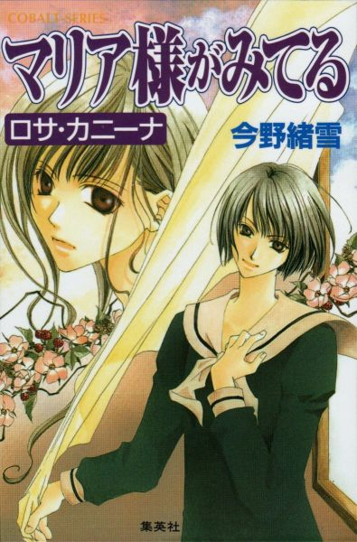
もくじ
ロサ・カニーナ
寂しいぬくもり
黒薔薇さま？
君、何思う
姉妹の存在意義
ささやかな秘密
長き夜の
一月一日
二日に神社で初詣
天敵のいる風景
お姉さまの隣
あとがき
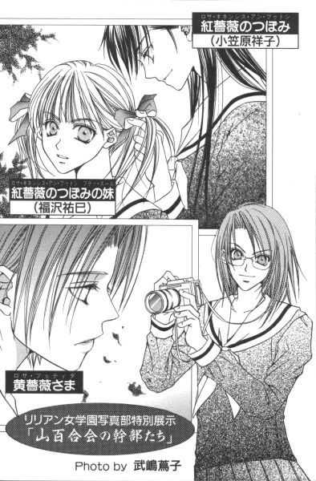

ロサ・カニーナ
「ごきげんよう」
「ごきげんよう」
さわやかな朝の挨拶が、澄みきった青空にこだまする。
マリア様のお庭に集う乙女たちが、今日も天使のような無垢な笑顔で、背の高い門をくぐり抜けていく。
汚れを知らない心身を包むのは、深い色の制服。
スカートのプリーツは乱さないように、白いセーラーカラーは翻らせないように、ゆっくりと歩くのがここでのたしなみ。もちろん、遅刻ギリギリで走り去るなどといった、はしたない生徒など存在していようはずもない。
私立リリアン女学園。
明治三十四年創立のこの学園は、もとは華族の令嬢のためにつくられたという、伝統あるカトリック系お嬢さま学校である。
東京都下。武蔵野の面影を未だに残している緑の多いこの地区で、神に見守られ、幼稚舎から大学までの一貫教育が受けられる乙女の園。
時代は移り変わり、元号が明治から三回も改まった平成の今日でさえ、十八年通い続ければ温室育ちの純粋培養お嬢さまが箱入りで出荷される、という仕組みが未だ残っている貴重な学園である。
年が明けての新学期。
世の受験生たちは、七草粥で正月気分に一応のピリオドを打って、最後の追い込みで鉢巻きを締め直すといった時期であるのだが、そこはのんびりしたお嬢さまたちの集いしリリアン女学園。ピリピリしたムードなど、どこを探しても見あたらない。
始業式の日、新年初のご挨拶ということで「ごきげんよう」が「おめでとう」にスライドしたことを除けば、まあこれといって変化のない日常がスタートした。
それもこれも、マリア様が見守ってくださるお陰。
天のお母さまに感謝して、今後もよろしくお願いします──と、二股の分かれ道にある小さな森の中に立つ白いマリア像に、手袋を外した両手を合わせる生徒たちの姿も清々しい。
その中に。
何か、特別な祈願でもしているのだろうか。先ほどから、ずいぶんと長いことその場に留まって祈りを捧げている生徒が一人。マリア様の庭を取り囲む柵の、正面やや右よりの場所に、やわらかな黒髪を顎のラインで潔く切り揃えた涼しげな顔立ちの少女の姿。
後から登校した生徒が入れ替わり立ち替わり、彼女の隣に立ってマリア様にご挨拶して、もう五人目になるというのに、その祈りは終わらない。いちいち隣の人間を確認してお祈りすることはないから誰も気づかないかもしれないが、かれこれもう三分は経っているだろう。
やがて目を開けた彼女は、何かを決心したように力強い目をしてマリア様を見上げた。
寂しいぬくもり
１
三学期最初の日。
リリアン女学園でも、他校同様始業式で新学期の幕を上げる。
「うー、寒いっ」
一年桃組三十五番、福沢祐巳は廊下に出た途端ブルブルブルッと馬が身体を揺らすみたいに身震いした。
春生まれなので冬が苦手。おまけにこの古い校舎の構造ったら、悲惨だから。廊下なんてほとんど吹きさらし。今すぐ教室に引き返して、ストーブの側でぬくぬくしたい。しかし、それができないのが学校生活の厳しいところで。これから講堂で行われる始業式にでることが、出席している生徒の義務であり権利であるのだから致し方ない。
先ほど鳴った本鈴は、久しぶりに聞くせいだろうか、妙に通る音で冷たい空気の中を響き渡っていった。
いつもだったら、朝の本鈴が鳴りやむと同時に放送朝拝が始まる。けれど、式典のある日はそれはパス。始業式の前に全校朝拝をやっちゃおうというのが学校側の合理的な考え方。
担任の先生も新年の挨拶をして出欠をとると、いつものホームルームを省略して職員室に戻っていった。
「速やかに廊下に整列し、前のクラスに続いて講堂に向かうように」
先生の残していった指示に、生徒たちは「はーい」と素直に答える。
高校に入学してから数えても、始業式と終業式をあわせるとすでに五回目。そうなると慣れたもので、先生の目が光っていてもいなくても、それなりにそつなくこなすものだった。いや、先生がいなくなるからこそ、ちゃんとやるのかもしれないけれど。
「講堂は暖かいわよ、きっと」
冬生まれの桂さんが苦笑する。あまりに寒がって、使い捨てカイロを蝿のごとく両手でスリスリする同級生の姿は結構滑稽なものらしい。
「そのポーズいただき」
声と共にフラッシュが光る。
驚いてそちらを見ると、武嶋蔦子さんが二学期の終業式に持っていたのとはまた違う新しいカメラを「どうだ」って感じで持って笑っている。前回はクリスマスプレゼントで、今回のはお年玉で買ったんだろうって予想はつくけど。いったい何台持てば気が済むのやら。
「蔦子さん、式にカメラはまずいわよ」
クラスメイトたち数人が怖い顔して彼女を取り囲み、厳重注意した。
実は、蔦子さん。二学期の終業式でついフラッシュ焚いて、先生方の視線がうちのクラスに集中したという前科があったのだ。幸い、すぐにカメラ隠してそれからはおとなしくしていたから、式はそのまま続行したけど。近くに座っていた生徒たちは身が縮む思いだったんだから。
「......わかりました。カメラはケースに入れておきます。だから取り上げないで」
「仕方ないわね。絶対に出さないでよ」
すでに貴重品袋は先生が持って出た後だったから、みんな渋々納得してカメラの携帯を許した。下手に教室に置きっぱなしにして、何かあったら大変だ。カメラは高価だし。しかしポケットにカメラ入れると、ワンピースのプリーツ部分が膨らんでちょっとみっともなかった。
「出席番号順に並んだ？ 菊組が出ましたから、続いて行ってください」
級長の号令のもと、一年桃組も二列になって寒い廊下を歩きはじめた。途中通りかかった中庭の日陰には霜柱が土を持ち上げて、まるでキノコが群生しているように見えた。
学園での、寒い一日の始まりだった。
講堂に入る順番は低学年順。まず一年李組、次は藤組、その次は菊組。以下、桃組・松組・椿組と順番通りに進んで所定の席に着く。一年が入場すると、次は二年、そして三年。入学式や卒業式は主役が最後って決まっているけれど、それ以外は年齢が下の者がお姉さまたちを迎える、といった形が、もうずーっと昔から受け継がれている。
二年生が講堂に入ってきた時、はしたないけれど祐巳はつい振り返ってお姉さまを捜してしまった。そんな所を見られたら、「きょろきょろしないの」といって注意されるに決まっているけれど。しかしそれはもう妹の性ということで、特別に許してもらいたい。これは参観日に後ろを振り返る子供と同じなのだ。祐巳以外にも、同じように入場口を見ている一年生は何人もいる。
（まあ、志摩子さんはともかく）
斜め前方にかしこまっている志摩子さんは、予想を裏切らずにちゃんと正面を向いて背筋を伸ばしていた。まあ、ここの姉妹は特殊だからそんなものかもしれない。
（その点、令さまべったりの由乃さんだったら）
しかし、先に入場していた菊組の一団に視線を移せば、由乃さんは隣に座っているクラスメイトと小声で何かお話をしているところ。折しも令さまが登場というシーンだっていうのに、チラリともそっちの方を見ない。
「......」
考えてみれば。
志摩子さんのところは放任姉妹だし、由乃さんのところはいつも一緒にいる姉妹だから今更存在を確認する必要はなかったのだ。──ということは、恥ずかしいことに祐巳は、薔薇ファミリーの一年生の中で一人だけ落ち着きなく視線を動かしていた、と。そういうことになるらしい。
（私、もしかして浮いている......？）
カッと頭に血が上った。そんな時、ちょうどいい具合に二年松組の生徒が入場しはじめたのだ。
お姉さまの名前は、小笠原祥子。クラスで整列する時は、名簿順が基本だから、出席番号七番なんてすぐにやってくる。
ドキドキ。
はしたないと注意されようとも、やっぱりそっちに視線は泳いでしまうもの。
一、二、三、四......。お休みの生徒がいるのか、五番目に祥子さまは現れた。現れて、祐巳の視線に気づいたか、「めっ」という叱るような表情をしてから決められた席に着いた。
（わっ、わっ、わっ......！）
叱られてるっていうのに、どういうわけか頬が緩む。できることなら側に行って、直接お叱りの言葉をいただきたい、なんて。
（もしかして私、マゾ？）
お姉さまがただ憧れの上級生だった頃に比べて、祐巳の「祥子さま病」は完全に、そして確実に進行している。
『決していい状態ではありませんね。お薬を出しておきますから、毎食後必ず服用してください』
白薔薇さまの顔をしたお医者さまの幻覚が現れて、意地悪くニヤリと笑った。ハッとして顔を上げると、すでに三年生の入場も始まっている。
「祐巳さん、じき始まるからそろそろ起きた方がいいわよ」
隣の椅子に座っていた桂さんが、小声で注意してくれた。──どうやら、五分かそこら居眠りしていたらしい。
祐巳は欠伸をかみ殺した。ちょっと寝不足気味だった。理由は、言わずと知れたお姉さま。何日かぶりにお姉さまに会えるかと思うと、昨夜は興奮してあまり眠れなかったのだ。やっぱり、かなり重度の「祥子さま病」だ。
（いけない、いけない）
ぼんやりしていると、また白薔薇さまの幻が現れて無理矢理眠りの国へ連れていかれてしまう。急に暖かくなったものだから、気を抜くとすぐに瞼が自動的に下りてくる。
背筋を伸ばして正面を見る。壇上のマリア様と目があって、何だか居眠りを見とがめられたみたいな気分になった。
それは校門から入った銀杏並木の分かれ道にいらっしゃる真っ白なマリア像じゃなくて、いつもは来客用玄関を入った事務所前のホールにいらっしゃるフルカラーのマリア様。左手にイエズス様を抱いて、頭上には立派な冠をいただいている。今日はお式のために、特別に講堂に出張していらしているようだ。
（あれ？）
出欠をとり終わったらすぐに見えなくなっていたクラスメイトの一人が、割烹着みたいな白い服を制服の上に重ね着して壇上で賛美歌を歌っている。
（ああ、そうか）
聖歌隊も三年生が引退したんだ、と思いつく。それまで一年生は、聖歌隊っていっても主に裏方しかやらせてもらえないってぼやいていたっけ。まあ、裏方やりながら、聖歌を覚えたりしていたんだろうけれど。とうとう本日デビューというわけらしい。
生徒の入場が済んで講堂を見回すと、何となく三年生の辺りが寂しい気がした。いくらのんびりした校風のリリアン女学園であっても、やはりこの時期高校三年生は何かと忙しいのかもしれない。
一学期や二学期の始業式に比べると、欠席者の数がずいぶん多いように感じられた。
２
「それはあるわね」
薔薇の館で、お姉さまが答えた。
「受験される方は、その準備でお忙しいでしょうし。三年生の学年主任の先生も、無理に出てくることはないっておっしゃっているそうだから」
「そうなんですか？」
由乃さんが、後から来た祥子さまの前に温かい紅茶を入れてもってきた。ちょっとの差で椅子を立ち後れて、仕事を取られてしまった祐巳は、手持ちぶさたに冷めかけたカップに口を付け間合いをとった。何だか、緊張する。会えなければ寂しいのに、隣にいたらどうしていいかわからなくなる。「お姉さま」って、本当に不思議な存在だ。
「リリアンはあまり受験態勢整っていないから、各自の自主性に任せられているっていうことかしらね」
言いながら、祥子さまはかじかんだ両手を温めるかのように、両手でカップを包み込んだ。
始業式が終わって、通知票を回収することがメインのホームルームを済ませた放課後。
山百合会の本部である通称「薔薇の館」に現在集まっているのは、 紅薔薇のつぼみとその妹、それから 黄薔薇のつぼみの妹の三人だけだった。
紅白黄の三薔薇さまたちは、祥子さまに連絡事項だけ告げて早々と下校してしまったとのこと。令さまと志摩子さんは、部活やクラスの用事で遅れているだけだから、そのうち来るはずだった。
「少し寂しいわね」
祥子さまが目を伏せてつぶやいた。
（......あ、そうか）
年が明ければ、どうしたって「卒業」の二文字を意識せずにはいられない。祥子さまにとっては紅薔薇さまはただ一人のお姉さまで、祐巳にとっての祥子さまと同じ存在なのだった。頼りにしているお姉さまが遠くにいってしまうことを考えたら、それはやっぱり寂しいに決まっている。おまけに紅薔薇さまはずっと前から他大学受験を公言していた。卒業されるのは仕方ないにしても、できれば同じ敷地内の大学に通ってもらえたら心丈夫だって、祥子さまにしてみればそう思っていたに違いないんだけど。
「お姉さまは──」
祐巳は言いかけて、やめた。やっぱり聞くのが怖い。一年後、祥子さまはどういう選択をしているのであろうか。祥子さまがいなくなった学園なんて考えられない。いや、どのような選択をされようとも卒業だけは逃れられないのだから、高校生活自体が闇に閉ざされてしまうのだ。
「何？」
「いえ、何でも」
お姉さまが留年してくれれば同じ学年になれるのに、なんて無責任なことを考える祐巳は、人間ができていないと自ら反省した。あまりの自分勝手さに、マリア様に顔向けできない。
由乃さんはいいな、とうらやましくなる。令さまはリリアンの大学行くって宣言しているから、こんな風にぐじぐじと悩んだりしなくて済むし、第一同じ敷地内に建つ隣の家に住んでいるという好環境だから、卒業したってしょっちゅう顔を合わせることができるのだ。
ギシギシという階段を上る音が、祐巳たちのいる部屋に届いた。白薔薇さまの超人的聴力には及ぶべくもないけれど、祐巳にだってそれが一人分の足音だということくらいは判断できた。
少し早足だったので、令さまかなと思ったら意外にも志摩子さんだった。おしとやかな彼女にしては、珍しい。
「どなたか、ロサ・カニーナという言葉にお聞き覚えは」
志摩子さんにはこれまた珍しく、部屋に入るなり挨拶を省略して本題に入った。
「ロサ・カニーナ？」
三人は同時に復唱して、それから首を横に振った。
「何なの、それは」
祥子さまは訝しげに顔を向けたけれど、志摩子さんもまた首を横に振ってしまった。
「よくわからないんです」
まあ、わからないから「誰か知らないか」と聞いたんだろうけれど。
しかし「ロサ・カニーナ」。何か、薔薇さまと関係があるんだろうか。──ロサ・キネンシス、ロサ・ギガンティア、ロサ・フェティダ。で、ロサ・カニーナ。
みんな似たようなことを思考しているのか、それぞれが黙って腕組みなんかしていると、今度こそ令さまであろう、ガッシガッシというすごい音をたてて階段を上ってくる音が地響きのように聞こえてきた。
「ねぇ、ロサ・カニーナって何者!?」
ビスケットみたいな扉を開けるやいなや、令さまは大声で部屋の中の人間に問いかけた。奇しくも、それは志摩子さんとほぼ同じ内容。言い方は、ずいぶん違うけど。
「じゃあ、ロサ・カニーナは『人』なのね？」
祥子さまが確認する。たった今薔薇の館に着いたばかりの令さまは、全体の流れを把握できないまま、当然でしょというみたいにうなずいた。
「人に決まっているじゃない。うちの学校の生徒だもの」
「なるほど。三分遅かった分、志摩子より情報が詳しくなっているわけね」
さすが、祥子さま。細かい部分を聞き逃していない。思い返してみれば確かに、志摩子さんはロサ・カニーナという単語について尋ねただけだった。
「令......いえ、お姉さま。お姉さまは、どちらでその情報を？」
冬休みの間、すっかり従姉妹モードに浸かっていたようで、由乃さんは学園内での令さまの呼び方を間違えた。
「うちのクラスの前の廊下。何人かの生徒たちが雑談していたのよ。それだけなら気にも留めないんだけど、私に気づいて急に話をやめたわけ。そうしたら、やっぱり気になるものでしょ。彼女たちが話をやめる直前にしゃべっていた言葉が、妙に耳に残ってしょうがないの」
「それが、ロサ・カニーナ？」
「そう」
令さまがうなずくのとほぼ同時に、志摩子さんが「私も」とつぶやいた。
「私も、令さまとほぼ同じです。たぶん二年生だと思うんですけれど、階段で話し込んでいた生徒たちが、私の姿を認めると複雑な顔をしてその場を去っていったんです」
「志摩子さんに聞かれたらまずい話だった、ってことかしら」
エスパー、もとい名探偵由乃さんは唸る。いや、彼女の場合、だったら時代劇の岡っ引と言われた方がうれしいかも。
すると、祥子さまは同心か。みんな立ち上がって小さな円を描いているところは、長屋の井戸端会議そのままなんだけど。
「私、というより山百合会幹部に関する話題であると、直感したわ」
志摩子さんは思い返すように、静かに天井を見上げた。つられて祐巳も見上げた。あ、蜘蛛の巣。
「ちょっと待って。志摩子はともかく、どうして令はロサ・カニーナを生徒だと思ったの？」
祥子さまの疑問はごもっとも。だけど悲しいかな、祐巳は指摘されないと、その「ごもっとも」に自力でたどり着くことができなかった。もちろん、そのことをお姉さまに気づかれないように、できるだけ顔の筋肉を動かさないようにしていた。
「あれ、何でだろう」
令さまが腕組みしてうつむいた。当然、祐巳も下を見た。今度は床の隅に綿ぼこりを発見。やっぱり約二週間放っておくと、誰も使っていなくても部屋は汚れるものらしい。
「あ、そうだ。何かする、って言っていたんだ。その、ロサ・カニーナが」
ちょっと悩んでから、令さまは脳の奥の方から記憶をずるずると引きずり出すことに成功した。
「何、って？」
由乃さんが急かす。
「ええっと。確か、立候補って言っていた、かな」
「立候補？」
令さまを除く他四名が、同時に聞き返した。でも、祐巳だけ他の人と若干発音のトーンが違う。祐巳のが「立候補って、何のこと？」だとしたら、祥子さまはじめ、志摩子さん、由乃さんは、その疑問をクリアした上で「まさか立候補なんて」って感じなのだ。
「面白いじゃないの、受けて立ちましょう」
祥子さまが不敵に笑った。
「気が重いなぁ」
令さまが短い髪の毛をポリポリとかいた。
「......そう」
志摩子さんは、ただそう言って微笑しただけだった。
由乃さんは。
「どうしようか、祐巳さん」
あろうことか、話を祐巳にふってきた。
（......）
どうしようか、って言われても。何のことを問題にしているのか、さっぱりわからない人間にどんないいアイディアが提供できよう。
しかし、ああ。
ここで「何のことですか」なんて質問する行為は、淀みなく進んでいた話の流れに思いっきり漬け物石を投げ込むようなものであるし。
第一、そんなことしたらまたお姉さまに恥をかかせてしまう。いっそのこと、漬け物石の代わりに自分がその川に身を投じてしまいたい。本気で、どこかに流れていってしまいたいほどせっぱ詰まった状況だぞ。
「一月の末に、次期生徒会役員の選挙があるのよ。立候補するといったら、時期的にまずその選挙に出馬すると考えて間違いないのではないかしら」
隣の祥子さまが、つぶやくように言った。囁きよりは大きく、それでいて祐巳にだけ聞こえるほどのボリュームで。
「お、お姉さま......」
以心伝心と言われれば、聞こえはいいんだけど。これって、妹に恥をかかせまいという祥子さまの配慮以外の何物でもない。出来の悪い妹をもつお姉さまは、その分賢くならなければならないなんて、何ていう皮肉。──って、感傷にひたっている場合じゃなかった。
「じゃ、じゃ、じゃあ。その選挙の結果によっては、お姉さまは次の紅薔薇さまじゃなくなっておしまいになるんですかっ!?」
我に返って、先の祥子さまの説明を反芻してみて初めて、事の重大さに気がついた。
「ちょっと、祐巳。他人の肩を揺するのはおよしなさい、痛いでしょう」
「あっ、すみません」
失敗、失敗。興奮して、思わずお姉さまにつかみかかっちゃった。手を離すと、祥子さまは呆れ顔しながら引きつった袖を直した。
やっと話が見えてきた。
つぼみは無条件で薔薇さまになれるわけではない、っていうことだ。そりゃ、リリアン女学園があるここ、日本という国は民主主義なわけだし。生徒会長を選ぶのに、国民ともいうべき生徒の意見っていうのが全然反映しないとしたら、それはやっぱり変だけど。
でも、やっぱり「つぼみ」はつぼみであるわけだから、次に大輪の花を咲かせて欲しい。個人的な意見だけど。
「何も祥子とは限らない。私にも志摩子にも、平等にその可能性があるんだよ」
令さまが、笑いながら答えた。
「可能性は平等でも、確率は違うでしょうけれど」
「志摩子」
祥子さまが叱るような口調で名前を呼んだけれど、志摩子さんは気にせず自分の意見を述べた。
「仮にそのロサ・カニーナと呼ばれる生徒が現在二年生なら、むしろ自然なことかもしれませんし」
（あ......）
志摩子さんが何を言っているのか。じわじわではあるが、祐巳にもわかってきた。
現在、白薔薇ファミリーには二年生がいない。それは今の白薔薇さまが二級下から妹を選んでしまったという、かなり単純な理由によってできあがった状況だった。それがために志摩子さんたら、まだ一年生だというのに 白薔薇のつぼみという非常に重い荷を背負って学園生活を送ることを強いられてきたのだ。
このまま行けば、来年度は二年生にして白薔薇さま。でも、祥子さまや令さまと同じ学年で適材がいるなら、自分より適当ではないかと言っているんだ。志摩子さんはきっと。
だからもし、つぼみの中の一人が薔薇さまになれないとしたら、それは一学年下の自分が適当だろう、って。
そういうの、身をひく、っていうんだろうか。いや、ちょっと違うような。もっと適切な言葉がありそうな気もするんだけど──。
「逃げるの？」
絶妙なタイミングで、祥子さまが言った。ニュアンス的に近いけど、そこまでキツイ言葉選ばなくっても、というくらい厳しい言葉。もし祐巳だったら、間違ったことしていなくても「ごめんなさい」って泣きながら謝ってしまっていただろう。
「いいえ」
しかし、そこは志摩子さん。学年は違ってもお互いつぼみ同士。真っ直ぐ目を見て反論する。
「私を妹に選んでくださったお姉さまに申し訳ありませんもの。選挙には、出ます。もちろん、負けるつもりもありません」
「ずいぶんと消極的な強気ね」
祥子さまの指摘に、志摩子さんは答えを返さずただ微笑するだけだった。
志摩子さんって計り知れない。──改めて祐巳は思った。
３
とにかく、ここで膝つき合わせていてもらちがあかない。それで、各自が情報を仕入れて明日の放課後対策を立てるってことで解散になった。
薔薇の館から出ると、まだ正午をいくらか回っただけという時間なのに、すでに校舎はガランとしていた。さすがに、始業式から本格的な部活動はないようで、大概の生徒は下校してしまった後。静かな廊下を、無口な一団がひたひたと昇降口に向かう。別に、辺りに遠慮して、ではない。みんな、それぞれに何かを考えながら歩いているようだった。
図書館の脇を抜けマリア像の前まで来ると、五人は並んで両手を合わせる。
それぞれ、いったい何を祈っているのだろう。
いつもの祈りの言葉か。それとも、山百合会役員選挙のことをお願いしているのだろうか。
いずれにせよ、マリア様に向かい合っている時。一人一人は孤独だった。目を閉じて手を合わせる時、人は自分の中にいる聖なる者と対峙しているから。どんなに親しい他者であっても、排除される。本当の意味で他人の心の中に入り込むことなど、できはしないのだ。
銀杏の並木道が、朝よりずっと寒々として感じられた。
由乃さんたちと別れて祥子さまや志摩子さんと停留所で立っている間も、バスに乗ってからも、なぜか祐巳は寂しくて寂しくて仕方がなかった。
「寒いの？」
祥子さまがそっと尋ねた。
「いいえ」
生徒たちの下校ピークに当たっていないから、バスはかなり空いていて、人が乗り降りするたびに外気がストレートに入ってきていた。
「もっとこちらにお寄りなさい。少しはましになるわ」
最後部の長い座席の窓際に座っていた祥子さまは、隣にいた祐巳の肩を引き寄せた。腕と腰とが密着して、コートとか制服とかが間にあるにも拘わらず、人のぬくもりが感じられたような気がした。
温かかった。でも、祐巳はますます寂しくなった。
お姉さまが温かければ温かい分、泣きたくなるのはなぜだろう。
『どうしようか、祐巳さん』
由乃さんの言葉が、突然のように心に甦った。
（......ああ、そうか）
妹歴が長い由乃さんは、多分わかっていたんだ。自分たちが、いずれそのことで悩むであろうことを。
これはお姉さまの危機だから。今こそ支えにならなければならないのに。
（それなのに、私ったら。いつもお姉さまに気を遣ってもらう一方で。何も返すことができなくて）
どうしようか。
（そうだね、由乃さん）
大好きなお姉さまのために、自分たちはいったい何ができるのか。今こそ考えなければならない時かもしれなかった。
バスは大きく右に曲がった。
祥子さまも志摩子さんも、それぞれ近くの窓から外を眺めている。でも、どちらの瞳にも冬の街並みなんか映っていない。
隣にいながら、二人がとても遠くに感じられた。
黒薔薇さま？
１
翌朝、祐巳は少し早めに登校して、図書館に向かった。
リリアン女学園の中学部・高等部図書館の閲覧室は通常七時半から開いている。図書委員の生徒が登校していないから司書の先生の負担になるということで貸し出しや返却は八時過ぎないとできないけれど、授業が始まる前に調べ物をしたり静かに勉強したい生徒などにとってはとてもありがたい。──もっとも、そのありがたいシステムを祐巳は今まであまり活用してはいなかった。
「えっと薔薇の本、薔薇の本、......と」
家にあった植物図鑑では、ロサ・カニーナなんて名前の花は探せなかった。ロサ・カニーナだけではない。ロサ・キネンシスもロサ・フェティダもロサ・ギガンティアも載っていないのだから話にならない。原種九種類、園芸種七種類、計十六種の薔薇の写真が掲載されていたっていうのに。今更ながら薔薇は品種が多いんだって思い知らされて、それで図書館で調べてみることにしたのだった。ロサ・カニーナっていうからには薔薇の名前だ、ってお脳味噌が単純だから信じて疑うことがなかった。
七時五十分。登校して真っ直ぐ図書館の閲覧室に入ると、三つある検索用のコンピューターはラッキーなことに一つだけ空いていた。
検索の仕方は、人名か書名かキーワードのいずれかを選択してから、文字を入力することになっている。祐巳はもちろん「キーワード」を選んで、そこに『バラ』と打ち込んだ。
┌─────────────┐
│ しばらくお待ちください │
│ ただ今、検索中です │
└─────────────┘
（しばらく、ってどれくらいかな）
──と思う間もなく、画面が変わった。
「ひっ」
静かな図書館に遠慮して、祐巳は自らの手で口を塞いだ。
（ひえー......っ）
気軽な気持ちで打ち込んだ『バラ』という文字が、モニターの中ですごいことになっている。該当する書名が多すぎて、画面が次々とスクロールされていく。
（ど、どうしよう）
まるで、ちょっと勢いつけて引っ張ったトイレットペーパーなのに、加速がついて止まらなくなったみたいな感じ。
ぐるぐるぐるぐる。
いったい、いつになったら終わるのだろう。やっぱり、ペーパーの黄土色の芯が見えるまでかな。となると、手もとに残るであろう膨大なトイレットペーパーはどう処理したらいいのだろう。
（うーん）
困った。いや、実際のトイレットペーパーじゃないから閲覧室の床に巻き取られた白い紙の帯が山積みされているわけじゃないんだけど。
┌──────────┐
│ 四百七十二件です │
└──────────┘
モニターにメッセージが出た後、リストの一ページ目に戻った。
（ふう）
助かった。コンピューター内のトイレットペーパーには、自動巻き取り装置が付いているらしい。
（しかし）
四百七十二件もの情報に一つずつ目を通していたら、日が暮れてしまう。まだ一日が始まってから、数時間しか経っていないっていうのに。
書名は分野とか大きさとか金額とかに関係なく、単純にアイウエオ順にリストアップされている。キーワードで探したから、『ああ、いとしき君はバラの面影』なんていう小説がトップで出ている。
（もっと後ろのページ、後ろのページ）
マウスの矢印をスクロールボタンに持っていって、「バラ」で始まる書名のあたりまでページを進める。「バラ」とタイトルにつく本が本当にこんなに図書館にあるのか疑問に思ったけど、書庫に入っている分や大学図書館、初等部や幼稚舎の図書室の分もリストアップされているようだった。今まで知らなかったけど、リストに載っている図書であれば学園内どの場所にある本であっても取り寄せて貸し出してくれるということだから、これは非常に便利なシステムかもしれない。
しかし便利なシステムであっても、コンピューターを使いこなせる人間でなければ猫に小判、豚に真珠、馬の耳に念仏......はちょっと違うか。とにかく検索の仕方が悪かったらしく、バラはバラでも「バラバラ殺人」とか「バラード」とかそういった物まで含まれているものだから、大変なことになってしまった。せめて、分野別にでもしておいてくれたらありがたかったんだけど。
「あの、失礼だけど──」
祐巳が必死になって調べていると、後ろから突然肩を触られた。
「あ、はい」
最初、あまりに長いことコンピューターを使っているものだから注意されたのかと思った。
「すみません、すぐ退きますから」
けれど、違った。三台あるうちの残り二台の前には、今は誰も座っていなかった。
「そうね。すぐ退いて頂戴。福沢祐巳さん」
その人はニッコリと笑った。見覚えはない。雰囲気からして、多分上級生だろう。第一印象は「涼しそう」って感じ。直線に切り揃えられた短い髪のせいで首が寒そうに見えるからか、単に顔立ちの問題なのか。涼しそうと表現したけど、それだけじゃなくて非常にきれいな人でもあった。
「あ、あの──」
検索機は別に空いている。では、なぜ退かなくてはならないのか、祐巳は状況がつかめなくて正直戸惑った。すると、彼の人は祐巳の後ろから手を伸ばすと、勝手にマウスをいじくって検索の終了をコンピューターに命じた。
「調べ物は、昼休みか放課後に改めてしたらいいわ。遅刻したくなければ、ね」
「えっ!?」
我に返って時計を見る。八時二十一分。本当だ。もう予鈴も鳴っている。もうすぐ朝拝が始まってしまう。
「ありがとうございます。助かりました」
「どういたしまして。図書委員だから、それも仕事よ。......さ、急ぎましょう」
彼女もまた登校して真っ直ぐ来たらしく、鞄とスクールコートを手に持って、祐巳と一緒に図書館を出た。
「祐巳さん、薔薇のことを調べていたの？」
「はい」
祐巳は、早足で歩きながらうなずいた。
どうしてそれを、って一瞬思ったけど、考えてみたら相手はコンピューターの検索を終了してくれた人。画面の内容を見られていたのは、当然のことだった。
「家の図鑑では載っていなくて。ロサ・キネンシスも載っていないんです」
「薔薇は品種改良とか多いから。でも、ロサ・キネンシスくらいは載っているんじゃない？今存在している薔薇の多くがあれを祖としているくらいメジャーな花よ」
「え、そうなんですか」
「ええ」
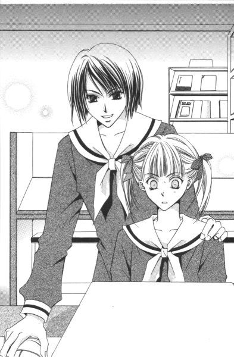
本人はそんなつもりじゃなかったんだろうけど、彼女がクスリと笑ったので祐巳はちょっと落ち込んだ。仮にも 紅薔薇のつぼみの妹ともあろう者が、ロサ・キネンシスのことを他人に教えてもらってどうする。自分で自分を罵倒しながら昇降口に入った。
上履きのつま先を、トントントンと簀の子に打ちつけながら考える。それでも、この図書委員の生徒は随分薔薇のことに詳しいらしい、──って。
「あの、ロサ・カニーナという花をご存じありませんか」
もしかしたら、という軽い気持ちで祐巳は二年生の下足箱がある辺りから出てきたその人に尋ねてみた。
「ロサ・カニーナ？」
一度聞き返してから、彼女はすぐに返事をかえしてきた。
「知っているわよ」
案外あっけなかった。あんなに苦労してまだ調べ切れてないというのに、答えは意外なところに転がっている。
「やっぱり薔薇、なんですか」
「ええ」
「どんな花なんでしょう」
矢継ぎ早に質問すると、逆に「祐巳さんはどう思って？」と聞き返された。
「どう、って」
そんなことまで、正直考えていなかったっていうのが本当のところだ。しかし、こちらは教えてもらう立場の下級生。おまけに、もう時間があまりない。廊下を歩く生徒の数は極端に少なくなり、その少数の生徒たちもほとんどが小走りで二人を追い抜いていく。
「強いてイメージを導きだすとするなら......黒っぽい薔薇」
紅や白や黄色はすでにあるし。ロサ・カニーナが令さまの言うようにリリアンの生徒で、伝統的な三色の薔薇のつぼみの一人を引きずり下ろそうとしている人ならば、やっぱりそれなりに強烈な個性の持ち主であるに決まっている。だから、黒。それに一般的に悪役のイメージっていったら、やっぱり黒でしょう。
「当たり」
その人は目を細めて答えた。
「ロサ・カニーナは黒薔薇なのよ」
丁度、本鈴のチャイムが鳴り始めた。
「あ、いけない。ありがとうございました。ごきげんよう」
祐巳はペコリとお辞儀をしてから駆けだした。涼しげな印象の彼女は、二年生の教室の方にゆっくりと歩いていった。
「また、お会いしましょう。福沢祐巳さん」
そう、小さくつぶやいてから。
２
「祥子さまと、何かあった？」
箒を持ったままぼんやりしていたら、蔦子さんが顔を覗き込んできた。
「どうして？」
祐巳は思い出したように床を掃いた。すると蔦子さんはちり取りを持ってきて、砂埃の集められた所の少し後方にセッティングした。一緒の掃除グループじゃないのに、なぜかその場に当たり前のように存在している。彼女の担当場所の掃除はすでに終わったらしい。
放課後、一斉清掃の時間だった。
「祐巳さんったら、いつになく気鬱なご様子。そうなれば、やっぱり祥子さまがらみ以外ないでしょう。おまけに、今日は放送朝拝にギリギリ遅刻しそうになったし」
「蔦子さん、掃除手伝ってくれるのはありがたいんだけど」
「わかっている、って。原因は、ロサ・カニーナでしょ？」
「どうして、それを」
「何もかもお見通しよ。私を誰だと思っているの？」
写真部のエース、武嶋蔦子さんです。
「子細は新聞部の部長から聞いたわ」
「......部室で盗み聞きでしょ」
ちり取りの中にジャリジャリと砂埃を掃き入れながら、ボソリと突っ込んだ。掃き終わった所から、同じグループの生徒が固く絞ったモップをそっと木目に走らせ始めている。
「固いこと言いなさんな。それより、祥子さまたち大変なことになっているじゃない」
「まあね」
蔦子さんからちり取りをとり上げて、ゴミ箱に直行。しかし写真部のエースは、しつこくついてくる。つきまとわれては掃除の邪魔であるのだが、なまじ手伝いながらなものだから誰も文句は言えなかった。
結局祐巳は、もやもやとしていた部分をうまいこと蔦子さんに聞き出されてしまった。
「つまり祐巳さんは、自分の存在意義についての悩みにぶち当たっているわけだ」
「存在意義？」
そうだった。難しい言葉を使って、話をわかりにくいところにもっていってしまうのである。武嶋蔦子さんという人は。
「存在意義でわからなければ、他の人にはない魅力っていうのかな。ここがあるから『福沢祐巳』なんです、ってことよ。まあ、自分で自分の魅力っていうのは、なかなか気づかないものだけどね」
「魅力、って？ 子だぬきみたいに愛嬌のある顔？それとも、生まれながらの天然ボケ？」
うんざりしながら祐巳が箒とちり取りを掃除用ロッカーにしまうと、蔦子さんは至極真面目な顔をして「そういう表面的なこと言ってるんじゃないんだけど」と言った。
「例えば、祐巳さんがそこにいる。それだけで、人生変わっちゃう人だっているよね」
「私が何もしなくても？」
「そりゃ、そうよ」
ピッチャーが同じボールを投げてよこしても、ちょっとバットの角度が違っただけで、ホームランになったりファウルになったりするんだから、って。あまり野球中継観ないんだけど、それでも何となく言わんとしていることはわからないでもない。
スタート地点は一緒で距離も一緒でも、角度がわずかでも違っていたらボールの落下点はまるで別の場所になる。たぶん、そういうことを言っているんだ。誰も気がつかないほど、ほんの些細な出来事がその人にすごい影響与えちゃって人生変わってしまうとか。
「それって恐ろしくない？」
「恐ろしいわよ、人生は。でも、そこが面白い。祥子さまが祐巳さんを妹に選んだということだって、いい意味で人生が変わるかもって期待があってこそじゃないわけ？」
「うーん」
「だからさ、いいわけよ。祥子さまにとって、自分の分身みたいな妹なんて必要ないわけ。人間、自分にない物を求めるって話、よく聞くでしょ？」
何だか、うまく丸め込まれてしまった気もしないでもない。やっぱり、口では蔦子さんには敵わない。
教室の前半分と後ろ半分別々に掃除を済ませると、元の位置に机を戻す。祐巳が机を定位置まで運ぶと、蔦子さんがその上に逆さに乗せてあった椅子を下ろして回った。黒板の水拭きを終えた生徒が、雑巾を濯いでから椅子の下ろされた机の上を拭いていく。で、それが一通り終わると教室の掃除は終了。面倒くさいワックスがけは、二週間に一度だから今日はパス。
「私......、何したらいいのかな」
「そりゃ、自分で考えないと」
蔦子さんは親身になって聞いてくれたくせに、肝心なところで突き放す。
「厳しいね」
「うん。人間関係なんて、それぞれ違うでしょ？祥子さまの妹は祐巳さんなんだし。私は、その祐巳さんの単なるお友達。だから、新聞部から仕入れたネタを横流しするくらいしかしてあげられない」
そう言ってポケットに手を突っ込むと、蔦子さんは生徒手帳を取り出した。
「蟹名静。二年藤組、出席番号十番。合唱部所属」
「へ？」
「ロサ・カニーナの正体。まだ掴んでいないんでしょ？」
写真も撮ったけどまだ現像していないから明日持ってくる、って。蔦子さんは鼻高々でふんぞり返る。
「ありがとう、蔦子さん！」
持つべきものは、単なる友達。ふんぞり返るだけの仕事は十分にしている。
「カニナってどういう字を書くの？」
「毛蟹の蟹に名前の名」
「珍しい苗字だね」
「海老名があるんだから、蟹名もありでしょう」
「ふーん」
祐巳もまた生徒手帳を出して、その名前をメモした。後で由乃さんにでも、その「蟹名静さま」について何か知っているか聞いてみることにしよう。
「ふーん、ってそれだけ？」
蔦子さんは、がっかりしたみたいな声を出した。
「だめ？」
「あのさ、祐巳さん。蟹名だからロサ・カニーナって。恥ずかしいほどストレートな呼び名について、何かご感想は」
「あ、そうか。全然気がつかなかった」
ロサ・カニーナという薔薇が本当にあるんだって今朝知って、それでそれが黒薔薇だって教えてもらったから、それだけで満足してしまっていた。だからその人の名前なんか、ただの記号みたいなもので。聞いたことがない名前という情報だけが頭に残っていた。どんな名前であったとしても、祥子さまの敵であることには変わりないのだから。
「しっかりしてよ。そんなんで危機乗り切れるわけ？」
それを言われると辛い。ものすごく辛い。自覚しているだけに、それはもう。
「しかしなぁ。お姉さまの山百合会役員選挙も学園生活の中ではかなりしんどいエピソードではあるけれど、そんなこと言っていたらお姉さまの受験あーんど卒業という学園人生最大の試練を迎えている志摩子さんはどうするよ」
「あれれ。白薔薇さまも、受験するの？」
信じられないなぁ、と祐巳は思った。だってそんな素振り全然見せてなかったし。第一受験しようとしている人間が、あんな風でいいのだろうか。
「の、はず。少なくともリリアンの大学や短大に優先入学って話はない。ね、志摩子さん」
丁度教室に入ってきた志摩子さん見つけて、蔦子さんったら強引に連れてきた。
「え？ 何？ お姉さまの進路ですって？」
志摩子さんは首を小さく傾けた。
祐巳は「まさか」って一瞬だけ思ったけど、すぐにその考えを否定した。だって、まさか妹の志摩子さんが白薔薇さまの卒業後の進路を知らないなんてあり得ない。いくら、「そういう姉妹」だからって。もう、年も明けて卒業まで秒読み段階って時なんだから。
でも。
祐巳も蔦子さんも固唾を呑んで見守る中、志摩子さんったら至極真面目な顔をして言ったのだ。
「さあ......？」
さすが、我が道を行く志摩子さん。「そういえば、どうなさるのかしらね」なんて、今更思いついたみたいにつぶやいた。
「......もしもし、志摩子さん。そういう大事なこと、どうして直接聞かないの？」
真冬だっていうのに、蔦子さんのこめかみには汗がたらりと一滴。
「そうね。でも、聞けなかったわけじゃなくて、聞くの忘れていたのよ。わかったわ、今度会ったら聞いてみるわね」
天使のようにほほえんで、志摩子さんは自分の席に帰って鞄から筆記用具なんか出しはじめた。窓ガラスについた水蒸気が光を反射させて、志摩子さんを照らした。
そこに天使の白い翼が存在していても不思議じゃないほど、志摩子さんは白かった。肌の色とかじゃなくて、その存在自体が、っていうのか。祐巳にオーラの色を見る力があるなら、きっと志摩子さんの色は白。さすが白薔薇ファミリー。
それを口にしたら、蔦子さんは鼻で笑った。
「じゃ、祐巳さんは年中赤面しているから紅薔薇ファミリーか」
蔦子さんに座布団一枚。
反論できないところが情けなかった。
３
「二年藤組の蟹名静さま？ ああ、合唱部の歌姫じゃない」
薔薇の館の二階会議室で、由乃さんが即答した。その上、「蟹名だからロサ・カニーナなわけだ」なんて唸るわけだから、さすがなもの。蔦子さんはさっき、当然そういう反応をこそ祐巳に求めていたわけだろうけれど。
「由乃さん、よく知っている人？」
「ううん。でも、結構有名な人だから」
「......そうなんだ」
と、うなずくしかない。祐巳の場合、接点のない人の名前とかあまり覚えていないもので。
「髪が長くてきれいな人よ。学園祭でアリアを独唱したの、覚えていない？」
「たぶん、その時間祥子さまとカレー食べてた」
「なるほどね」
笑いながら、由乃さんは窓を閉めた。お姉さまたちが選挙管理委員会による説明会に行っている間に、二人して部屋の掃除をしたので、寒いけれどしばらく開けはなっておいたのだ。
「一息入れようか」
祐巳は返事を待たずに立ち上がって、伏せてあった二人分のカップをひっくり返した。電気ポットがコポコポ音をたてて、小さな穴から湯気を逃がしている。丁度、お湯が沸いたところだ。
「一休みだね」
由乃さんは自分の肩をグルグルと回した。教室掃除の後だから掃除の梯子というわけだけど、蜘蛛の巣がはびこる館っていうのはいただけない。つぼみの妹たちはお姉さまのために何ができるかまだ思案中で、答えがでないまませめて快適に過ごしてもらおうということで自主的にちょっとだけ念入りな大掃除ならぬ中掃除をしてみたのだ。深い部分は年末に済ましていたから、表面的な部分のみを重点的に。
「由乃さん、コーヒーでいい？」
「うん。粉末ミルク多目にお願い」
「ＯＫ」
お歳暮のおすそ分けだって、二学期の終業式に黄薔薇さまが自宅から持ってきたスティックコーヒー詰め合わせギフトがあるから、現在薔薇の館の飲み物事情は非常にリッチ。祐巳はまず、それぞれのカップにコーヒー、ミルク、シュガーのスティックを一本ずつ入れ、リクエスト通り由乃さんのカップにミルクスティックをもう一本、自分の分はそれに加えてシュガースティックを一本足してからポットのお湯を勢いよく注いだ。由乃さんと二人きりの場合、これで一丁上がり。できるだけ洗い物を少なくしたいから、スプーンで攪拌はしない。意外に混ざっているものだし、ついでにいうならソーサーも省略するのが常だった。
「選挙管理委員会による説明会って、何やるんだろう」
ぼんやりと、祐巳はつぶやいた。掃除が済んでやれやれと座り込んだ途端、疲れがドーッと押し寄せてきたというか。もう何もしたくありません、って感じだった。
「いつ、どんな形で選挙を行うか、とか。立候補者はどんな風に届け出をしたらいいのか、とか。どんな行為が選挙違反に当たるのか、とか。そういうことを説明するんじゃないの？」
「ふうん」
何だか難しそうだな、と祐巳は思った。
「ふうん、じゃないわよ。来年は我が身でしょ？」
「えっ!?」
「しっかりしてよ、祐巳さん。四月になったら私たちつぼみになるんだからね」
「う......ん。そうか──」
うなずいてから、「ちょっと待てよ」と思った。今までできるだけ考えないようにして生きてきた、紅薔薇街道ではあるけれど。今回ロサ・カニーナの登場で、状況に変化が起きているのではないか、と。
仮にもし、今度の選挙で敗れるようなことがあったら、来年度の紅薔薇さまは祥子さまではなくなる。蟹名静さまが新たなる紅薔薇さまになった暁には、彼女の妹が当然 紅薔薇のつぼみになるわけだから、選挙の結果いかんによっては残りの二年と少しの学園生活が、まったく違うものになってしまう可能性があった。
「まさか、祐巳さん。祥子さまが負けるかも、なんて考えてやしないでしょうね」
カップから立ち上る湯気の向こうで、由乃さんが怖い顔をした。
「志摩子さんもそうだけど、そういう消極的な態度、良くないと思うのよね。戦いを挑まれたら受けてたつ。私たちつぼみの妹が気弱になったら、お姉さまたちが力一杯戦えるわけないでしょ」
「あ、はい」
よくわからないうちに、お説教されてしまった。でも、ほんのちょっとだけ、平凡な一生徒となった祥子さまとの学園生活を想像したのは確かだった。みんなの憧れの上級生ではなく、自分だけの「お姉さま」。それも、いいな、なんて思ったりして。
「現職の後継者だったら、当選して当たり前。それが無所属の新人に負けてごらんなさい。祐巳さん、妹としてお姉さまにどんな慰めの言葉をかけられるっていうの？」
その通りです、としか言いようがない。だから本当のところは、お姉さまにはぜひとも勝ってもらわないといけないのだ。
コーヒー一杯を二人がゆっくりと飲み終わった頃、三人のつぼみたちが薔薇の館にやって来た。
「何かお飲み物は」
由乃さんが使用済みカップを洗っている間、祐巳はつぼみたちが囲んだテーブルの側に立ってウエイトレスよろしく聞いて回った。
「渋い日本茶、飲みたくない？」
祥子さまが他の二人に尋ねた。
「いいね」
と、答えたのは令さま。志摩子さんは、何でもいいって言った。何となく、三人ともお疲れのご様子。
「渋い日本茶ですね」
オーダーを繰り返すと、「カップでいいから」と令さまが付け加えた。
「しかし、ロサ・カニーナが蟹名静嬢だったとはね」
ここに来るまでの校舎の廊下とか、階段とか、そういう所をずっと無言で歩いてきたのだろうか。馴染みの椅子に腰かけ、飲み物をオーダーした途端、つぼみたちは肩の力を抜いて雑談を始めた。渋いお茶を入れながら、祐巳は由乃さんと聞き耳のアンテナをそちらに大きく向けた。
「私、あまり存じ上げませんでしたけれど。学園祭でアリアを歌った方でしょう？あの時と、ずいぶんイメージが変わりましたね」
志摩子さんの言葉に、「ふんふん、その人は冬休み中にイメージチェンジしたのか」って思った。しかし、やっぱりというかアリアの歌姫というのはかなり有名な話らしい。
「高二の冬休みに髪の毛ばっさり、ってまるで白薔薇さまみたいじゃない。験でも担いでいるのかね」
「まさか！」
祥子さまじゃないけど、祐巳も「まさか」って心の中でつぶやいた。だって白薔薇さまにあやかりたいくらいの人だったら、白薔薇さまの信奉者なわけで、そんな人が山百合会幹部メンバーに面と向かって宣戦布告するような行為をするわけないと思う。別に理由なんかなくても、髪くらい普通に切るだろう。
「そういえば白薔薇さまで思い出したけれど、蟹名静さんて以前白薔薇さまの妹候補に名前が挙がったことがなかったかしら？」
「あったね、そんな噂」
二年生がしみじみ会話している横で、一年生の三人は同時に「え!?」と声を上げた。一年以上前の話というから、当然のように初耳だった。
「それ、本当の話ですか？」
由乃さんたら、カップをそれぞれの前に置くのも待てずに、テーブルに駆け寄るとお盆を持ち上げたまま質問した。
「単なる噂よ、由乃ちゃん。結局は実現しなかったでしょう？」
祥子さまたちは、お盆の上から銘々にカップを取り上げた。
「そうそう。リリアンかわら版あたりで盛り上がっていただけだよ」
「......ああ、そうなんですか」
もちろん。今、 白薔薇のつぼみである志摩子さんがここにいることが、すべてを証明しているようなものだった。新聞部が去年、白薔薇さまが誰を妹にするか予想投票のようなものをしていたらしい。
祐巳も由乃さんも、カップを持ってそれぞれのお姉さまの隣の椅子に納まった。日本茶の緑色がいつになく渋そうなので、祐巳の場合ポットのお湯で色を薄めてから。しかし他のメンバーたちは、おいしそうにそれをすする。
「彼女。少し栞さんに似ていたかしら」
ため息のような祥子さまの言葉に、全員黙り込んだ。白薔薇さまの、お友達との辛い別れのエピソードは、ここにいる誰もが知っていることだった。
「栞さんはともかく。中学の頃から目立っていたから、私なんかはいずれ彼女の方こそ薔薇の館の住人になると思っていたけど」
正統的な美少女だし、歌をうたわせればその美声に酔いしれない者はない。──蟹名静さまのことを、令さまはそう説明した。しかし、現在の黄薔薇さまの趣味が「希少価値」であったがために、正統的な美少年で、竹刀を持たせれば右に出る者はいないという令さまが、めでたく妹に選ばれたというわけだった。
「栞さんがいなかったら、白薔薇さまは蟹名静さまを妹にお迎えになったんでしょうか」
祐巳が尋ねると、「それはどうかしら」と祥子さまが答えた。
「栞さんと出会う前の白薔薇さまは、人との接点をあまり持たれないタイプだったし。栞さんがいたからこそ、今の白薔薇さまになったのよ」
「そうか......、そうですね」
とにかく選挙管理委員会の説明会に、ロサ・カニーナこと蟹名静さまも来ていたということだった。
立候補の最終締め切りはまだ先であるが、それに先だっての山百合会役員選挙に関わる手順などについて、今日は説明が行われた。参加は自由。休み時間に何度も、立候補予定者に参加を呼びかける校内放送があったので、主立った候補者が顔を合わせる最初の機会となった。
「二年藤組の生徒が取り巻きみたいに数人彼女に付き添って。ロサ・カニーナ、ロサ・カニーナって。見ていて、あまり気持ちがいいものではなかったわね」
「でも、あちらはお一人ですもの」
祥子さまの言葉を受けて、志摩子さんが言った。
「わかっているわ。ただ、不快だって言っただけよ」
好きな物は好き、嫌いな物は嫌い。──いかにも祥子さまらしかった。
でも、蟹名静さまという人は支援者がいるくらい魅力があるということになるのだろうか。祐巳にはいまひとつ納得できなかった。どうも今朝刷り込みされた「黒薔薇」という悪役レスラー的なイメージを、ずっと引きずっているせいかもしれない。
（不快、か）
急須にお湯を注いで、みんなのカップにお代わりを足しながら祐巳は思った。祥子さまが不快なら自分だってもちろん不快だ、と。
お姉さまの美しい顔を歪めさせる原因となったロサ・カニーナを、妹として絶対に許してはいけなかった。
君、何思う
１
それから間もなく、正式に選挙の公示があった。
高等部校舎の廊下には選挙管理委員会のポスターが貼られ、選挙までの日程などが発表された。一月の最終土曜日の放課後が投票日、その三日前の水曜日に立ち会い演説会が行われることになった。
立候補の締め切り日は立ち会い演説会の一週間前ということで、まだ間があったけれど、祥子さまと令さまは受付初日に早々と手続きを済ませ、宣伝ポスター用のケント紙二十枚と演説会で候補者が肩に掛ける襷用の白い布を受け取った。早々と立候補を表明したのは、つぼみの二年生二人だけではない。それはロサ・カニーナも同じだそうだ。
今のところ、立候補者は以上三名。志摩子さんは、どういうつもりなのか、まだぐずぐずとしている。立候補順に当選するわけじゃないから、べつにのんびりしていても構わないのだろうけれど。でも、やる気っていうものをアピールするなら、早いところ立候補を表明した方がいいんじゃないか。──選挙に関してド素人の祐巳でさえ、思いつくことだった。
選挙公示から一週間たったある日の昼休み、祐巳はふと思い立って図書館に行った。別に大きな理由があってのことではない。ただ、何となく。すっかり忘れていたけど、図鑑でロサ・カニーナを改めて調べてみようかとか、あの時の上級生に会えるかなとか、そんな程度のことだった。
「あら、ごきげんよう」
思った通り、その人は閲覧室の貸し出しカウンターにいた。
「どうしたの？ また、薔薇の調べ物？」
初対面の時もそう思ったけれど、物やわらかというか、人当たりがいいというか。とても感じのいい人だ。
「ええ、まあ」
あやふやにうなずくと、彼女はカウンター奥にいた別の生徒に声を掛けてからその場を離れ、祐巳につき合って閲覧室の奥へと歩き出した。
「あの、でも、お仕事中だったんじゃ......」
「いいのよ、気にしないで」
そうは言われても。後に残された図書委員の生徒は、こちらをすごい形相で睨んでいるのだ。やっぱり持ち場を離れるのは、まずいんじゃないかな。
「また、祐巳さんが来るかもしれないと思って、私もいくつか図鑑とか調べてみたのね。それで、良さそうなのを二、三冊、目星をつけておいたんだけど」
歩きながら、彼女は澄んだ声でそう告げた。
「仕事熱心なんですね」
「そうでもないのよ。放課後は部活動で出られないことが多いから、その穴埋めみたいなものかしらね。朝とか昼とかだと、よくいるんだけど」
「でも、一生徒の調べ物のサポートまでなさって」
「ああ。それはたまたま」
百科事典や図鑑が納まっている本棚の側までくると、その人は数冊の本を抜き取って祐巳に手渡した。
「禁帯出本だから、ここで見てね」
「はい。......あの」
お礼を言おうとした祐巳の唇の前に、白い五本の指が花のように開いた。
「お礼なんか言われたら、困るわ。ますます罪悪感もってしまう」
「は？」
「そのうちわかるわ」
そう言い残して、その人はもと来た道を引き返してしまった。
（何なんだろう......？）
そのうち、──って。さっぱり訳がわからない。
取りあえず数冊の図鑑を近くの机に置いてカウンターの方を見ると、先ほどすごい形相で睨んでいた図書委員が、戻ってきた彼女に向かって何やら訴えていた。
やっぱり、持ち場を離れさせて悪かったんじゃないのかな──。そう思いながら椅子を引いてそこに座ると、隣の席にいた生徒が低い声で言った。
「裏切り者」
「え!?」
「いつから敵方と仲よしになったのよ」
びっくりして横を見ると、そこにいたのは何と由乃さん。
「いったい、何のこと？ 敵って何？」
裏切り者とか敵とか。言葉はキツイけど、由乃さんは別に本気で怒っているって風じゃなかった。それより興味津々って感じで、椅子をくっつけて声をひそめる。
「しらばっくれて。敵っていったら、言わずと知れたロサ・カニーナでしょ？」
「ちょっと待ってよ。ロサ・カニーナのこと調べることが、どうして裏切りになるわけ？」
「じゃあ、祐巳さんも調査のために閲覧室に来たんだ。そういうことするの、苦手なタイプだと思っていたんだけどな」
「『も』って？ じゃあ、由乃さんもロサ・カニーナのこと調べにきたの？」
「そりゃそうよ。まずは『敵を知り』でしょ」
しかしその割には、由乃さんの前にある本は植物関係とは無縁のものばかり。禁帯出本というところだけ祐巳と共通しているけど、江戸の物価とか忍者屋敷の見取り図とか。そんなの広げて、どうして調査になるんだろう。
「うーん」
祐巳は腕組みしながら、頭の中を整理してみた。けれど、どうしてもしっくりといかない部分がある。
「あのさ、由乃さん。どこか食い違ってやしない？」
「何が」
「私たちの会話」
「え」
由乃さんもやっとそのことに気づいたようで、「え」の後すぐ「まさか」と言って祐巳の目の前に置かれた数冊の植物図鑑を指さした。
「祐巳さんが言っていた『ロサ・カニーナ』って、もしかして薔薇の花のこと？」
もちろん。もしかしなくても、祐巳の調べ物は薔薇の花のことだった。しかし由乃さんが「もしかして」と言うのなら、すなわち由乃さんの場合は違うってことが推測できて──。
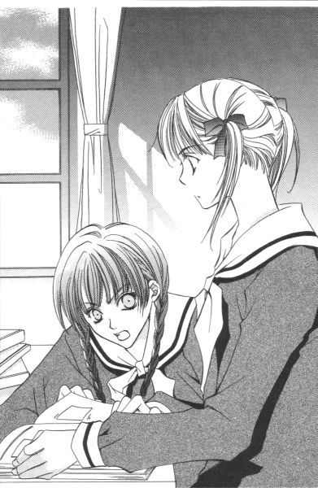
「じゃ、何？ 由乃さんは蟹名静さまの調査に来たの!?」
「そうよ。今頃薔薇なんか調べててどうするの、祐巳さん」
遅れているわね、って人差し指をチッチッチッとメトロノームのように揺らす。ということは、すなわちこの閲覧室内にロサ・カニーナこと蟹名静さまが存在している、ということか。
「え、どこ!?」
「馬鹿」
思わず椅子から立ち上がると、由乃さんに力一杯引き戻されてしまった。そうか、こっちの姿丸出しじゃ張り込みにならないか。
「祐巳さん──」
「え？」
呼びかけに振り返ると、由乃さんは何か突然脱力したように、うつむいて机の上に突っ伏していた。
どうしたんだろう、そのまま動かない。ちょっと、大丈夫なのかな。心臓の手術をしてから随分丈夫になったというけど、やっぱり時々苦しくなるとか──。
「由乃さん？」
少し心配になりかけて肩に手を掛けようとしたその時、由乃さんはクリンと首をこっちに回してものすごくがっかりしたような表情を浮かべて言った。
「......私知らなかったわ。まさか、祐巳さんがまだロサ・カニーナの顔知らなかったなんて」
「ど、どうして!?」
そりゃ、同じ閲覧室にいてその存在に気づかなかったけれど、閲覧室はこれだけだだっ広いんだから見落としたって仕方ないと思う。しかし由乃さんは、ため息まじりに首を横に振る。
「だって、さっき祐巳さんをそこまで案内してきた上級生。彼女が、ロサ・カニーナなんだもの」──と。
２
確かに。祐巳はロサ・カニーナの顔を知らなかった。
蔦子さんが写真を持ってきてくれるという話だったが、完全な隠し撮りだったため無理な体勢の上に障害物が邪魔をして、彼女には珍しくぶれた写真ができあがってきたのだ。その後はなかなか近くでシャッターを切るチャンスがなくて、顔が確認できる写真は一枚もない。取り巻きがロサ・カニーナをガードしているというのが、目下蔦子さんの悩みの種だった。
「学園祭の写真見たけど。遠いし、化粧しているし、髪型違うし、ライトの加減もあって顔が全然違って見えたの」
だから先の「顔を知らない」、は正確には誤り。現物を見たことがなかった、が正しい。いや、現物は見たことあったけど、それが蟹名静さまだとは知らなかったというところが本当の正解なのかもしれないが。
「ふーん」
そんなこともあるのね、って感じで由乃さんはうなずいた。図書委員の親切な上級生という風に認識していたという祐巳の主張も、どうやら納得してくれた。
それにしても、本当に。
やさしそうなあの人が。ロサ・カニーナだなんて、まだ信じられない。
だってロサ・カニーナといったら、祥子さまをはじめ令さまや志摩子さんの敵であるわけで。できれば悪役レスラーみたいに、わかりやすいキャラであってほしい。どっちかっていうと、新聞部の築山三奈子さまみたいに「ほーっほっほっほ」って高笑いの似合う上級生をイメージしていた。でもそうなると、今度は歌姫のイメージとはかなり離れてしまうけれど。
（なるほどね）
それで納得。さっきの図書委員は、持ち場を離れた仲間を責めていたわけではなく、祐巳に対して敵意を向けていたのだ。 紅薔薇のつぼみの妹が堂々とロサ・カニーナの側にいたら、やっぱり面白くないだろう。
チラリとカウンターの方を盗み見れば、彼女はまだこちらを警戒していた。そりゃ由乃さんの存在にだってすでに気づいているだろうし、つぼみの妹が二人揃って閲覧室にいるっていうのは怪しいことこの上ないわけだし。
「祐巳さん。せっかくだから図鑑見れば？」
じき、昼休みも終わる。由乃さんは、自分が出してきた本を棚に戻した。
「今を逃すと、選挙が終わるまで、図書館に出入りするの厳しいよ」
「そうだね」
由乃さんの適切なアドバイスにうなずくと、祐巳は一冊目を手にとった。パラパラとページをめくっているうちに、ある部分で指が止まった。
（何？）
本を閉じると見えなくなるページの中程に、赤いラインのついた付箋が貼られていた。そこは、まさに薔薇の写真満載のページだった。
「まさか」
半信半疑で付箋を剥がしてみると、その箇所には家の図鑑にも載っていた真っ赤な薔薇の写真。横には『コウシンバラ／学名・Ｒｏｓａｃｈｉｎｅｎｓｉｓ』の文字。
（ロサ・キネンシスって、コウシンバラのことだったんだ......）
祐巳はもう一度、今度は真っ直ぐにカウンターの中に視線を移した。これは付箋をつけた人から祐巳へのメッセージと思えてならなかった。もしそうなら、それは蟹名静さま以外あり得なかった。確か薔薇について調べているのかと問われて、祐巳は家の図鑑にはロサ・キネンシスすら載っていないと答えた。
（静さま、あなたが？）
だが、カウンターの中にすでに彼女はいなかった。だから、それを確かめることはできない。
（でも、どうして）
付箋だけを頼りに、次々とページをめくった。思った通り、三冊あった図鑑のうちの三冊ともすべて、ロサ・キネンシスの載っているページに付箋が貼られていた。
「祐巳さん、まだ？」
時計を見ながら、由乃さんが急かす。
「ちょっと待って」
三冊目もバラ科の章は終わりというその時、初めて一冊の図鑑で二枚目の付箋が現れた。すでにロサ・キネンシスは出ている。
じゃあ、何か。
その付箋は何を指し示しているのだろうか。
祐巳は薄々わかっていた。ロサ・ギガンティアでもロサ・フェティダでもない。そこにはきっと、ロサ・カニーナの写真が掲載されているはずだった。
慎重に付箋を剥がす。思った通り、付箋のついていた位置には片仮名ではっきりと『ロサ・カニーナ』と書かれていた。
しかし、その写真はというと。
「......」
まったく祐巳の予想を裏切るものであった。
「どうして」
混乱して、前のページや後ろのページから透かしてみたりと、思わず意味不明の行動をとってしまった。
「どういうこと」
けれど、答えを返せるただ一人の人の姿はない。
祐巳はもう一度、心を落ち着かせてそのページを開いた。そして、その目でそこにある事実を確認する。
『お礼なんか言われたら、困るわ。ますます罪悪感もってしまう』
そんな、彼女の言葉が突然甦る。その言葉の意味が、今やっとわかった。
「......やられた」
祐巳は先ほどの由乃さんのように、その場で脱力した。これでは、ますます蟹名静という人がどんな人間なのかわからなくなるじゃないか。
きれいで人当たりのいい図書委員。
薔薇のつぼみたちに宣戦布告をした、大胆な二年生。
美声でアリアを歌う、合唱部の歌姫。
長い髪をバッサリ切り、イメージチェンジで三学期を迎えた人。
それから、もう一つ。「とんでもないほら吹き」という事項を加えておかなければいけないようだ。
ロサ・カニーナは黒薔薇などではなかったのだ。
ピンク色の五枚の花びらが美しい、それは可憐な薔薇だった。
３
お姉さまが、ため息をはく。
ひっそりと。
宙に、そこには存在しない何かを見つめて。
「お姉さま、お茶のお代わりいかがですか」
「もう結構」
でも、空になったカップの縁を、さっきから人差し指一本で撫でている。
「肩でもおもみしましょうか」
「別にいいわ。凝ってないし」
そう言いながら、自分で自分の肩をマッサージしている。
このところ、祥子さまは変だ。授業中はどうか知らないけれど、放課後薔薇の館で見る祥子さまはかなりの頻度でぼんやりしている。発した言葉とか態度とか、あまり責任とってもらえない感じ。
心ここにあらず。──それが今の祥子さまを表す一番ピッタリの言葉だった。
選挙まであと十日。立候補直後から、選挙用のポスターを作って選挙管理委員会に提出したり、新聞部のインタビューに答えたりで結構ハードスケジュールだったから、今になってどっと疲れが出たのかもしれない。最初は、そんな風にタカをくくっていた。でも、そんな状態が四日も五日も続けば、ただの疲れとは言い難い状況である。
「何かご用がありましたら」
「今のところ、間に合っているわ」
国会議員とか市長とかを選ぶ選挙とは違って、街頭もとい校内演説は禁止されている。やることをやってしまうと、後は候補者も支持者もいきなり暇になる。提出したポスターは、選挙管理委員会が貼ってくれるし、公約が書かれたチラシも作成配布は選挙管理委員会の仕事である。もっとも彼女らにしてみればまだ立候補受付が終了していないのだから、なかなかその仕事に取りかかれないだろうけど。
結局、今祥子さまが選挙関連でやれることといったら、立ち会い演説会用の演説原稿を推敲するくらいかもしれない。しかし、それにしては重いため息。原稿はあらかたできあがっているようだけど、余白にはまるで電話しながら手持ちぶさたで落書きしたみたいにグルグルの丸印とかお花とか描かれていた。
「何か、お悩みでも」
思い切って、聞いてみる。由乃さんたちは未だポスター制作の最中で、テーブルの端で肩を寄せ合い二人だけの世界つくって楽しそうだ。志摩子さんはまた来ない。
「あなたに言っても仕方ないことなのよ」
一刀両断。
祥子さまは悩みがあることをお認めになった上で、祐巳では相談相手になりえないと言ったのだった。
もちろん、その悩みとやらをすっぱり解決する自信なんてなかったけれど、愚痴ぐらい聞いてあげられると思っていただけに、結構なショックだった。
「志摩子、来ないわね」
時計を見て、令さまがつぶやいた。
「私たちに会うのが気重なのよ。顔を見るたび、『立候補しないのか』って責められるから」
祥子さまはその話題に、ちょっとだけ興味を示した。
「祐巳。教室での志摩子はどう？」
「別に、これといって変わった様子はありませんけれど」
祐巳の答えに、祥子さまはまた大きなため息を吐いた。
「そう。あの子も何を考えているのだか」
それきりまた黙り込んでしまう。
何を考えているのかわからないのは、祥子さまも同じだった。
せめて、ポスター描きくらい手伝わせてくれたらよかったのに。家で全部やってきちゃうんだから──。
演説原稿の上で、祥子さまのシャーペンがまた無意味な動きをしだした。いったい何を考えているのだろう。
ロサ・カニーナのことだろうか。それとも別の悩みがあるのだろうか。
することがなくて、祐巳もカップをくるくる回した。座った距離は変わらないのに、祥子さまがどんどん遠くに感じられた。
会えない寂しさと、側にいる寂しさ。
目に見える物と目に見えない心。
祥子さまに会うのが気重になりつつあるのは、志摩子さんよりむしろ祐巳の方だったかもしれない。
４
それに引き替え、ロサ・カニーナの陣営は派手である。彼女、というよりむしろ彼女のクラスである二年藤組が、非常な団結力でバックアップしているのだ。
視察しにいった由乃さんの話では、当選祈願の大だるまこそないけれど、「投票日まであと○日」なんていう日めくりが掲げられた教室は、さながら選挙事務所のようであったという。聞けば、最初はごく一部の生徒がやっていたことらしいのだが、次第に応援しなきゃクラスメイトじゃないっていう風潮になってしまって今や後には退けない状態だとか。もともと祥子さまや令さまファンだった二年藤組の生徒は、板挟みで迷惑だったに違いないけど。
しかし周囲が盛り上がっている割には、肝心の主役、ロサ・カニーナは特に目立った動きを見せなかった。
祐巳はあれ以来、居心地悪くて図書館には行っていないから、このところ全然静さまの姿を見ていない。教室移動の時、ＳＰばりのクラスメイトに取り囲まれながら廊下を歩く彼女を、一度目撃しただけだ。
学園内でいったいどんな危険があるんだ、って突っ込みたくなったけど、そうやって選挙活動に関わっていたい取り巻きの気持ちも、わからないでもなかった。
蟹名静さまは、いったいどういう人なんだろう──。
ある日の放課後。
掃除を終えた祐巳が、そんなことを考えながら一人廊下を歩いていると、何と向こう側から当の本人が現れた。それも、珍しくたった一人で。始終彼女につきまとっているクラスメイトも、怖い顔で威嚇する図書委員もいない。
「ごきげんよう」
静さまは、祐巳を認めると先に微笑して言った。
「ご、ごきげんよう」
あわてて、挨拶を返す。今は立場が敵味方に分かれているとはいえ、上級生を無視するわけにはいかない。本当のところ祐巳は、未だに静さまのことを「祥子さまの敵」とは思えずにいた。
蟹名静という人を注目した時、真っ先に敵というデータをインプットしてしまった由乃さんは明らかに彼女を敵視している。でも祐巳の場合、そうとは知らずに本人と知り合ってしまった。一度ついてしまった、やさしげな上級生というイメージは、そうそう拭い去ることはできない。──「ロサ・カニーナが黒薔薇」だなんていう嘘をつかれたことを差し引いても。
「音楽室のお掃除当番？」
「あ、はい」
彼女の手にしていた楽譜を見て、「ああそうか」と祐巳は納得した。彼女は今から部活動で、音楽室に行くところだったのだ。
出会って当然。側にクラスメイトや委員仲間がいないのも、うなずける。
「久しぶりね」
静さまは挨拶のために一時休止した足の歩みを、なかなか復活させなかった。音楽室に続く廊下で、ロサ・カニーナと立ち話。誰かに見られたら、誤解されそうなシチュエーションだったりして。
でも、上級生相手に一方的に話を切り上げて「さようなら」をしてしまえるほどの度胸は、残念ながら祐巳は持ち合わせていない。
「あの、お早いですね」
じっと見つめられて、何だか言葉に詰まって、当たり障りのないことをつぶやく。
「ええ。部活の日は、掃除が終わったら急いで来るの。誰もいない音楽室が好きだから」
「ああ、そうなんですか」
そう答えると、静さまは「......やっぱり」と眉を下げて苦笑した。
「祐巳さんも、私が全然目に入っていなかったのね」
「え？」
「いつだったか図書館で会った時、もしかしたらって思ったんだけど」
「あの」
だから何なんでしょう、と首を傾げる。本当はそれ以前に知り合いだったとか、そういう風に聞こえるんだけど。
「別に、特別何かあったわけではないけれど。私はあなたのことよく覚えていたわよ。だって掃除をしにきていた祐巳さんに、音楽室で時々お会いしていたから。二、三言葉を交わしたこともあるし」
「えっ、本当ですか!?」
それは、失礼ながら今の今まで気づかなかった。祐巳の驚きがあまりに大きかったので、静さまは少し落ち込んだようにため息を吐いた。
「すみません」
「いいのよ。私が教えた嘘情報とで相殺にしましょう。花の方のロサ・カニーナ、ちゃんと見てくれたんでしょう？」
「......ええ」
「あれね。私を覚えてくれなかった祐巳さんに、ささやかな報復」
静さまはフフッと悪戯っぽく笑った。
聞けばクラスメイトに花の名前に詳しい人がいて、その人が「蟹名」に引っ掛けてロサ・カニーナと呼びはじめたのがそもそもの始まりだそうだ。名前で呼び合う校風のリリアンでニックネームが定着したのは、やはり生徒会役員選挙がきっかけ。次期薔薇さま候補の三人が 紅薔薇のつぼみとか 黄薔薇のつぼみとか 白薔薇のつぼみとか呼ばれているので、静さまの応援団がそれに対抗しているらしい。だけど、当の本人は少し閉口しているみたいだ。
「いっそ黒薔薇の方が格好よかったわね。だってピンクって日本語にすると『桃色』とか『桜色』とか別の植物の名前をいれないといけないでしょう？それじゃ、薔薇に失礼だもの」
「ああ、なるほど」
紅薔薇、白薔薇、黄薔薇は収まりがいいけど、桃薔薇とか桜薔薇なんていうのは何かおかしい。かといって薄紅薔薇じゃ、ちょっと間が抜けているし。しかし、そんなことを考えてたなんて、静さまってちょっとお茶目だ。
「祐巳さんにも覚えてもらっていなかったということは、私、やっぱり影が薄いのかしら」
静さまは視線を逸らして、少し離れた窓から見える高木の枯れ枝を見つめた。
「い、いいえっ。私の周囲では、静さまのこと知らない人はいませんでした。何度もお会いしていながら覚えていなかったというのは、たぶん私にかなりの問題が。......私、あまり他人のデータをもっていなくって。薔薇さま方の名前だって、近頃ようやくと覚えたところだし。由乃さんと令さまが従姉妹だって知ったのも、『黄薔薇革命』の頃で。......ああ、何言っているんだろう、私」
しっちゃかめっちゃかになってしまった。フォローするつもりが、自分の恥をこれでもかって挙げ連ねてどうする。
「そう」
静さまは、少し笑った。そして続ける。
「でも、祐巳さんの場合、小笠原祥子さんだけは特別だったのでしょう？」
「......ええ、まあ」
「うらやましいわ」
何がうらやましいのか、祐巳にはすぐにはわからなかった。でも、少し考えてから、「あれ、もしかして」って思った。
「あの......。失礼ですが、静さまは姉妹は」
「私は、一人よ。一年の時は、申し込んでくださった方もいたけれど。全部お断りしてしまったし。妹を、といってもなかなかピンとこないし」
「......」
考えてみれば、白薔薇さまの妹候補に挙がったくらいなんだから、少なくとも去年の今頃まで静さまにはお姉さまがいなかったということになる。そして、そのままフリーで二年に昇級して妹も持たずにここまできた、と。
「でも、珍しいことではないでしょう？ 藤堂志摩子さんだって祥子さんの申し出を断ったし、白薔薇さまだって二年の時に妹をつくらなかった」
「でも」
こんなにきれいで感じのいい人が、ずっと一人なんて。やっぱり祐巳には信じられなかった。
人間顔だけじゃないっていうけれど、顔も忘れちゃいけないと思う。
いつか桂さんが言っていた。妹選びなんて、早い者勝ちだって。だとしたら、やっぱりよくは知らない新入生の中からこれぞという生徒を見つける術として、顔は重要なポイントとなるはずだ。白薔薇さまだって「顔で選んだ人間を知っている」って言っていたし。
「あれー、祐巳ちゃん？」
白薔薇さまのことを考えていたからか、突然白薔薇さまの声が幻聴で聞こえてきた。しかし一応振り返ってみると、背後十メートルという所に本物の白薔薇さまが立っていたものだから二重に驚いてしまった。
「じゃ、私はこれで」
静さまは、「またね」というようにそっと祐巳の肩に触れると、そのまま音楽室に向かって歩いていってしまった。白薔薇さまほどの大物が登場しては、退散するしかないということだろうか。
まあ、静さまは現在のつぼみたちの敵なわけで、そのつぼみの一人である志摩子さんのお姉さまである白薔薇さまはいわば敵の身内だから。ここはニアミスくらいにおさえておいた方が賢明かもしれない。──その割には、祐巳には無防備に近づいてくるけれど。
「お邪魔虫だったかな」
言いながらゆっくりと近づいてきた白薔薇さまは、しかし次の瞬間耳を疑うような言葉を発した。
「きれいな子だね。祐巳ちゃんのお友達？」
「へ!?」
「何、変な声だしてるの。今、一緒にいた生徒のことだよ」
「......それ、何の冗談ですか」
他人のこと偉そうに言える立場じゃないけれど。自分の妹候補に名が挙がった人間を、そう簡単に忘れるか普通、って。祐巳は心の中で握り拳を振り上げた。
「冗談、って？」
でも白薔薇さまの顔は本気も本気。祐巳が何をもって「冗談」と言ったのかさえ、本気で悩んでいる。
「白薔薇さまって、仲間だぁ」
思わず、祐巳は顔がほころんでしまった。頭の中にある個人のデータ・ファイルの容量が少ない人間、ここにも一人発見。そうそう。世の中完璧な人間なんて存在しない。誰しも苦手分野はある。
うんうん、って一人納得していると、合唱部の部員たちがぽつぽつと音楽室に集まりはじめてきた。
「場所変えましょう、場所」
祐巳は白薔薇さまの手をとって最寄りの階段を下った。音楽室なんて敵のテリトリーといっていい場所の近くで、敵将の噂話なんかするものではない。敵将は友好的でも、側近が怖いんだから。
「何なの、祐巳ちゃん」
「さっきの人が、今話題のロサ・カニーナです」
階段を二階分下がって理科室の前までくると、祐巳は神妙に告げた。
「へー」
なんて言いながら、白薔薇さまったら「それ何」と付け加える。受験勉強ばっかりしていると、世間のことに疎くなるのかな。いや、静さまの顔を知らなかったのはそれ以前の問題だ。
「あの......、白薔薇さま？蟹名静という名前に、聞き覚えは」
「あるような気もするけど、よく覚えてないなぁ。あれだけ美人で、ノー・チェックってことないと思うけど。......あ、わかった。山百合会の幹部オーディションに出たいって言っている二年生の生徒って、あの子なんだ」
祐巳が音楽室の側を離れたがったこととか、今話題であるということとか総合して、白薔薇さまは思い当たったみたいだ。
「まあ、そういうことですが」
しかし、それは選挙であってオーディションではない。
「ふーん。きれいな子だから、いいんじゃない？」
理科室の扉に鍵が掛かっていることを確認してから、白薔薇さまはそれに寄りかかった。
「ちょっと待ってくださいよ、白薔薇さま。そうじゃないでしょ、普通」
さらりと言ってしまうから、突っ込まなきゃいけない方はたまったものではない。
「普通、って？」
「普通、こういう場合、妹である志摩子さんを応援するものじゃありませんか」
当然でしょう、と祐巳は小さな胸を張った。
「そうかもね。でも、志摩子は立候補していないんでしょ？だったら、ここはやりたい人にやってもらえば？」
「違います！ 私は、白薔薇さまに志摩子さんを説得してもらいたい、と」
「志摩子が説得して欲しいって言った？」
「そんなこと、言うわけないじゃないですか」
あの、志摩子さんが。どうして祐巳に弱音を吐くだろう。
「でしょ？ だったら説得しない」
「どうしてですか！」
「基本的に三年生は口出ししちゃいけないの、役員選挙に」
「はぁ？」
「だから、三年生が受験とかで忙しいこの時期選んで選挙をやるわけ。だいたい選挙権もないのに、面倒くさいことに巻き込まれたくないなぁ。こんな私だって、一応受験勉強らしきものをやっているの。わかった？」
面倒くさいって、白薔薇さま。
「どうしてそんなに冷たいんですか」
祐巳が唇をとがらすと、白薔薇さまは軽く笑った。
「しょうがないでしょ。リリアンで『薔薇』と呼ばれた生徒はみんな、この時期こうやってお姉さまの力を借りずに乗り越えてきたんだから」
偉そうに言うけど、白薔薇さまの時は候補者がつぼみだけで楽な選挙だったんだから、自分の時と同じように考えるのは間違っているんじゃないだろうか。
「考えてもごらん。生徒会長っていうのはね、自分が生徒たちを引っ張っていかないといけないわけ。その資質を審査されるのが選挙でしょ？お姉さまの力を当てにしているようじゃ失格よ。確かに志摩子は私の妹だけど、絶対に白 薔 薇になってもらわないといけない、なんて思ってやしないの。あの子がなりたいなら自力でどうにかすればいいし、嫌なら出馬しなけりゃいい。簡単なことじゃない」
「......」
そりゃ、そう言われちゃその通りなんですけど。でも、上手く説明できないけど、理屈じゃなくて姉妹なんだからその、いろいろと心の支えになってあげるとかできないものなのかって思った。
「じゃあ、黙って見ていろとおっしゃるんですか」
正直いって、失望した。失望ついでに泣きたくなった。
姉妹だから、祐巳はいつだって祥子さまの力になりたいと思っている。姉と妹、立場は逆だけど白薔薇さまだって同じ気持ちだって信じていた。だからほんの少し期待していたのだ。白薔薇さまが道を示してくれるんじゃないか、って。
だけど、間違っていた。白薔薇さまは全然頼りにならない。
「別に黙って見てろなんて言ってないでしょ」
白薔薇さまは子供に向かって言うみたいに、頭撫でながら顔を覗き込んできた。
「私は何もしない、って言っているだけ。だから祐巳ちゃんが首突っ込むのは、祐巳ちゃんの勝手よ」
「は？」
「じゃあね」
話を途中で突然ブツッと切って、白薔薇さまは寄りかかっていた理科室の扉から身を起こした。
「じゃあね、って、白薔薇さま。何かご用があったんじゃ──」
早くも背中を向けて歩き出してしまった白薔薇さまを、祐巳は呼び止めた。そういえば、何のために校舎の端っこである音楽室の側なんかに現れたのか、聞きそびれていた。
「祐巳ちゃんに聞きたいことがあって探しにきたんだけど、だいたい状況はわかったから、もういいの」
バイバイ、って手を振った白薔薇さまの後ろ姿は、廊下を曲がってすぐに見えなくなってしまった。
「何なの、いったい」
身近にいる人が、いったい何を考えているのかわからない。
祐巳は最近、なぜだかしょっちゅうそんなことを思っているような気がする。
５
志摩子さんが立候補を表明したのは、立候補受付終了日の放課後。受付締め切り時間の十五分前のことだった。
宿題を忘れたことがない、レポートは余裕をもって提出するといった几帳面な彼女がぎりぎりまで粘ったというのは、それほどまでに悩み続けた結果だと思う。
一番最初にロサ・カニーナの噂を耳にした時、はっきりと戦う意志を示していたのに、途中で気が変わり、というより思うところがあってぐずぐずと立候補を日延べにし、結局出馬する決心を固めた志摩子さん。優柔不断って批判する人（もちろん二年藤組の生徒）もいたけれど、彼女なりにこの十数日間を悩みぬいて出した結論であるんだから、立候補の手続きをしたのが受付初日だろうと最終日だろうと関係ないことだった。
「立候補しないの？」
受付最終日の昼休み、祐巳は志摩子さんを誘って薔薇の館でお弁当を食べた。教室では外野が多すぎるし、季節的に外でランチという雰囲気にはならない。幸い薔薇の館の二階には、人の気配はなかった。昼休み明けの授業が体育の由乃さんは、今日はたぶん教室でお弁当を食べている。由乃さんが来ないとなると、令さまの来る確率もぐーんと低くなる。山百合会幹部メンバーは、昼休みに薔薇の館に来ることもあれば来ないこともあった。学園祭の前とか、強制的に招集がかかる場合は勢揃いするけれど。
だから今日だって、後から誰か来るかもしれない。だけど、その時はその時。祐巳は志摩子さんのクラスメイトとして、最後の説得をする予定だった。
後で取り下げてもいいから、取りあえず立候補の手続きだけでもしてくれないか、って具合に話を運ぶことができないものかと思っていた。でも、そういういい加減な態度をとりたくないからこそ、今日まで立候補の届けを出さなかった人なんだろうし。志摩子さんの首を縦に振らせることは、なかなか難しいかもしれない。
「静かね」
先の「立候補しないの？」に対する答えは脇に置いといて、志摩子さんは窓から入ってくる冬の日差しに目を細めた。
「......実は、迷っているのよ」
しっかり一分はためてから、志摩子さんは答えた。
「どうして、って聞いていい？」
「自分の中で、うまく整理できていないの」
「うん」
それでもいいから、って促すと、志摩子さんは食べ終わった空のお弁当箱をランチョンマットにしていた大判のハンカチで包んでから話し始めた。
「祐巳さんはどうか知らないけれど、私ね、別に生徒会長になりたくて白薔薇さまの妹になったのではないのよ」
「私だって！」
テーブルの正面に座った志摩子さんに向かって、祐巳は身を乗り出すようにして言った。
「私だって、ただ祥子さまが好きだっただけで──」
「......そうね。本当にそうよね。たとえお姉さまが薔薇さまと呼ばれる方でなくても、たぶんロザリオを受けるはずよね。それが正しい姉妹の関係だわ」
「志摩子さんだって、白薔薇さまのこと好きでしょ」
「ええ。だからお姉さまのお役に立ちたいというだけで、山百合会のお手伝いをしているの。そういうわけだから、本当のところはお姉さまが卒業なさった時点で山百合会に未練はなくなるの。お姉さまの後を引き継ぐような気はしていたけれど、それはたぶん例年のようにつぼみ以外の立候補者が出ないだろうと思っていただけのことだし」
「えーっ!?」
祐巳が叫ぶと、志摩子さんは小さく笑って「ごめんなさいね」と言った。
「私にとって、『所属』は足かせなの。できれば、いつでもどこかに行かれるように、できるだけ身軽でいたいと願っている」
「じゃ、学校も嫌い？」
「嫌いじゃないわ。......でも、好きとか嫌いとかじゃないの」
「難しいね」
「ほんと。こういう性格だから、父が心配して学校に行かせているのだし、お姉さまも私を山百合会に引っ張り込んだのでしょうね。私は一人でも苦にならないから、放っておくと孤立しがちなの。私のことをよくわかっている人は、だから敢えてどこかのグループに組み込もうとするのよ」
何となくだけど、白薔薇さまと志摩子さんの関係がわかりかけてきた気がした。白薔薇さまは、志摩子さんのことを「よくわかっている」のだ。よくわかってくれている人だからこそ、志摩子さんはロザリオを受け取った。たぶん十六年の歴史の中で、自分を理解してくれた人間はそう多くいなかったから。
「じゃあ、やっぱり山百合会の中心部にいた方がいいんじゃないの」
「それがお姉さまの意向なら、って。最初はそう思ったのよ。薔薇の館に出入りして、山百合会のお手伝いして、よく知らない生徒からも 白薔薇のつぼみなんて声をかけられて。気づかない間に、人との絆が増えている。それを心地よく感じることさえある。祐巳さんや由乃さんともお友達になれたし」
「私だって、志摩子さんと友達になれたことうれしかったよ。だから、もっと一緒にいたい。ね、どうしてそれじゃ駄目なの？」
「駄目なんて言っていないでしょう？ ただ、別に考えることもあって」
「考えること、って？」
「私は生徒を引っ張っていけるような人間ではない、とか」
「何言ってるの」
思わず、笑ってしまった。志摩子さんみたいにしっかり者で、みんなから慕われていて、やさしくて勉強もできて、リーダーの見本みたいな人がそんなことを言ってしまったら、もうだれも薔薇さまになんか立候補できやしないだろう。その証拠に、志摩子さんは二回山百合会幹部からスカウトされたのだ。──白薔薇さまと祥子さま。
でも志摩子さんは笑っていなかった。
「それだけではないし」
真顔で、言った。
「あと、何？」
「私が存在していないリリアン」
「え？」
「もし、私がリリアン女学園に入学していなかったら──って」
「何、それ？」
確か志摩子さんは中学受験でリリアンに入ってきたんだった。
でもさ。
祐巳みたいに物心つくかどうかで親にリリアンの幼稚舎に入れられた人間が「もし」なんてしみじみ言うならともかく、まだ四年も経っていないことを蒸し返しても仕方ないと思うけど。十二歳といえば、少なくとも物心はついているはずで。そこには、自分の意志というものが少なからず働いているはずなんだから。
「もし、の話よ」
「もし、ね」
「ええ。そうしたら、白薔薇さまは私を妹には選ばなかったでしょう？時間はかかったかもしれないけれど、一級下の、今の二年生から妹を見つけたかもしれない」
「それが静さまだって言うの？ だから、静さまが次の白薔薇さまに相応しいって」
それは違うだろう、って祐巳は思った。二年生の時、親友との辛い別れがあった白薔薇さまがすぐに妹を作れなかったのは事実かもしれない。でも、一学年下の生徒から妹を選ばなかったのは時期的な問題だけじゃない。そこに「妹にしたい生徒」がいなかったということだ。
「そうね。妹をもたなかったかもしれないわね」
うなずいて、志摩子さんは続けた。
「じゃあ、妹を持たなかった可能性を考えてみましょう。だったら、どうなっていたと思う？」
「どう、って」
「結局、選挙になるの。今と同じ状況ね」
だからって、戦わずしてその座を明け渡す、っていうのはどうだろう。
「でも、現実に志摩子さんはここにいるじゃない」
「ええ。だから『もし』の話」
もし、の喩え話にしては何だかなぁ、と祐巳は思った。何だか、その「もし」こそを現実として錯覚しているような。
「志摩子さん、ここからいなくならないよね」
その質問に、志摩子さんは唇を少しだけ上げて答えた。
「そうは望んでいないけど──」
最後まで言い終わらずに、志摩子さんの言葉は途切れた。
「どなたか、いらした？」
「え？」
祐巳も耳を澄ます。
ギッギッギッ、と階段のきしむ音が確かに聞こえた。
「でも、誰だろう」
足音で聞き分ける能力はまだまだ未熟だけど、大ざっぱに分類くらいはできるようになっていた。祥子さまと紅薔薇さまと黄薔薇さまが同じグループ、とか。急いでいる時の由乃さんは令さまの足音に似ているとか。それくらい。
テンポといい、体重のかけ方といい、すごく丁寧っていうか、慎重というか。きしみが令さまの三分の一くらいしかたたない。こんな歩き方するのは志摩子さんくらいなんだけど、当の本人は目の前にいるし。
階段を上り終えたその人は部屋の前まで来ると、ビスケット型のドアをノックした。
コンコン。
スタッカートが効いている。木琴みたいにとてもいい音。
だけど、変。
いつものメンバーだったら、ノックをしてから自分で扉を開けて入ってくるのに。そのままこちらの応答を待っている感じ。
「誰かな」
比較的ドアに近い方に座っていた祐巳が、「はい」と先に立ち上がってノブに手を掛けた。本当に、その時はまだ軽い気持ちで。山百合会幹部メンバーの誰かが、重い荷物を持っていて両手が塞がっているのかもしれない、とか。両手が塞がっていたらノックもできないなんて、そんなところまでは深く考えてなくて。
カチャリ。
馴染みのある手応えを祐巳に伝えて、扉は軽く開かれた。
「──」
開けてビックリ玉手箱。そこには、予想外の人物が立っていた。
「ごきげんよう、祐巳さん」
ロサ・カニーナこと蟹名静さまは、背筋をぴんと伸ばしてお上品にほほえんだ。
（何が始まるのー!?）
祐巳は顔を引きつらせながら、心の中で叫んだ。
部屋の中には、志摩子さんがいるっていうのに。
６
「階下でお声をかけてはみたのだけれど、お返事がなかったので勝手に上がらせていただいたの」
部屋の中に通され、椅子を勧められ、出された紅茶を一口飲んでから、客人は「ご迷惑だったかしら」と言った。
「いいえ。こちらこそ、失礼いたしましたわ。二階におりますと、どなたかいらしても気がつかないことがありますの。遠慮なさらず入ってくださった方が、私たちも助かります」
ちなみに、静さまを部屋に入れたのも、どうぞって椅子を勧めたのも、お茶を入れたのも、この志摩子さんだった。正面にロサ・カニーナ、背後にロサ・ギガンティア・アン・ブゥトンという板挟み状態にパニックを起こした祐巳はその場に凍りついてしまい、しばらくの間役に立たなくなってしまったからだ。
静さまは一人だった。クラスや委員会にいる取り巻きを誰一人伴わず、単身敵方の薔薇の館に赴いたのだ。こちらに何人いるかなんて、まるで考えずに来たのだろう。その証拠に、あまりに人がいなくてビックリしていた。
客人はもう一口、とても優雅にお茶をすすった。
いつものメンバー以外がこのテーブルについてお茶を飲んでいる図。それはなぜか不思議と自然で、同時に妙な違和感をもたらした。
彼女は過ごし慣れた場所にいるように、とてもこの部屋に似合っている。なのに、やっぱりどこか本当じゃないって、祐巳の心が拒絶している。間違い探しをしているみたいに、そこでは彼女だけ異質だった。単に、慣れの問題かもしれないけれど。
しかし、静さまが当選した暁にはこれが日常になる。彼女が加わりその位置にいた誰かがいなくなるなんて、やっぱり想像がつかなかった。
「時間がないから前置きは省かせていただくけれど、私、今日は志摩子さんにお話があって来ましたの」
どうにか自力解凍を終えた祐巳は、腕時計を見た。昼休みも、残すところあと十五分といったところだった。
「だったら、あの......。私、席を外しましょうか」
「それには及ばないわ。いて頂戴、祐巳さん」
引き留めたのは静さまだった。志摩子さんもうなずいた。二人とも、冷静。表面的にはものすごく友好的で、敵対関係にあるようには見えない。まあ、敵だ味方だなんて思っているの、周りの人間だけかもしれないけれど。
祐巳は、向かい合うように座った二人の中間地点の椅子を選んで腰かけた。立場上は志摩子さん側の人間だけど、この場合片方の味方についちゃまずい気がした。それに、あまり大きな声では言えないけれど、静さまのこと嫌いじゃなかった。むしろ好きな方に針が傾いているくらい。
「お話、伺いますわ」
志摩子さんが言った。気のせいか、さっきのどこかに漂っていってしまうような雰囲気が消えて、シャキッとしているように見えた。
「私が、生徒会役員選挙に立候補したことはご存じよね」
静さまが、話を切り出した。
「ええ」
穏やかに、志摩子さんがほほえむ。この場合祐巳は立会人という立場だろうから、口を挟むのを控えることにした。
「でも、それはあなたや他のつぼみに対して不信任という意味ではないの。それはわかってくださる？」
「もちろんですわ」
静さまは、志摩子さんたちを生徒会長として支持できないから「自分がなろう」って思ったわけじゃない、と弁解したわけだ。で、志摩子さんは「そんなことわかっている」と。そこまでは祐巳もわかった。つぼみたちを認めないという考え方がこの世に存在するなんて、そんなこと考えてもみなかったから、正直ちょっと驚きだったけど。
「じゃあ、どうして立候補なさらないのかしら。私が立候補しなければ、あなたは祥子さん令さんと一緒に届け出をしたのではないの？」
「そうかもしれません」
「締め切りは今日の放課後よ」
「ええ」
志摩子さんもそれは、静さまに言われなくても十分わかっていること。だって、祥子さまや令さまが顔を見る度急かしているし。さっきまで祐巳ともそのことについて話していたんだから。
「どうするの」
「それはあなたに申し上げることではないと思います」
志摩子さんには珍しく、ちょっとキツイくらいの口調できっぱりと答えをはねつけた。当たり前かもしれないけど、祐巳がさっき同じような質問した時とはずいぶんと反応が違う。
「......そうね」
しかし静さまは志摩子さんに対して「少し意外」って顔をしたものの、臆することなくすぐに言葉をつないだ。
「ただ、私はあなたが迷っているなら、新たな道を示せるかもしれないと思ってきたの」
「道、ですって？」
「私は、あなたが立候補を躊躇っている理由を、他のつぼみと学年が違うという点ではないかと思ったの。あなたは今年度、一年生でありながらつぼみとして随分がんばってきたわ。人一倍苦労したのに、二年生と三年生、二年連続して白薔薇さまを引き受けなくてはいけないなんて、気が休まる暇もないでしょう」
「何をおっしゃりたいのか──」
志摩子さんは、天使みたいなきれいな顔を少し歪めて聞き返した。よかった。意味がわからないのは自分だけではなかったんだ、と祐巳は安心した。
「もし、祐巳さんたちと肩を並べたいという思いがあるのなら、私を利用なさい、──って。そういうこと」
まだ少し回りくどかったので、志摩子さんが静さまの言葉を受けて単刀直入に聞き返した。
「来年度の白薔薇さまをあなたに託して選挙に立候補するなと、あなたは私におっしゃっているのですか」
（え!?）
まさか、静さまがそんなことを言い出すなんて思っていなかったから、祐巳は椅子を飛び上がりそうになった。嘘でしょう、と静さまを見れば、彼女は否定するどころか慈悲深いほほえみをたたえて志摩子さんを見つめていた。
「もちろん、だからといってあなたを薔薇の館から追い出すような真似はしないわ。幸い、私には妹がいない。現在の白薔薇さまが卒業なさった後、私はあなたを妹として迎えるつもりよ」
「静さまは、志摩子さんのことを好きだったんですか!?」
がんばっていたんだけれど、ついに祐巳はこらえきれず会話に割り込んでしまった。
「違うわよ、祐巳さん。静さまは、そんなことを言っているのではないわ」
もう少し黙っていて、と志摩子さんに注意されて、仕方なく口にファスナーする。静さまは肯定も否定もしないで、その代わり横目で祐巳を見て笑っていた。その様子から見るに、やはりその推理ははずれだったらしい。志摩子さんを何が何でも妹にしたいから静さまは選挙にでることにしたんだって、それで決まりだと思ったんだけど。
「あなたにとって、決して悪い話ではないと思うの」
静さまは話を再開した。祐巳は心の中だけで「確かに」とうなずく。
すると、志摩子さんは自動的にまた 白薔薇のつぼみになるわけで。山百合会の幹部補佐という今の立場はそのまま持ち越し。それで、三年生になった時、晴れて白薔薇さまになるわけだ。何だかよくできた話だ。よくでき過ぎてて、怖いくらい。
「考えてみてちょうだい」
五時間目の予鈴が鳴って、静さまは立ち上がった。
「待ってください」
志摩子さんはすぐに追いかけた。
「立候補云々についてはまだ結論を出していませんけれど、これだけはこの場でお答えいたします」
「何かしら」
「今後何があっても、私はあなたの妹になるつもりはありません。あなた以外の誰であっても同じです。私のお姉さまは、佐藤聖さまただ一人です」
「......そう。わかったわ」
静さまはそのお名前のように、静かな眼差しでうなずいた。
そして、志摩子さんはその日の放課後、選挙管理委員会に立候補の届け出を行ったのだ。結果的には、静さまの一言が志摩子さんの迷いを吹き飛ばしたといっていい。そんな事情を知っているのは、一部始終見ていた祐巳だけかもしれなかった。
姉妹の存在意義
１
「どうしたの、浮かない顔をして」
薔薇の館の玄関の前で、祐巳は背後から肩を叩かれた。
「......紅薔薇さま」
久しぶりに拝見するそのお顔は、いつもと同じ。やさしくて、余裕があって、思わず泣いて縋りつきたくなるような、何もかも委ねてしまっても間違いのない、そんなお顔。
「来ていらっしゃったんですか」
「あら、ほとんど毎日学校には来てるわよ。ただ、受験が終わるまで、余分な時間は勉強にあてようって決めただけ。......寒いわ。入らない？」
紅薔薇さまはドアを開けて、祐巳を招いた。入りあぐねて立ちつくしていたので、少しホッとしながら館に足を踏み入れる。よかった、ちゃんと来られたと。
放課後、ほとんど日課のように通っている薔薇の館。それなのに祐巳は、日毎ここに来ることが気重になっていった。そして、今日はまた一段と重い。
とうとう迎えてしまった。選挙を二日後に控えた水曜日。今日の午後は、授業つぶして立ち会い演説会が行われることになっている。今、昼休みが半分くらい過ぎた頃だから、あと一時間もしないうちに祥子さまたちは講堂の壇上に立つことになっていた。
（私はこの二週間余り何していたんだろう）
気持ちだけが先走りして、結局何もしていない気がした。
このところ祥子さまは元気がない。不肖の妹ではあるけれど、ここは何とかお姉さまの力になりたいと思った。けれど実際に、何をしていいかわからなくて。そんな自分が歯がゆくて。こんな状況はじめてだから対処の仕様もわからないし、誰も教えてくれないし。で、一人悶々と落ち込んで、底なし沼にはまったように自力で這い出すことが非常に困難なところにまで陥ってしまった。
その上、ロサ・カニーナとか白薔薇さまと志摩子さんの問題とか、余計といっては失礼だけど別の要素が加わってきて、頭の中はぐちゃぐちゃ。早く選挙が終わらないと、身も心ももたないと思う。
そんな祐巳の心情を知ってか知らずか、紅薔薇さまはリズミカルに階段を上っていく。
トントントントン。
何て軽やか。
上りきって、今、右手のビスケット扉を開いた。
「お姉さま」
紅薔薇さまの姿を確認したと同時に、祥子さまが駆け寄ってきた。
「ごきげんよう、祥子。元気にしていた？」
「ええ、もちろんですわ」
（──え？）
答える祥子さまを見て、祐巳は我が目を疑った。
祥子さまが、笑っている。
紅薔薇さまの後について入ったから、祥子さまの顔ははっきりと確認できた。祐巳はここ二週間の間、常に祥子さまのことを見つめてきた。だから断言できる。こんな生き生きした表情の祥子さま、久しぶりだった。
（どうして）
紅薔薇マジック。
（紅薔薇さまと会えたから......？）
何だかキツネにつままれたような気分だった。
二階の部屋には祥子さまの他に、令さま、志摩子さん、由乃さんという、最近ではお馴染みのメンバーが揃っていた。しかし立ち会い演説会まで数十分ということで、それぞれが襷の具合を直したり演説原稿の最終チェックをしたりでバタバタと忙しくしていた。紅薔薇さまがお茶はいらないというので、祐巳は祥子さまの隣の席にすとんと腰を下ろした。
何か、ものすごくつまらなかった。挨拶しようにも、祥子さまには祐巳の顔なんか全然見えていない。視線はずっと、紅薔薇さまを追いかけている。
（そりゃ、つき合いの長さでは敵わないけど）
ここまで違った態度で接せられると、自分はどうしてここにいるのだろう、なんて危険な考えがじわじわと脳を浸食してくる。
カサカサ。
心が、荒んでいく。
日照りのアスファルトに迷い出たミミズのように乾燥して干からびて、もともとは何だったのかわからなくなってしまいそうだ。
「それじゃ、私たちは一足お先に行ってますので」
令さまと由乃さんが、みんなに声を掛けてから部屋を出ていった。
祐巳は思った。
由乃さんの場合、お姉さまが血のつながった従姉だから、放っておかれても気にならないかもしれない。もっとも、由乃さんべったりの令さまが由乃さんに寂しい思いなんかさせるはずもないけれど。
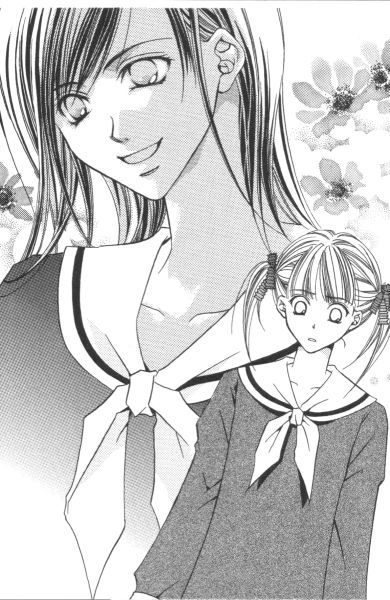
「私もそろそろ」
志摩子さんも腰を上げる。当然のように、白薔薇さまの姿は志摩子さんの側になかった。でも、彼女はいつもと変わらない。
（馬鹿だな）
他人と比べたって仕方がないのに。姉妹の関係はそれぞれだって、そんなこととうにわかっていたはずなのに。
部屋には紅薔薇ファミリーだけが残っていた。
何だかその場に居るのが辛くなって、祐巳もそっと席を立ち上がった。
ほんのちょっぴり、祥子さまが注目してくれるかもしれないって期待したけど無駄だった。会えなかった間の時間を埋めるように、積もり積もった話に盛り上がって、祐巳が部屋を出るのに気づきもしなかった。
（私は、まだまだ未熟者だ......）
スローテンポで階段を下りながら考える。
祥子さまのお役に立ちたい、なんて偉そうなことを言っていても、結局は自分が求めているのだ。祥子さまに必要とされているという、確固たる証を。それがないと、不安に押しつぶされてしまいそうになるから。
それじゃ、まるで子供だ。
本当に祥子さまのことを好きなら、代償なんかいらないはず。紅薔薇さまが側にいるだけで祥子さまが幸せそうに笑っていられるのなら、本当は妹として一緒に喜ぶべきなのだ。
でも。
それができるような人間なら、今頃こんなにも悩みはしない。
祐巳は、扉を開けて外に出た。
妹って、いったい何だろう。そんなことを考えたら、急に泣きたくなった。
外の空気を吸って吐いて。どれくらい頭を冷やしていたか、正確な時間はわからないけれど。
真冬の中庭は雪なんか降っていなくてもさすがに寒くて、手足が冷えてきたので仕方なく薔薇の館に戻ろうとすると、向こう側から扉が開いた。
「祐巳ちゃん？」
祐巳の目が少し赤くなっていたのを、紅薔薇さまは決して見逃してくれなかった。
「ちょっといらっしゃい」
紅薔薇さまは祐巳の肩を抱いて、二階ではなく、フロアを入って右手にある一階の部屋に入った。ここは窓が少なく日当たりもいまひとつなので、使用頻度が低い。自然、山百合会の荷物置き場と化している。
「何があったか、言ってごらんなさい」
祐巳の両肩に手を置いて、顔を覗き込む。紅薔薇さまはやっぱり、何もかもお見通しなんだ。
「私が来る前に、祥子に叱られた？」
いいえ、と祐巳は首を横に振る。
「じゃあ、誰かに何かを言われたの？」
「そうじゃないんです。......私が」
「祐巳ちゃんが？」
「祥子さまのために、何もできないから。妹なのに」
そう言うと、紅薔薇さまは少し首を傾げた。
「何も、って。何かしなきゃいけないの？」
「だって」
何も言えなくなった。だって紅薔薇さまは祐巳がしたくてもできなかったことを、易々とやってのけてしまったのだから。
「いいのよ、祐巳ちゃん」
紅薔薇さまはカラッと笑った。それはもう、晴れ上がった夏の青空のように。
「あのね、妹はそんな心配しなくていいの。だって妹なんだから」
「え？」
祐巳の「妹なのに」と紅薔薇さまの「妹なんだから」は、よく似ているけれど対極に位置しているようだった。
「もし、何か力になりたいのだったら普通にしていなさい。それで祥子が何かをして欲しいと言ってきた時だけ、それをしてあげたらいいの」
「......本当にそれでいいんですか」
「いいのよ」
揺るぎない自信をもって、紅薔薇さまは言い切った。
「お姉さま歴の長い私が言うのだから間違いないの。わかった？」
「......はい」
「それじゃ、私は先に行っているから。祐巳ちゃんは祥子についていてあげてね」
「紅薔薇さま？」
「大丈夫。会場で、ちゃんと見ているから」
花のようにほほえんで、先に部屋を出ていった。やっぱり「お祖母ちゃん」たる三年生には敵わない、と一年生の祐巳は思った。
よくはわからないけれど、少しだけ心が軽くなった。
ドアを開けてフロアに出ると、丁度祥子さまが階段を下りてきたところだった。
「お手洗いにしては遅いから少し心配したわ」
「すみません」
一度頭を下げて、祥子さまの後について歩き出そうとしたけど。このままじゃ根本的なモヤモヤを引きずるだけだって思って、祐巳は勇気を振り絞って祥子さまの背中に告げた。
「お姉さま、私──」
「何？」
ゆっくりと振り返る祥子さま。紅薔薇さまがいなくても、いつもの、やさしくて厳しいお姉さまの顔をしていた。
「私、何ができるでしょう。お姉さまのために、何かして差し上げたいのに。何も思いつかなくて、それが情けなくて、私」
祥子さまは驚いたように一瞬目を瞬かせて、それから嬉しいのかおかしいのかわからないけれど、とにかく笑った。
「あなたの顔が最近曇りがちだったの、そんなことを考えていたからなの？」
「え？」
関心ないのかと思っていたけど、そうじゃなかったらしい。いつも、とまではいかなくても祥子さまはちゃんと祐巳のこと見ていてくれたようだ。
「......いやだ」
まだ、くすくすと笑っている。笑いながら祥子さまは、館の扉にもたれて言った。
「姉妹で同じこと悩んでいたのね」
「同じ、って......。えっ？」
祐巳が聞き返すと、祥子さまは「実は」と白状した。
「私もね。お姉さまのことで悶々としていたのよ」
紅薔薇さまのために何かできないか、って。でも祥子さまの場合、お姉さまの戦っている相手は大学入試という第三者には手も足も出せないものだったからさあ大変。
励ましの手紙や電話はプレッシャーになるだろうか、とか。
試験日に早起きしてお弁当を作ってみようか、とか。
受験生に人気がある神社のお守りなんてリリアンの生徒が持ってたら陳腐だし、とか。
いろいろ考えているうちに、結局自分は何もできないということを改めて思い知って落ち込んでいたという。そんな時紅薔薇さまが久しぶりに薔薇の館に来て、いつもと変わらない様子を見せてくれたから祥子さまはいっぺんに幸せになってしまったんだ、きっと。
「紅薔薇さまは私に言ったわ。『あなたの顔を見に来たのよ』って。それで私、すっかり気持ちが晴れたの。なぜって、私は妹としての祐巳に何を求めているか、って考えてみたから」
「私に......？」
「あなたは、ただ側にいてくれればいいの。私には、側で私を見ていてくれる妹が必要なの。あなたは側にいて、私がたまに心細くなった時に私の手を握って頂戴」
そう言いながら、祥子さまこそが祐巳の手を両手でしっかりと握ってくれた。
温かかった。でも、祐巳はもうお姉さまのぬくもりを寂しいなんて感じなかった。ぬくもりが、不安や焦りや自己嫌悪をゆっくりと溶かしていく。
「紅薔薇さまが言っていたわ。包み込んで守るのが姉。妹は支え、なんですって。......私もそう思う」
「妹は支え？」
何て勇気が出る言葉なんだろう。妹は支え。その言葉を胸に、地の果てにだってついて行ける。だったら、そこにいるだけでお姉さまが安心できる、そんな妹になれたらいいと思う。それが、祐巳にとっての目標になった。
「でも、やっぱりお姉さまってすごい」
吉備団子を得て上機嫌の犬は、はしゃぎながら桃太郎のお供をする。手始めは、鬼ヶ島ならぬ講堂へ。
「どうして？」
「選挙のことで悩んでいらしたんじゃないんですね」
「選挙？」
歩きながら、祥子さまは自信に満ちあふれた顔で笑った。
「大丈夫よ。私は絶対に負けないから」
そのためには、まず目先の立ち会い演説会をやっつけないと。三日後は、いよいよ天下分け目の大決戦なんだから。
２
ところで、その頃。
祐巳たちが思いも寄らない場所で、すれ違う二つの影があった。
「ロサ・カニーナ、だっけ？」
銀杏並木の分かれ道にあるマリア像の前で、伸びた段カットを無造作になびかせた少女が足を止めて、今すれ違った少女を振り返った。
「あなたも、遅刻？ それとも、誰かと待ち合わせかしら？」
「あなたをお待ちしていたんです、白薔薇さま。今日は何があっても、絶対にいらっしゃると思っていましたから」
潔く髪を切りそろえた少女がつぶやく。見れば足もとは上履きのまま。昼休みに三年藤組の教室を訪ねて出席していないことを知り、その足でここまで来てしまったといったところだろうか。
「......待ち伏せか。だったら、教室の前か昇降口で待っていればよかったんじゃないの？」
昼過ぎとはいえ、コートも着ないで長時間待てる気温ではない。風も、少し吹いていた。
「真っ直ぐ校舎に入られるかどうか、わかりませんでしたから」
「よくわかっているじゃない」
彼女は、立ち会い演説会のためだけに来たのだ。薔薇の館か、もしくは会場となる講堂に直行する可能性が大だった。
「断っておくけど、山百合会の選挙のことなら私に言っても無駄だから」
「そんなことを頼む気はありません」
「じゃ、何？」
スクールコートに両手を突っ込んだまま、かったるそうに白薔薇さまは聞く。それに対して、ロサ・カニーナは意を決したように言った。
「選挙の当日──。土曜日の放課後、選挙の結果が出た後、ここで会っていただけませんか」
「結果が出たら？ 当選したら、の間違いじゃないの？」
「当落に関係なく。お願いできませんか」
「ふーん」
つぶやいてから「ＯＫ」と答えて歩き出す。
数歩進んでから振り返り「そろそろあなたも行った方がいいんじゃないの」と講堂を指さしたが、ロサ・カニーナは「ええ」とうなずいただけで、一緒に歩き出しはしなかった。
しばらくの間、白薔薇さまの後ろ姿を眺めているようにさえ見えた。
３
祐巳と祥子さまが講堂に着いた頃には、講堂の席は聴衆である生徒たちでかなり埋まっていた。
選挙管理委員長の話によると、自由席であることも関係してか、四時間目が終わった直後からお昼ご飯も食べないで席取りのために講堂前に並んだ生徒まで出たというから、選挙民たる一年生二年生の生徒たちの関心もかなり高いらしい。
やはり定員三名のところに立候補者四名という状況が、例年以上に選挙を盛り上げているのだろう。つぼみが三人並んで、次の生徒会長として認めるかどうかを問う選挙に比べて注目されるのは当然のことだった。
講堂の舞台袖にはすでに令さまが到着していて、由乃さんと黄薔薇さまに挟まれて談笑していた。三年生は参加義務がないので午後は帰っていいことになっていたけれど、やっぱり黄薔薇さまも来たのだ。考えてみれば、おもしろいこと好きの黄薔薇さまがこんな絶好の機会を見逃すはずはない。
紅薔薇さまは、客席のずーっと後ろの端に座っていた。復活した今の祥子さまには、守ってくれるお姉さまのぬくもりなんて必要なかった。
（白薔薇さまは──）
そういえば今日はまだ見ていないな、と思って祐巳がキョロキョロすると、丁度白薔薇さまが舞台袖に入ってきてよそ見もせずに志摩子さんのもとに歩み出た。
「お姉さま......」
志摩子さんは立候補者のために用意された椅子から立ち上がり、小さくつぶやいた。もしかしたら、来てくれないと思っていたのかもしれない。
「志摩子」
白薔薇さまはもう一歩近づいて志摩子さんの頬にそっと触れた。何か元気のでるような言葉か、労りの言葉をかけるものと誰もが思っていた。しかしそこは白薔薇さま、周囲の期待をしっかり裏切ってくれた。
「私は強要しなかったわよ。これはあくまであなたが決めたこと。だから、当選したら最後まで責任もちなさいね」
聞き耳をたてていた人間、全員がぶっ飛びそうになったと思う。
「それ、言葉間違えてませんか。白薔薇さま」
思わず、祐巳なんか口を挟んでしまった。盗み聞きしていたの、バレバレになっちゃうけど。
「あらら、祐巳ちゃん元気復活だね。何、私の言葉が間違ってる？どこが？」
「あの、普通は『がんばってね』とか『応援しているわ』とか」
「でも、心にもないこと言えないでしょ」
「心にも、って──」
まるで当選したらいけないみたいな言い方して。抗議しようとしたら、後ろからそっと肩に手を掛けられた。
「いいのよ、祐巳さん」
志摩子さんはニッコリ笑っていた。
「あのね。今のお姉さまの言葉ね、私には最大級の励ましの言葉なの」
「えっ」
あわてて白薔薇さまを見ると、明後日の方向見て「さあどうでしょう」と言った。やっぱりここの姉妹はわからない。
十組いれば十通り、百組いれば百通り。姉妹の関係はあるとは思うけれど、白薔薇さまと志摩子さんは間違いなく特殊な例に入る。祐巳はそう断言できた。
＊ ＊ ＊
立ち会い演説会は、選挙管理委員会の司会進行で午後一時から開催された。
まずは委員長の挨拶、そして候補者が全員壇上に登場し、立候補受付順に選挙演説をすることになっていた。推薦者による応援演説は、候補者全員がそれを辞退したために行われなかった。全員自分の生の声のみで、客席に訴えることを望んだのだ。
祥子さまの演説を舞台袖で聞きながら、祐巳は心の中で「がんばれ」「がんばれ」と応援した。演説の一言一句聞き漏らすまいと思っていても、興奮してなかなか耳には入ってこなかった。
また泣きたくなったけど、自分で自分の手をギュッと握ってがんばった。涙なんか流したら、祥子さまの姿が霞んで見えなくなる。
（がんばれ......！）
壇上に向かう直前、祥子さまは祐巳の手を握って言ったのだ。
『そこで、見ていて』
だから、ちゃんと見ていなくてはいけないのだ。祥子さまの手は、握りかえした祐巳の手の中でほんの少しだけ震えていたから。ここで一緒に戦うことが、妹として唯一できることだった。祐巳は祥子さまの支えなんだから。
正面一列目には、ロサ・カニーナのクラスメイトたちがヤジこそ飛ばさないけれど「ロサ・カニーナ」と書いた画用紙を持ち鉢巻きを締めて陣取っている。つぼみたちに比べれば知名度が低いから、多少のアピールは仕方ないにしても、真正面にライバルの応援団がいては嫌でも目に入るし、かなりのプレッシャーになると思う。
それなのに持って出た演説原稿に一度も視線を落とさず、会場に広く視線を向けてよく響く声で聴衆を引きつけた。普段の祥子さまも素敵だけど、観衆の前に立つ祥子さまは輝いている。手の震えなんて嘘だったみたいに、自信に満ちあふれ堂々としていた。
やっぱり、お姉さまはすばらしい。
たとえ、選挙の結果がどのようになろうとも、祐巳にとってすでに祥子さまは紅薔薇さまだった。真紅の花びらは開きはじめている、そんな気がした。
ささやかな秘密
１
土曜日。
四時間目が終わった後のホームルームの時間を使って、一、二年の各教室では生徒会役員選挙の投票が行われた。
選挙管理委員は各クラスに二名ずついる。回収した投票用紙と欠席などで使われなかった用紙の枚数をそれぞれ確認し、出席簿から出欠の人数を転記したそれぞれの専用封筒に入れ、封をして開票ルームに持ち寄るのだ。
開票ルームは、年明けから選挙管理委員会が使用している教室の半分ほどの広さをもつ部屋である。ここは、その時々により学園祭実行委員会室になったり体育祭実行委員会室になったり、文化部の展示会に使われたりする便利な部屋だった。ちなみに講師室の隣にある。
先生立ち会いのもと即日開票。
読み上げて正の字を書いていくという原始的な方法だが、人手はあるから、確認作業しながらでも時間はそんなにかからない。一般生徒が掃除をして、お昼ご飯を食べたりしているうちに集計が済んで発表というはこびになる。
選挙管理委員会は結果発表のおおよその目安として、午後二時という時間を挙げていた。だから発表までの間、お昼ご飯でも食べながら薔薇の館で待機しましょう、ということになっていたけど、祐巳なんかドキドキしてせっかくお母さんに作ってもらったお弁当を半分くらいしか食べられなかった。
由乃さんや令さまもやっぱり緊張するようで、時折ため息つきながら、時間をかけてゆっくりとお昼ご飯を食べていた。
そこへいくと、祥子さまなんかは全然落ち着いていて、祐巳が掃除当番を終えて薔薇の館に着いた時にはすでにお弁当箱片づけていて、「お先に」なんて食後のお茶なんかすすっていたし。やっぱり大物は違うなぁ、なんて感心しているうちに一時四十分になって、「そろそろ」って誰が言うでもなくテーブルを立ち上がった。
こんな時なのに、志摩子さんは環境整備委員会の定例会議があるとかで薔薇の館には来なかった。二時までには終わるという話だったから、その足で直接発表を見にいくものと思われる。
薔薇さまたちの姿も見えない。由乃さんの話では、祐巳が来る前に紅薔薇さまと黄薔薇さまが薔薇の館に現れたけど、「だいたい結果はわかるから」って言い残して帰ってしまったらしい。
しかし、たとえ予想がついていたとしても、本当にそうかどうか確認していくものじゃないか、普通。──って、薔薇さま相手に「普通」を振りかざしてもどうなるものでもない。
例によって白薔薇さまは、どこにいるのかわからないし。立ち会い演説会の時だって午前中サボっていたんだから、果たして今日学校に来ているかどうかわかったものではない。だいたい選挙の行方に興味がないようだから、あの人は。
講堂前の掲示板の周囲には、すでにたくさんの生徒が集まっていた。結果は開票ルームの前にでも張り出されるものと祐巳は思っていたのだが、ここに到着してみて納得した。そう広くもない校舎の廊下に、これだけの生徒がいっぺんに押し寄せたら、押すな押すなで大パニックになってしまっただろう。それくらい、ここには人があふれている。中等部や高等部の合格発表の時もこの場所を使うけど、その比じゃないって感じがした。
とにかくみんな、ただひたすら選挙管理委員会の到着を待ちかねている。もちろん、発表を見るのは義務ではない。帰っていいのに、ここにいる生徒たちはみんな自らの意志で残っているのだ。
「祥子さま、令さま、こちらにどうぞ」
候補者二人の姿を見つけると、生徒たちは十戒で海が割れるみたいに左右に分かれて主役を掲示板の前に招いた。
「さ、妹のお二人も」
「あっ」
祐巳や由乃さんもついでとばかり、一緒に前方に押し出されてしまった。
その場所にはすでに志摩子さんがいて、苦笑していた。お気の毒に。志摩子さんにしては、もっとひっそりと結果を見たかったに違いない。けど、好意でよく見える場所を提供してくれているわけだから、むげに断ることもできないし。結局、候補者よりも周りの人間の方がより盛り上がっている。それはどこも変わらないような気がした。
周りが盛り上がっているといえば──。
「ロサ・カニーナは」
よく見かける彼女の取り巻きたちはすでに揃っているのに、肝心の静さまの姿がない。
「どこに行っちゃったのかしら。もうすぐ発表だっていうのに」
図書委員の彼女が「時々、一人でどこかへ行ってしまうのよね」とため息をついた時。選挙管理委員長と副委員長が丸めた模造紙を持参して現れた。
いよいよ、開票結果の発表である。
２
生徒たちのざわめきが、とても遠くに聞こえる。
小さな森のような庭に立つマリア様にも、その声は聞こえているだろうか。緑の中で、静かに両の手を合わせていた。
「お待たせ」
白薔薇さまがマリア像の前にいた人物に声をかけた。
「いえ」
そんなに待っていませんから、とその人は答える。だが、実際にどれだけ待っていたかわからない。
「私の方が絶対先に着くと思っていたわ。......だから、少なからず驚いているんだけど？」
「私からお願いしたんですもの」
ロサ・カニーナは微笑した。
「選挙の当落に関係なく──。水曜日に、確かあなたはそう言っていたけど。それは本当に言葉通りだったのね」
白薔薇さまは選挙管理委員会の発表を見てすぐ、ここにやってきた。それより先に来ていたロサ・カニーナが、開票結果を見てこられるわけがなかった。
「結果は白薔薇さまから伺えばいいことですもの」
「聞きたい？」
いいえ、とロサ・カニーナは小さく首を横に振った。
「それより大切なことなんだ？ 私をここに呼び出すことが」
「ええ。私にとっては、何をおいても」
真剣な眼差しで見つめられ、白薔薇さまの唇から一瞬だけ笑みが消えた。
しばし沈黙。
白薔薇さまは髪の毛をかき上げて息を吐き、それから再び言葉を紡ぎだした。
「一つ聞いていい？ 選挙は単なる前振りだったわけ？」
「最初は。でも、そのうち本当に山百合会の仕事をするのもいいかもしれない、って思うようになりました」
「どうして」
「さあ......。祐巳さんと少しだけお近づきになって、不思議と楽しかったからかしら。それと、クラスメイトたちとも一つのことに夢中になれたし。私、お祭り騒ぎみたいなこと、あまりしたことがないんです。生活は歌うことが中心で、学園祭でも部活動の方に力を入れていましたから。だから歌とは関係ない、普通の学生生活ができて嬉しかったというか」
「生徒会役員選挙は『普通の学生生活』じゃないでしょ」
「あ、そうですね」
「でしょう？」
白薔薇さまの指摘にロサ・カニーナは小さく笑い、白薔薇さまもつられて笑った。
「......未来に行くための道は、幾通りもあると思うんです。だから、もしかしたら一つ曲がる角が違っただけでまったく別の人生になるかもしれないって。それもいいな、なんてふと考えたりして」
「何通りあっても、結局一通りしか歩めないよ」
白薔薇さまがつぶやいた。ロサ・カニーナはすべて悟っているかのように、微笑して「ええ」とうなずく。
「運試し、ですか。学園祭で祥子さんが賭けをしたでしょう？それの真似事をしただけなんです。何も行動を起こさないまま、いなくなりたくなかったから」
一息にしゃべった後、ロサ・カニーナは一度息を整えてからつぶやいた。
「私、イタリアに行くんです」
「イタリア？」
突然、話が海外に飛んだから。さすがの白薔薇さまも、ついていくのに大変だったようだ。しかも先の口調は、「ちょっと海外旅行に」というような軽いノリではなかった。
「音楽の勉強をするために。本当は中学を卒業した時点で、あちらに渡るという話もあったんですけど。......二年も延ばしてしまいました」
「どうして」
「あなたがいたから」
ロサ・カニーナの即答に、白薔薇さまは目を見開いた。
二人は対照的な表情で、向かい合うただ一人の相手を見つめていた。
「嬉しい......。白薔薇さま、私は一瞬でもいいから、あなたの瞳にこうして私の姿を映したかったんですから」
「え......」
「だって、あなたは私の存在を全然認識していなかったんですもの。髪の毛だって、あなたがずっと長くしていらしたから真似して伸ばしていたのに」
肩あたりにやった手が、もう存在しない髪の毛を懐かしんでいる。一年前、白薔薇さまと一緒に切らなかったのはたぶん意地だ。その髪は、栞さんとは無関係だったから。
「ごめん、気がつかなかった。髪が長かったの？」
身も蓋もない白薔薇さまの言葉に、ロサ・カニーナは顔をくしゃくしゃに歪めて笑った。
「そういうところも含めて、好きでした」
銀杏並木の上にある、白い空を見上げる。
よく目を凝らしてみれば、重く厚ぼったい雲がゆっくりではあるが確実に動いている。
「もし当選していたら、あなたはどうするつもりだったの」
白薔薇さまが尋ねる。
「もちろん、学校に残るつもりでしたわ。あと一年、出発を延ばすだけのことです。......でも『もし』の話はやめません？藤堂志摩子さんは、きっと立派な白薔薇さまになるでしょうから」
一歩。
白薔薇さまは、二人の間の距離を縮めた。
「あなたは魅力的だ、ロサ・カニーナ。もう少し早く知り合えたら、友達になれたかもしれない」
「妹にはしてくださいませんの？」
「なりたかった？」
でも、ロサ・カニーナはっきりと首を横に振る。
「私は志摩子さんではありませんから」
「......ロサ・カニーナ」
もう一歩。
すでに息がかかるほどに近い。
「静、と呼んでくださいませんか」
「静」
白薔薇さまは、静さまの顎に手を添えて頬にキスをした。限りなく、唇に近い位置に。マリア様の見ている前で。
「餞別」
そう言い残して、白薔薇さまはその場をそっと離れた。一人残された静さまは、後ろを向いていたのでどんな表情をしていたかわからなかったけれど、小さく「ありがとう」と言ったのが祐巳の耳にもはっきり聞こえた。
３
白薔薇さまは数歩あるいて銀杏並木の側にある茂みに手を突っ込んで、制服のカラーを掴むと覗き見現行犯を引きずり出した。
「こら。盗み見、駄目でしょ」
「ごめんなさいっ。でも成り行きで──」
逮捕された祐巳は、必死で弁解した。
選挙結果が張り出された直後、生徒たちの群の片隅に白薔薇さまの姿を見つけたのだ。でも白薔薇さまったら模造紙に書かれた当選者の名前と投票総数を確認するなりすぐに立ち去るものだから、祐巳は祥子さまたちに断ってから二重三重に取り囲まれた人垣を抜け出し、すぐに後を追った。無事当選を果たしたつぼみの三人はみんなからの祝福の嵐で、とてもじゃないけどその場を離れられそうもなかった。
で、白薔薇さまを追いかけてきたら、そこには何と思いも寄らない先客がいたものだからビックリ仰天。あわてて生け垣の陰に身を隠してしまったというわけだった。だって、ただならぬ雰囲気だったから。白薔薇さまと静さま。
「ま、別に見られてまずいこともないけど」
並んで講堂の方に歩きながら、白薔薇さまは祐巳の頭を小突いて笑った。
「私、志摩子さんには言いませんから」
「別に言ったっていいよ」
「言いませんってば」
「いやにこだわるね」
「当たり前です」
祥子さまが誰かにキスなんかしようものなら、頬っぺただろうとおでこだろうと自分は絶対に嫌に決まっている。──祐巳はそう思った。だから志摩子さんには、知らせちゃいけない。何が何でも、もう絶対に。
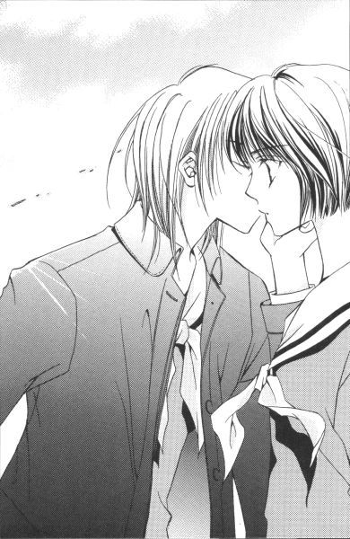
祐巳は志摩子さんの代わりに、つねり上げるようにして白薔薇さまの手を引っ張っていった。ちょっとくらい痛い思いしたらいいんだ、って。
講堂の前は、随分と人が少なくなっていた。ひとしきり盛り上がって、沈静化したって感じだろうか。皆、三々五々に散らばっていくところである。土曜日の午後だ。メインイベントは終わったものの、その後でそれぞれに予定が入っているものだから。
まだ何となくだけど人が固まっている中心に、祥子さまと令さまと志摩子さんがいた。
「取りあえず、三人ともおめでとう」
近づきながら、白薔薇さまがカラリと言った。取りあえず、だけ余計だ。
「ありがとうございます」
三人同時に頭を下げた。
「楽勝だったじゃん」
「そうでもないです」
志摩子さんが首を振って微笑した。
知名度がない割に、ロサ・カニーナは健闘したから。もちろん接戦なんて表現には及ばないけれど、つぼみ相手に恥ずかしくない戦いをした。そう言っていいと思う。
もし、リリアンに姉妹という制度やつぼみなんていう立場が存在していなくて、候補者四人が横一線に「よーいどん」でスタートを切っていたら。静さまは志摩子さんを押さえて薔薇さまの一人になっていたかもしれない。もちろん、それは「もし」の話で。志摩子さんが当選したことに対して誰も異を唱えることはできないし、二年生で薔薇さまとなるということは間違いなく快挙だった。
「お待たせしました」
いつの間に往復したのか、校舎の方から由乃さんが二人分の鞄とコートを抱えて戻ってきた。その姿を見つけた令さまが、磁石で吸いつけられるように駆け寄って自分の分を受け取った。
「それじゃ、申し訳ありませんが私たちはこれで」
令さまと由乃さんは、お雛様みたいに並んで挨拶した。
「いいわね。これから、支倉・島津ご両家でお祝いですって？」
祥子さまが言った。
「ええ」
由乃さん、嬉しそうだ。自分が当選したみたいに頬っぺた、上がりっぱなし。
「じゃ、お先に」
「ごきげんよう」
手をつないで並木道を歩いていく二人を見送りながら、祥子さまが「ちょっと」と祐巳の手を引いた。
「お姉さま？」
「たまには白薔薇さまにもお姉さまらしいことしていただきましょう」
囁いて、そっとその場を離れる。校舎に戻る生徒たちの中に身を紛れさせて振り返ると、珍しく志摩子さんが泣いていて、これまた珍しく白薔薇さまがやさしく抱き寄せていた。
「お節介してみたくなったのよ。強く見えるけれど、志摩子だって祐巳と同じ一年生なんだから」
ずっと張りつめていた気は緩めてあげないと、と祥子さまは言った。
「お姉さまは」
祐巳は尋ねた。志摩子さんが一年生なら、祥子さまはそれより一つ多いだけだから。
「私？」
少し考えるように、祥子さまは首を小さく傾ける。
「そうね。私も気を張っていたかもしれないわ。じゃあ、私は祐巳にリラックスさせてもらおうかしら」
「はいっ」
祐巳は、子犬みたいにはしゃいで答えた。
「私、何でもします。何でもおっしゃってください」
嘘でも大げさでもなく、今の自分は何でもできる気がした。もしお姉さまが望むなら、バンジージャンプでも立ち乗りコースターでもやってみせましょう、って興奮していた。
なのに祥子さまは現実的で、至って簡単なお願いをする。
「手始めに、薔薇の館で熱いお茶を入れてちょうだい。それから二人でお弁当の残りを食べましょう」
「は......？ お弁当の、残りって」
「白状すると、実は私も半分しか食べられなかったの。あなたの前で強がって見せていたのよ」
首をすくめてから、祥子さまは「だから一緒に食べましょう」と言った。
「あなたの顔見ていたら急に食欲わいてきたのよ、私」
長き夜の
一月一日
１
「山梨、行こうと思うんだけど」
事の始まりは、両親のその一言だった。
「やまなし？」
私と弟の祐麒は、彼らの子供として当然聞き返す。「いつ？」「何で？」──って。ちょっとした驚きの感情を込めて。
だって、初っぱなの「山梨行こうと思う」発言は、テレビの年またぎ番組でカウントダウンがやっと終わって、元旦の零時ジャストに貼らなくちゃいけないっていう決まりの、どこかの神社からもらってきたお札をお父さんが踏み台使って居間の壁にくっつけ終わって、家族みんなが「あけましておめでとう」を無事言い合った後すぐに出た言葉だったのだ。
そりゃ、何の脈絡もないからクエスチョンマークが飛んで当たり前だと思う。まだお年玉ももらっていない、っていうのに。
「お祖母ちゃん、一人らしいのよ。今年の正月」
お母さんが、ちょっとため息に似た深呼吸をしてそう言った。──まあ、山梨っていうからにはお祖母ちゃんがらみの話だって察しはついていたけど。
「だって、妙子叔母ちゃんは？」
山梨のお祖母ちゃんは、お母さんのお母さんで、お祖父ちゃんが死んでからは子供たちの同居しようという誘いを断って頑に一人暮らししている気丈な人だ。幸い、お母さんの妹の妙子叔母ちゃんがお祖母ちゃんの家から五百メートル先に住んでいるから、しょっちゅう様子を見にいったり、クリスマスやお正月なんかは一緒に過ごしたりしてくれているから安心なんだ。
「年末の福引きで、ハワイ旅行が当たったんだって」
「ハワイ旅行？」
子供たち二人はソファーの上で身を乗り出す。何だ、何だ。そんな話、初耳だぞ。
「そう。家族四人ご招待、ってやつ。で、妙子叔母ちゃんのところは、三人家族じゃない？当然お祖母ちゃんを連れていこうって話になったんだけど、お祖母ちゃんが突然行きたくないって一人で帰っちゃったんだって」
「帰った、って？ どこから？」
「成田」
「......もったいない」
私はつぶやいた。生まれてこの方、海外なんて行ったことがない身である。しかし、真横の祐麒はそんな姉の頭を小突く。
「馬鹿。そーゆー時は、まず祖母ちゃんの安否を気遣えよ」
「痛いなぁ。無事山梨に戻っているから、お母さんとお父さんが行くんでしょ？」
「そうかもしれないけど」
祐麒はぶつぶつとつぶやく。相変わらず、やさしい子だ。
私がお母さんのお腹に忘れてきた気配りみたいなものを、弟はしっかり握りしめて生まれてきたんだと思う。自分の分だけでなく、私の分まで。だから、時々鬱陶しいくらいフォローしてくれる。十五年も経った拾得物を、未だに届けようとしているかのように。未熟児で生まれたっていうのに、身長も精神年齢も私より若干高いというのを認めなくちゃいけないのはちょっと悔しい。
でも、祐麒が男でよかった。お互い女子校男子校に進んだから、学校の中で比べられようがない。ただでさえ年子で同学年なんて、大変なんだから。
「でね、妙子叔母ちゃんに空港から電話でお祖母ちゃんのこと頼まれちゃったのよ。三が日じゃなくていいから一度様子を見にいってくれないか、ってね。けど、お父さんが早い方がいい、って」
この場合の「お父さん」は、もちろん死んだお祖父ちゃんのことじゃなくて、年が明けて初ビール飲んでいる私のお父さんのことだ。
「やっぱり、年寄りは心配だからな」
紙皿に盛られた柿ピーの、ピーナッツだけ上手に選り分けて口に放り込む。お父さんはお母さんのお母さんのことが好きなんだ。なぜって、お父さんの両親は早くに死んじゃったから。
孝行したいときに親はなし。
墓に布団は着せられぬ。
それがお父さんの口癖。理屈ではわかるけど、こうしてピンピンしている親にそれを言われても、実感がわかない。
「行けばいいじゃん」
祐麒が、お父さんの残した柿の種を自分の手の平にのせて口に放った。嗜好は別でも、仕草は同じ。福沢家では、こうして柿ピーは余ることなく消費されていく。
「で、いつ行くの？」
「今日......、元旦はいろいろあるから二日の朝だな。Ｕターンラッシュにぶつかると大変だし、一泊して三日に帰ってくる」
「あなたたち、どうする」
「あ、俺パス。二日は、友達のとこ泊まりにいくことになってるから」
祐麒が間髪入れずに答えた。
「えー!?」
「えー、って。何だよ、祐巳に文句言われる筋合いはないよ。もうずっと前から、お父さんやお母さんには許可もらっていたんだから」
「そんな」
「姉ちゃん、俺に構わず行ってくれば？」
「......うん」
そうは言ったものの、山梨なんていう中途半端な距離に一泊して帰るなんて疲れにいくようなもので。できれば子供二人でお留守番がよかったんだけど。祐麒がいないなら話は別。この、だだっ広くはないけど三階建ての一軒家に一人で残されるのは、どう考えても心細すぎる。
「祐巳ちゃん、どうする？」
「うー」
きっと車で行くだろうから、一人増えても両親の負担は変わらないだろうし。ここは、連れていってもらうのが賢明な選択かもしれない。ついでといっては何だけど、お祖母ちゃんのご機嫌伺いもできるし。
（でもなぁ......）
もしも、留守の間に薔薇さまたちから何かのお誘いがあったとしたら、なーんて考えるとすごく迷う。お誘いがあるかもしれないのか、って？もちろん、ただの個人的希望でしかないけれど。もし、「もしも」が現実のものとなったら、悔しい思いをするに決まっている。
「保留にしてもらえない、かな」
私はお母さんに両手を合わせた。
「いいけど？ 返事は今日の夕方までにお願いよ。心づもりがあるんだから」
「はーい」
「何だ、祐巳ちゃんも予定あるのか」
高校生にもなると何かとつき合いがあるんだなぁ、なんてお父さんしみじみしちゃって。せっかく浸っているようだから、「わかんない」って答える代わりに「えへへ」と笑ってビールをお酌した。
お父さんは娘の注いでくれたビールを嬉しそうに一気に飲み干すと、カーディガンのポケットに入れておいたポチ袋を取り出して私と祐麒に差し出した。
「また今年一年、がんばれよ」
私たちは「はい」と一年で一番元気な声で返事をして、それを受け取る。
お母さんのお手伝いをする振りをしてキッチンに走って中身を確認すると、お年玉の額は去年よりちょっぴりアップしていた。
２
元日の午前一時過ぎまで起きていたっていうのに、翌朝、っていうか数時間後の七時にはお母さんからたたき起こされてしまった。
これは福沢家恒例の元旦の決まり事であるから、眠い目を擦りながらでも従うしかないのだ。
いや、眠い目を擦りながらは許されない。ちゃんと歯を磨き顔を洗って、もちろんパジャマ姿なんて言語道断。身支度一切整えたら、家にある唯一の和室に集合。
一年の計は元旦にあり。
中学に入ったと同時に紅白歌合戦を最後まで観ることが解禁になって以来、深夜の「あけましておめでとう」が恒例になってはいるが、それでもお重を囲んでもう一度新年のご挨拶をする習慣だけは残っている。そしてお屠蘇を一口ずついただいて、お重の蓋を開けるのだ。
「それじゃ、お餅のオーダー承ります」
お重の中の料理に皆が箸をつけると、祐麒が立ち上がり家族が食べる餅の数をメモしはじめた。それと同時に、お父さんも立ち上がってキッチンに向かう。我が家では餅を焼くのと蕎麦を茹でるのは男の領域と決まっているので、お母さんと私は手を出さない。でも、だからといってのんびりとおせちを食べていていいかというとそうではなくて、お餅が入る前のお雑煮を用意したり、お醤油と海苔をセッティングしたりはしなくちゃいけない。
「変なこだわりがあるのも迷惑なんだけどね」
お母さんが小声で言う。本当は電子レンジでチンすれば簡単なのに、餅網で焼いた方がおいしいんだってお父さんが聞かないんだ。そのお陰で、炭化したお餅がこびりついた網を洗うのはアシスタント。かわいそうな祐麒は、大晦日と正月は父親のこだわりの犠牲者となる宿命だった。
時計代わりのようについているリビングのテレビには、初日の出とか松竹梅とか着物姿のアナウンサーとかが映し出されている。お父さんが読み終わって無造作にサイドボードに置かれていた朝刊は、正月版ということでいつもの倍くらいの量があった。そんな、日常からほんの少しだけ違う光景から、新年を実感したりするのも正月らしくていいと思う。
掘り炬燵の中に下半身潜り込ませながらお餅やおせちをだらだら食べて、お茶なんかすすっている間に年賀状が配達される。いつもは郵便屋さんがバイクで回っているこの辺りも、お正月だけは学生アルバイトが自転車をキコキコこいで来る。だから、ポストの中に葉書の束が落ちてもなかなか気づかないものだった。
年賀状を取りに行くのは、子供たちの仕事だ。──と、いうより、ほとんど趣味。待ちかねていた雑誌の発売日に一秒でも早く本屋に走るのと一緒。年賀状を書くのは面倒くさいけど、もらうのはうれしいから。誰からどんな葉書が届いたか、早く見たいって、祐麒と私は十分ごとに玄関から顔を出してポストの内蓋を観察した。
何回かの空振りの後、ちょうど我が家のポストに葉書の束を入れようとしているお兄さんと目があった。お兄さん、といっても、私たちとそう年齢は変わらないくらいに見えた。
「ご苦労さまです」
私たちは、挨拶をして直接葉書を受け取った。束は、二つあった。アルバイトのお兄さんは、隣の家に移動する前に、公道から石段を少し下がった所にあるお父さんの事務所のポストにも一束入れていった。午前十時四十分だった。
我先にと、もつれるように家の中に入ると、私と祐麒はリビングで仕分けを始めた。
お父さん宛て、お母さん宛て、私宛て、祐麒宛て、それからお父さんの事務所宛てなのに紛れて入っていた分。番外編として、間違って配達された余所のお宅宛てのもの。都合、葉書の山は六つ作られて、所定の位置に積み上げられていく。
「祐巳。自分宛ての読むのは後にして」
仕分けの手を休めずに、祐麒が注意してきた。そんなこと言ったって、差出人の名前見ちゃうとやっぱり裏返してみたくなるのが人情だろう。
「お父さん、お父さん、祐麒、私、お父さん、お母さん、お父さん、お父さん」
遅れた分を取り戻すべく集中して仕分けすると、今度は「うるさい」と警告する。
「心の中で声出せよ。こっちがつられるだろう」
「祐麒ってば、お姑さんみたい」
「祐巳みたいな嫁じゃ、どんなお姑でも小言の一つも言いたくなるよ」
仕方なく、心の中で「お父さん、お父さん、お母さん、祐麒」なんてつぶやきながら仕分けを続ける。
（あれ......？）
仕分け済みの葉書の何とはなしに見た差出人欄に、知っている名前があったような気がした。引っかかったのは、それが祐麒に来た年賀状だったからだ。高校生がもらう年賀状の大半は、クラスメイトとか部活の友達とかそういうもんだと思うんだけど。でも、祐麒の口から聞いて知った名前ではないような──。
（誰だっけ）
考えている間に、祐麒が上から葉書をのせていくから、その名前はすぐに見えなくなってしまった。
誰、って、葉書の山から抜き取って祐麒に聞いてもよかったんだけど。ただの勘違いだったら面倒くさいので、やめた。似たような名前って、結構あるものだろうし。逆に自分に来た年賀状について祐麒にとやかく言われたら、やっぱり不愉快だろうから。一応、プライバシーは尊重しなくちゃ。
我が家では、もちろんお父さん宛てが一番で全体の約半分。事務所に来ている分を入れたら、いったいどれくらいもらっているんだろう、って気が遠くなる。だって。もらっているっていうことは、こちらからも出しているということでしょう？大人って、大変だ。主婦やってるお母さんだって、私たちの倍くらいはありそうだ。
仕分けが済んだ年賀状を持って、私と祐麒は少し離れてソファーに座る。別に年賀状の数がストレートにその人の人気、ってわけはないけど、相手の量は気になるところ。幸い、厚みからすると、ほぼ同じくらいかな。高校生になったら、お年玉と同じく年賀状の量もほんの少し増えたのはうれしい。部活動はしていないけど、山百合会のお手伝いとかしていて、クラス以外にも知り合いができたからかもしれない。
私は順番に読むことはせず、ただ一人の差出人の名前を探した。
オガサワラ・サチコ
学園の中で、一番好きな名前。
由乃さんや蔦子さんの名前を、心の中で謝りながら素通りして、「もしかしたら来ていない？」なんて不安になった頃、その葉書は現れた。
「も、......毛筆だぁ」
水墨画っていうんだろうか、淡い色彩で梅の花が描かれてあるその上に、黒々とした墨で「あけましておめでとう」と「今年もよろしく」と、あと年号と「元旦」という、シンプルな年賀状。隅に押された小さな印は祥子さまの「祥」の字で、鮮やかな朱色がアクセントになっている。
「何てお上品な......」
自分が出した年賀状を思い出して、顔から火がでる思いがした。二学期の終業式まで年賀状の存在を忘れていたという、そのせっぱ詰まった精神状態で書いたのがそもそもの間違いなんだけど。お父さんに泣き入れて、事務所のパソコン使わせてもらって作った年賀状は、今思えばごちゃごちゃして落ち着きのない出来上がりだったような気がする。ワープロソフトの中に入っていたイラストを使用できるのをいいことに、これでもかって多用したのが悪かったのかな。文字もずいぶん飾ったし、色もいろんな色を使ってしまったし。
年賀状には、人格が出る。私は、肝に銘じることにした。
新年第一発目の電話が来たのは、私がお母さんに山梨行きの返事を急かされている最中のことだった。
「お祖母ちゃんかしら」
そこに待っていなさいよ、と念を押してお母さんは電話の親機に走る。
「あけましておめでとうございます。福沢でございます」
一オクターブ高い。お母さんたら、声までお正月用に切り替わっている。
「あ、はい。いいえ、そんなことございません。いつもお世話になっております。ご迷惑おかけしているんじゃありません？」
そこにいなさい、と言われた以上部屋にも帰れない。そもそも、年賀状の返事書きを終わって、やれやれとトイレに下りてきたところをお母さんに捕まったから、部屋のエアコンつけっぱなしなんだけど。
（長くなるのかなぁ）
耳を澄まして電話の向こうにいる相手を推理する。言葉遣いから、お祖母ちゃんじゃないことだけは確かだ。それと、お母さん以外の家族が「お世話になっている」人。
「そうですか。今後とも、よろしくご指導ください。......少々お待ちくださいね。すぐ代わります」
お母さんは受話器を持ちながら親機に向かってお辞儀をして、保留ボタンを押してから「祐巳ちゃん」と私に向き直った。
「私？」
私の友達に「ご指導ください」なんて言うはずがない。でも、まさか元旦から担任の先生が電話家庭訪問するとも思えないし──。
（ま、まさか......!?）
「白薔薇さまから」
「え？」
「白薔薇さまでしょ？佐藤さん、って。やっぱり薔薇さまともなると、礼儀正しい言葉遣いが板に付いていて素敵ねぇ」
「──」
言い忘れていたが、うちのお母さんはリリアン女学園の卒業生である。薔薇さまとは無縁の一般生徒だっただけに、山百合会幹部への憧れは並大抵ではない。猫の皮を脱ぎ捨てた白薔薇さまを見たらショックを相当に受けるだろうから、親孝行の意味からも私は「素敵ねぇ」をあえて否定することはしなかった。
「もしもし。代わりました」
『あ、祐巳ちゃん？ 一瞬でも、祥子からだって期待した？』
「......いえ。あけましておめでとうございます」
『ハッピーニューイヤー！ 謹賀新年！ボンアネ！いや、めでたいめでたい』
「......」
年が改まっても、白薔薇さまの親父仕様は健在らしい。
「何かあったんですか？」
『祐巳ちゃんの声を聞きたかったから』
「へ？」
『──なんて、うっそだよーん』
「まさか、初からかいのために」
白薔薇さまだったらやりかねない。
『なわけないじゃん。単刀直入に聞くけど、明日と明後日のご予定は？』
「何ですか、いきなり」
『暇だったら、デートしない？』
「でえと？」
『別名、初詣ともいう』
「行きます！」
私、思いっきりＯＫした。このお誘いが夢だった。山百合会の幹部メンバーが揃って初詣。もしかしたら、祥子さまの着物姿をまた拝めるかもしれない。
「で、二日ですか三日ですか」
『両方あいてない？ 一泊二日の合宿コースなんだけど？』
「合宿？」
『──といっても、私の知り合いの家だから宿泊代はただ。ただし、泊まりだから、ちゃんとご両親の許可をもらってね』
「知り合いの家、って？」
『大きな家なんだけど、二日と三日そこの家族のほとんどが出かけるんだって。で、お留守番を兼ねてお邪魔しようってわけ。ほら、若者が賑やかにしていれば泥棒避けになるでしょ？』
「ちょ、ちょっと待ってください」
願ってもない展開。
一人でお留守番するより、両親と山梨行くより、ずーっとずーっと魅力的だ。
「お母さん」
私は、二メートル先で聞き耳を立てていたお母さんにすがりついて頼んだ。
「急だけど、山百合会の合宿に参加していい？」
「正月に、合宿って？」
お母さんは最初怪訝そうな顔をしていたけど、一生懸命説得したら渋々だけど許可してくれた。
息子には外泊許しておいて娘はだめなんて言えない、っていうのがやっぱり大きいと思う。うちの教育方針は『男女平等』だし。
それから白薔薇さまの態度がどこまでも淑女で、大人受けしたっていうこと。ああいう先輩がついているなら大丈夫、って。本性知ったら、心配するだろうな。
極めつけは、もし私が山梨に行かないって言いだした時。男女差別とは別の次元で、娘一人を留守番させるのはやっぱり心配なんだと思う。だったら、学校の仲間たちとの合宿に参加させた方が安心できる。私が、「行っちゃだめ」と言ったのに親の目を盗んで外泊しちゃうような娘だったら、かえって心配なんかしないんだろうけど。
「白薔薇さま、許可とりました。参加させてください」
私は息を切らしながら、受話器に飛びついて言った。
『了解。じゃね、明日の二時にＭ駅に集合。改札出たとこにあるコンビニの前、わかる？』
「らじゃー」
速攻、メモる。
『お母さまによろしくね。元日から失礼しました、ってね』
「はい。それじゃ、明日」
電話を切った後、参加メンバーとか聞き忘れていたことに気がついた。やっぱり、かなり舞い上がっていたらしい。本当は、連絡網のように誰かに回すことくらい申し出なければならなかったんじゃないかな、なんて反省もした。
（お姉さまも一緒だといいな）
ああ、そんなことを考えるだけで心の中はもうハッピーニューイヤーで。
頭蓋骨の中がおめでたくなってしまった私は、いつもだったら祐麒とジャンケンして嫌々決める、年賀状の返事を郵便ポストに投函しにいく係を進んで引き受けてしまったりなんかしたのだった。
お祖母ちゃんには悪いけど、よくぞ成田から帰ってきてくれたって思った。
二日に神社で初詣
１
盆と正月。
東京は人口が減るらしいけど、居る所にはいて居ない所にはいないというか、過密の差は相当に激しいと思う。
現に、単なる住宅地でしかないうちの周辺なんていったら、地球滅亡の日みたいにしんと静まり返って、バス停まで徒歩約七分という距離の間に出会ったのは野良のトラ猫一匹。
正月二日の昼ともなると、初詣に行こうなんていう人もあまりいないのかもしれない。そういえば、年賀状の配達もお休みだっけ。
平日の朝夕渋滞するバス通りは、時たま思い出したかのように自家用車が滑らかに通り過ぎるだけで、ものすごく静かだった。空気までも澄んでいるように感じる。
停留所で待つのは私一人。
バスがやって来る右の方向に顔を傾ける。まだ来る気配はない。
私は右肩に掛けていた大きめのショルダーバッグを長椅子の上に下ろしてから座った。時刻表はいつものプラスチック板の上から正月ダイヤの紙が貼ってあるけど、あえて見ない。ＪＲ線と私鉄線の駅の間を結ぶこのバスは、いくつかの大きな通りをまたいだり学校や団地や病院といった人の乗り降りが多いバス停を抱えていることもあって、時刻表通りに来ることはほとんどないのだ。
（お父さんとお母さん、今頃お祖母ちゃんの家に着いたかなぁ）
膝の上に置いたお菓子の箱を、そっと抱えた。昨日の夕方、お母さんが買ってきてくれた物。他人さまのお宅にご厄介になるんだから、って。同じお菓子を三箱。お母さんと私と祐麒が持って、それぞれ家を出た。この頃は、元日から開いているデパートも増えた。
一足先に出かけた祐麒は、お菓子を入れた紙袋一つといった軽装。男の子って、楽でいいな。
（そういえば祐麒は小林君の家に泊まるって言っていたっけ）
あの子は明るくていい少年だ。なんて、同学年なんだけど姉モードで「うんうん」と一人うなずいていると、それがきっかけで昨日年賀状を仕分けしていた時に気になった、例の差出人のことを思い出した。
しかし。
（あれ......？）
一晩寝ちゃったこともあって、その名前の具体的な特徴はおろか、どんな漢字が使われていたかすら思い出せなくなっていた。
（うーん。『あ』から考えてみるか）
アイカワ、アイザワ、アイダ。......ああ、全然遠い。
頭文字が「あ」じゃないかもしれないと思った時に、丁度バスが来た。お正月らしく、正面に日の丸のプレートがついている。
思っていたよりは混んでいたけど、このバス停で降りる人がたくさんいたからちゃんと座席に座れた。
（イイダ、イケウチ、イタクラ──）
道がすいているから、何だか遊園地のモノレールに乗ってるみたいにバスはスムーズに進む。
（ウエキ、ウサミ、ウチダ、ウメヅ──）
バスから見える神社は、張り巡らされた細い縄に紙垂がたくさんぶら下がっていて、いつもは見られない縁日の屋台まで出ていた。
Ｍ駅の北口発リリアン女学園経由の循環バスが行きと帰りに前を横切る神社も、お正月はこんな感じになっているのかもしれないなぁ、とぼんやり思った。お正月は神社が年に何回か、おめかしする日。マリア祭でマリア様が飾られるのにちょっと似ている。
（エトウ、エナツ、エノキ、エンドウ──）
そうこうしている間に、バスはＭ駅の南口に着いてしまった。いつもは二十分以上かかる道のりが、今日の所要時間は何と半分以下というからすごい。バスを降りて辺りを見回すと、まだ三が日ということもあってさすがに着物姿が目に付いた。
（オイカワ、オオキ、オカノ......）
──オガサワラ。
ほんの少し、胸がドキンと音をたてた。今日会えるかもしれない、なんて思ったら階段を上る足も震えるってものだ。
（オは、小笠原のオ）
──オガサワラ。オガサワラ・サチコ。
姉妹の儀式をしてから、早いものでもうじき三ヶ月。なのに、いつまで経っても祥子さまが「平気」にならない。セーラーのタイを直されるのは、すでに日課と化しているので辛うじて慣れてきた。でも、こちらが思いもよらない行動なんかされると、とたんに対処できなくなってしまうから困る。
手をつないで歩かれたり、髪を結っていたリボンをほどかれたり。
たぶん、祥子さまは気づいていない。そんな時、私がどうしていいかわからなくなっていることなんか。
待ち合わせ場所のコンビニの前には人がたくさんいたけど、知った顔は一人もなかった。
（早く着きすぎたかな）
集合時間まで、まだ二十分以上ある。そのうち誰か来るだろうから、私はあえて駅ビルの中に入らずにコンビニの前で立つ。早く、知り合いに会いたかった。みんなをここで迎えたかった。
（オクヤマ、オサダ、オダ、オニヅカ）
退屈だから、さっきまでやっていた一人名前当てクイズを続ける。
（──オンダ）
かすりもしない。きっと、ア行じゃないんだ。それじゃあ、カ行に移ろうかっていうとき、背後の自動ドアがクイーンと開いた。反射的に振り返ろうとしたんだけど、追いつかないくらい素早くコンビニから出てきた人物が私を抱きすくめた。
「ぎゃう！」
「......それじゃ、まるで怪獣の子供だよ」
呆れたような声を出して、その「変質者」は背後から私の首に巻きつけていた腕を緩めた。
「仮にもリリアンの生徒ならさ、せめて『きゃっ』くらいにしてくれないかなぁ」
確認するまでもない。その声、その腕の感触。
「白薔薇さまー！」
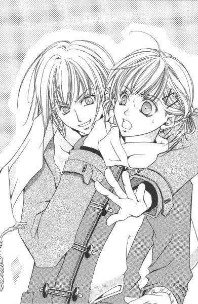
私は振り返って白薔薇さまの腕をとると、うれしさのあまりその場でぴょんぴょんと跳ねた。たかだか一週間会わなかっただけなんだけど、すごくなつかしく感じてしまう。
「はい、あっけましておめでとー」
白薔薇さまは今ここのコンビニで買ってきたばかりですっていうの丸出しの、お店のロゴ入りテープのついた袋入りミックス・キャンディーの口を開いて、中身を一つかみ分私のコートのポケットに押し込んだ。
「あ、ごちそうさまです」
ぺこり。
「好きに食べていいからね」
「でも、みんなの分は？」
キャンディー一つかみっていったら、一袋の半分以上になるかもしれない。
「いーからいーから。これは甘党の祐巳ちゃんのために買ったんだから」
白薔薇さまは抹茶のキャンディーを一つむいて口に放ると、中身の少なくなった袋を小さく丸めて自分のコートのポケットにスマートに納めた。飴を買ったはいいが、持っているのが億劫になっただけではないだろうか。だって、唯一の手荷物は小さな鞄一つで、とても飴をストックしておく場所なんかなさそうだった。
「なーに？」
不作法にじろじろ見つめる私を、白薔薇さまは咎めるように軽くにらむ。
「あ、すいません。私服の白薔薇さま、初めて見たものだから。何か新鮮で」
「ふーん」
ちょっとだけ毛先を揃えたのかな、いつもより顔つきがシャープ。キャメルのロングコートから覗く足もとは焦げ茶色のブーツ。練乳みたいなやわらかい白の襟巻きを無造作に巻いて、何か大人の女性、というよりむしろ外国の紳士、って感じで格好いい。
「祐巳ちゃん、可愛いね。紺のダッフルコートがよく似合う」
「えっ、いえ、滅相もございませんっ。私なんか、白薔薇さまの高そうなコートの足下にも及びませんっ」
ここであわてて誉め返してどうする。それも、「高そう」とか俗っぽい言葉遣うか、普通。──なんて、自己嫌悪に陥りながらも、取りあえず自分に突っ込みを入れる。こういう場合、祥子さまなら「ありがとうございます」なんて言ってほほえむだけで絵になるんだろうに。
しかし、そこは白薔薇さま。
「うん、高かった。カシミヤだもん。一昨年、いや一昨々年になるかな、珍しく親にねだって買ってもらったんだ。クリスマス兼お誕生日プレゼント。それとお年玉も入っていたかな」
白薔薇さまも、十分に俗っぽかった。何だか仲間、って気がする。
「しっかし祐巳ちゃんのバッグ、パンパンだね。その中に、もしかしてパジャマとか替えパンツとか入っているのかなー」
くんくんと匂いを嗅ぐ。ああ、もう完全にヘンタイ親父だよこの人。
「......もしかしなくても入ってますよ」
ついでに言えば、バスタオルとか歯ブラシセットとかそういう物もごちゃごちゃと。私に言わせれば、白薔薇さまのこの軽装の方が疑問だ。だって泊まるのって、ホテルじゃなくて一般家庭なんでしょ？
「それにしてもお早いですね、白薔薇さま。電車でいらしたんでしょう？」
私はバッグを白薔薇さまから、遠ざけながら話題を変えた。
「ううん、ブーブーで来たの」
（......）
ブーブーって。つまり、幼児言葉でいうところの「車」ってことだと思うけど。もう、親父か赤ん坊か。どちらかに統一してくれないかな、白薔薇さま。
「でも。白薔薇さまの家方面には、Ｍ駅からバス出てませんよね。じゃ、ご家族の方に送ってもらったんだ。いいなー」
「何、祐巳ちゃんは車に乗りたいの？」
（......そうじゃないだろ）
この場合、間違っているのは白薔薇さまだって思う。訂正しているとまた混乱するだろうからわざわざ言わないけど。
サ。
サは佐藤のサ。
サトウ・セイ。──別名、白薔薇さま。
「じゃ、そろそろ行きますか」
私がポケットの中からピーチヨーグルト風味のキャンディーを選んでいると、白薔薇さまはまだ待ち合わせの時間前だっていうのに、そういった。
「え、でも、だって......」
他の人は、って質問する私の腕をどんどん引っ張って北口に向かう。
「私、他に誰か来るなんて言った？」
「は？」
「デートしよう、って言っただけだよ」
「えっ!?」
「ふっふっふ。引っかかったわね、祐巳ちゃん」
白薔薇さまはよだれをすする真似をして、私を不気味がらせた。
「で、でもっ。合宿っておっしゃいませんでした......？」
おずおずと聞く。
「一本でもニンジン。二人でも、合宿」
（ひぇ......っ）
「さ、さよならっ」
私は踵を返した。
「あらら。そう簡単に罠に掛かった獲物を逃がすと思う？」
白薔薇さまがにっこり笑って私を引き寄せた。
「祐巳ちゃん、かーあいーい。よしよし、お姉さんといーとこ行こうね」
「勘弁してくださいよ」
いつもだったら、ここに祥子さまが登場するところなんだけど。......なんだけど。
「祥子探しても、無駄。今頃彼女はお家にいまーす」
「じゃ、本当に」
「この時間、祐巳ちゃんは私の貸し切り。煮て食おうが焼いて食おうが」
「やーん」
耳もとで囁かれて思わず私が身をよじると、白薔薇さまはぬいぐるみにそうするようにギュッと私を抱きしめた。
「こらっ。祥子から教わったでしょ？ そういう嫌がり方すると、かえって私を喜ばせることになるよ」
（......マジでサドかもしれない。白薔薇さまって）
で、祥子さまに叱られるのが嬉しい私はマゾだから、相性はピッタリ。──って、私ったらいったい何考えてんだろ。
「──とまあ、セクハラはこれくらいにしておいて」
白薔薇さまったら勝手に私を触り回した後、満足したのか飽きたのか、時間に線でも引いてあったみたいに急にパッと手を離した。
「そろそろ行きますか」
（......）
そのセリフ、ちょっと前に聞いた気がする。もしかして、あの時点からもう一度同じことを繰り返すつもりじゃないだろうな、この人。
「どしたの、行くよ」
白薔薇さまが、先に階段を下りていく。
（......）
「祐巳ちゃん、早く」
（あーっ！）
私はそこではたと気がついた。最初の「そろそろ行きますか」から今の「そろそろ行きますか」までの間、ハサミか何かで切り取って、何食わぬ顔でくっつけちゃう気なんだ、白薔薇さま。
「白薔薇さま、ずるーい」
私は白薔薇さまに追いついて、軽く腕を叩いた。私のコートのポケットの中では、キャンディーがゆっさゆっさと揺れている。
これくらいじゃ誤魔化されないからね、って。
２
デートと称して白薔薇さまに連れて行かれたのは、学校に行く途中にあるあの神社だった。
「すごい、白薔薇さまっ！もしかしてエスパー!?」
「何、言ってんの」
循環バスを途中下車して、鳥居をくぐる。思った通り、参道の両側に屋台がびっしりと出ていた。風に運ばれて、醤油の焦げた匂いがする。
「イカかな？ トウモロコシ？」
「そんなの、あとあと。おみくじ引こう」
日頃信心深いとは言い難い白薔薇さまとは思えない行動だと思ったが、冷やかし半分かもしれない。だって、明らかに美人の巫女さん選んで前に並んだもん。そっちの方が混んでいるっていうのに。
「本当に、二人でデートなんですね」
おみくじの列に並びながら、私はつぶやいていた。もしかしたら現地集合ってことで、由乃さんや令さまなんかが来ているかもしれないという微かな希望があったんだけど。
シ。
シマヅ・ヨシノ。
「由乃ちゃんと令は、お正月は箱根だって」
「箱根？」
「双方の家族でね。元気になった由乃ちゃんの、たっての希望」
「箱根が？」
何か変な感じ。箱根っていったら温泉で有名なあの箱根だと思うけど、お年寄りならともかく女子高生が行きたがる場所？
「あの、軽井沢とかの間違いじゃ」
「軽井沢で、駅伝やってる？」
「──」
忘れていた。由乃さんの趣味は、スポーツ観戦だったっけ。じゃあ、由乃さんに箱根駅伝を生で観せるために、島津・支倉両家は揃って出かけたってわけだ。由乃さんがいつでも青信号なのは、環境によるところもかなり大きいと思った。令さまばかりじゃなく、取り巻く大人たちも相当に甘々のようだ。
「紅薔薇さまは冬期講習。で、黄薔薇さまは毎年恒例のハワイの別荘でしょ」
「じゃ、志摩子さんは？」
「志摩子？」
白薔薇さまは一拍間をおいてから、ちょっと眉を上げて私の言葉を繰り返した。
「志摩子ねぇ」
ト。
トウドウ・シマコ。
「あの子は誘ってない」
「どうして」
「理由はいろいろ。志摩子の家って、何かとお客さんが多いからね。お正月とか、家の手伝いしないといけないの。それに、あーた。あの敬虔なクリスチャンの志摩子が、神社に初詣なんて来ると思う？信仰心を乱しちゃ駄目よ」
「あの、白薔薇さま？......それを言ったら」
「そ。それを言ったらお終いよ。建前上、リリアンの生徒を神社の初詣なんて誘っちゃいけないわよねー」
コロコロと、白薔薇さまは笑う。
「じゃ、どうして私を」
一応、というより、正真正銘リリアン女学園の生徒なんですけど。それに、自慢じゃないけど幼稚舎からだから、もうバリバリ温室育ちだし。
「匂いがした」
くんくん、と私に顔を近づける。
「祐巳ちゃんの家ってさ、八百万の神様とお釈迦様とマリア様が仲良く同居しているでしょ？」
「えっ、どうして!?」
それってどういう匂い、って自分でもコートの袖辺りを嗅いでみると、白薔薇さまは言い出しっぺのくせして無責任に腹を抱えて笑った。
「君は本当に面白いね。御神酒や線香にご聖体のパンだのワインだのが混じった匂いでもしたと思ったのかね。匂い、っていうのはね比喩。喩え、だよ。わかる？」
「うっ」
「──ということは、やっぱり祐巳ちゃんちはチャンポンなんだ」
「はあ」
確かに。
神棚はないけど、家に神社のお札が貼ってある。
仏壇はないけど、花寺学院に通っている祐麒の部屋には仏教グッズ。そして私が通っているリリアン女学園は、言わずと知れたカトリックの学校。
それを矛盾も感じないで受け入れている家族。
「考えてみたら、何て節操がないんだろう」
「いいって、いいって。うちも、似たようなものだし。仲間は、だから匂いでわかるんだ。そういうのも、日本の文化だからね。山百合会の幹部メンバーがこれなんだから、気にしなさんな。由乃ちゃんや令たちだって、予定がなきゃきっと来てたよ」
「でも志摩子さんは違うんでしょ」
「志摩子は特別」
志摩子さんのこと思い出したのか、やわらかく目を細める。
白薔薇さま、ってば。いつもは放ったらかしにしているくせに、やっぱり志摩子さんのこと誰よりも大切に思っているんだろうな。自慢の妹だもん、当然か。
「ちょっと、白薔薇さまったら」
せっかく見直しているっていうのに、美人の巫女さんに色目つかわないで欲しいんですけど。
やっとおみくじ引く順番がきて、一つ穴の開いた箱をひっくり返してガシャンガシャン揺すって横を見たら、一足先に引き終わっていた白薔薇さまがおみくじを渡してくれた巫女さんの手をしっかり握っているんだもん。──もう、油断も隙もありゃしない。
「小吉」
白薔薇さまがつぶやく。
「末吉」
私が続ける。
おみくじを引いた場所から少し離れたこの場所でも、傍らにある梅の木はおみくじの白い花が満開だった。本物の花が咲くには、まだもう少し時間が掛かりそうだけど。
「どうせなら大吉と大凶だと面白かったのにね。ねえ、小吉と末吉ってどっちがいいのかな？」
「小吉の方がわずかにいいんじゃないですか。......そんなことより大凶なんて、この世に存在するんですか」
「大吉がある以上、あるんじゃないの？」
でも、中凶とか末凶とか聞いたことはない。
「無くし物は出てこなくって、願い事はスムーズにはいかないけど叶う、ってか。何か、微妙だね」
白薔薇さまはおみくじを細く畳んで、梅の木に結んだ。
「あっ、ちょっと待ってください」
おみくじの文章って、古文みたいだからなかなか読みづらい。すらすら読んじゃう白薔薇さまはさすがだ。得意なのは英文だけじゃないらしい。
「どれ」
「あ」
たらたら読んでいる私から、白薔薇さまはおみくじを取り上げた。
「ふーん。今年は引っ越しとか結婚とかするな、って書いてあるよ。あと、子宝は少ないって。うーん少子化時代を反映してるねぇ」
引っ越しはともかく、十六歳の女子高生に「結婚」だの「子宝」だのっていうのは、あまり関係ない気がするんですけど。
「願い事は努力すれば成就するって。日々精進ってことだね」
はい、っておみくじを返されたので、私は白薔薇さまを見習って梅の枝にそれをくくりつけた。おみくじの花が、また一つ咲いた。
願い事は努力すれば成就する──。でも、今自分が一番願っていることって何なのだろう。
破魔矢や色々な種類のお守りを眺めながら、私は考えていた。
家内安全。健康祈願。厄払い。安産祈願。交通安全。
この世の人々は、神様にお願いすべきことがたくさんある。それだけ、様々な悩みを抱えて生きているんだ。
納められた絵馬は「○○大学に入学させてください」なんて文字で一杯で。こんなにたくさんの人にお願いされたら、神様だって全部は叶えられないだろうな、なんて思っちゃう。
「お待たせ」
お参りしていた私を残して、屋台を冷やかしにいっていた白薔薇さまがワッセワッセと戻ってきた。しかし初詣と言いながら、詣でない白薔薇さまはいったい何をしに来たんだか。まさかおみくじ引くためだけに、ここに来たんじゃないだろうけど。
「あの、白薔薇さま......？それはいったい──」
両手に持ったスーパーのビニール袋みたいなものを見て、私は思わず口を大きく開けた。
「こっちの袋がイカ焼きと焼きトウモロコシ。で、こっちがお好み焼きとたこ焼きと焼きそば。たくさん買ったから袋に入れてくれた」
アンズ飴は無理でも綿アメくらいは持ち帰れるかな、なんて。白薔薇さまは、まだまだ買い物する気力が有り余っているようでクラクラした。
「えっと。私が聞いているのは、袋の中身じゃなくて。そんな大量に買って、どうするのかってことで」
「そりゃ、食べるに決まっているでしょ」
「だ、誰が」
「私たちが。取りあえず食べやすいたこ焼きからいきますか、祐巳ちゃん」
そう言いながら白薔薇さまは、ビニールの手提げ袋から一つたこ焼きのパックを取り出した。すごい。ざっと見ても、各三パックずつは買ってきている。
「はい、あーん」
白薔薇さまが楊子に刺したたこ焼きを差し出す。
「あーん」
つられて口を開けちゃう自分が恐ろしい。でも、焼きたてのたこ焼きってアツアツですごくおいしい。たこが大きくてプリプリしている。
「ささ、温かいうちにどんどん食べて。あ、通行の邪魔になるから裏の方行こうか。祐巳ちゃん、袋一つ持ってね」
訳もわからないまま、私はたこ焼きとお好み焼きと焼きそばのザクザク入ったビニール袋を片手に、もう片手に菓子折の入った手提げ紙袋を持って神社の裏手の、雑木林と呼んでもいいくらい木々の茂った道を歩いていた。肩には大きめのショルダーバッグ掛けてるから、何かすごい格好。今時、家出娘だってもっとスマートだと思う。
片手があいている白薔薇さまが時たまたこ焼きを口の中に入れてくれて、八個入りをそれぞれ四個ずつ胃袋の中に納めた。
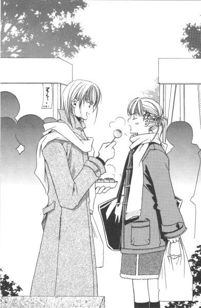
「何しようっていうんですか、白薔薇さま」
「何って？ 人気のないところに連れ出されて、不安になった？」
「そうじゃなくて」
私は、しらばっくれた白薔薇さまの顔を覗き込んで言った。
「私たち二人でこの焼きトウモロコシだのお好み焼きだのを全部平らげるっていうのは、どう考えても無理がありすぎですもん」
「ふむ」
白薔薇さまは食べ終わったたこ焼きのパックに輪ゴムをかけ、底にこびりついたソースがこぼれないようにそっとビニール袋に戻した。いつの間にか膝丈くらいの石の柱が等間隔に並んでいる辺りまで来た。ここから先は神社の敷地ではないらしい。裏道といった感じの、さほど広くはないけど舗装された道路の端には、数台の自動車が路上駐車してある。
「やっぱり、他に誰か来るんでしょう？」
「その答えじゃ、はずれでもあり当たりでもあるなぁ」
つぶやきながら、白薔薇さまはコートのポケットをゴソゴソと探った。
「あ、キャンディーならここにも」
両手が塞がっている私は、腰をクイッて曲げて自分のポケットを突きだした。
「違う違う」
白薔薇さまが取り出したのは、何かの鍵だった。何か、って。家や自転車の鍵には見えない。たぶん、いや間違いなくそれは車の鍵だ。
「あの──」
私に驚くだけの十分な時間もくれずに、白薔薇さまはどんどん歩いて黄色い軽自動車の側まで行くと、その鍵をドアに差し入れた。
「ささ、乗ってちょうだい」
後部座席にイカやトウモロコシの入っているビニール袋を置いて、それから身を乗り出して内側から助手席側の扉を開ける。
「えっと、あの、白薔薇さま......？」
運転手はどこに、って質問をしようかどうしようか迷っている間に、持っていた荷物は奪われ、私自身も半ば強引に助手席に引きずり込まれてしまった。
「まさか」
恐れていた通り、運転席に乗り込んだのは白薔薇さま本人であった。当たり前のように、エンジンかけてシートベルトを締めた。何と白薔薇さまは自宅からここまでこの車でやって来て、駅前には駐車するスペースがないから車を神社裏に放置し、わざわざバスでＭ駅まで私を迎えにきたというわけだった。
「安心して。ちゃんと免許は持っているから」
どうだ、って見せてくれたカードは、確かにうちのお父さんが持っている自動車の免許証とそっくりだった。写真は目の前の白薔薇さまで、名前の欄には「佐藤聖」。確かに、先月の二十五日に誕生日を迎えて十八になっているんだから、法律上は普通車を運転できる年齢ではあるんだけど。
「大丈夫、大丈夫」
笑いながら白薔薇さまは、ご丁寧に私の身体をベルトでシートに固定した。
「しゅっぱーつ」
「えーっ」
私の不安をよそに、白薔薇さまの運転する黄色い車は発車した。しかしバス通りに出る手前の信号で止まった時、早くもエンスト。十分に私を震えあがらせてくれた。ある意味、ジェットコースターやお化け屋敷より怖い。
「いったい、いつから乗っているんですか」
答えを聞くのがとっても怖い。でも聞かないまま、ここに座り続ける自信は残念ながら私にはない。今気がついたんだけど、フロントガラスに内側から吸盤で張りついている「あれ」。あれは若葉マークっていうんじゃありませんでしたっけ。
「いつから、って」
ウインカーを左に出しながら、白薔薇さまは聞き返す。ああ、タイミング遅いんじゃないかな。
「免許取ってからの運転歴はどれくらいか、とお聞きしているんですが」
「どれくらいもなにも。教習所以外の車を運転したの、今日が初めて」
「ひっ」
「大丈夫だって。家からここまで無事故で来られたんだから」
「事故があったら大変ですよ」
私、半分涙声になっていたかもしれない。でも、十六年の人生が今日で幕切れとなるかもしれないんだから、当然の反応だと思う。
「ははははは」
ハンドル握りながら、白薔薇さまは愉快そうに笑う。
「お、降ろしてください」
「死にゃしないよ。だって、おみくじは二人とも『凶』じゃなかったもん。おっと」
「ぎゃあ」
初心者のくせに、無謀な追い越しなんかする。どこに向かっているか知らないけど、急がなくていいから。余計なことしないで、地道に運転して欲しい。
「めでたしせいちょう──」
とうとう私は、マリア様にお祈りを始めた。
「ははは。祐巳ちゃんは、やっぱり面白いね」
キー、キキキー。
「ぎゃー。お助けください、マリア様ー」
そんなこんなで、精神的にも肉体的にも拷問のような車に乗せられた私は、パニック状態ですっかり肝心の質問をするのを忘れていた。──というより、質問する余裕なんて生まれようがなかった。
目的地はどこなのか。
それって、かなり重要な問題だったと思うんだけど。
天敵のいる風景
１
「着いたよ」
どこをどう走ってきたのかわからない。でも、車は事故を起こすこともなく無事目的地に到着したらしい。知ってる限りのお祈り、何回リピートしたか知れない。
「まだ天国じゃない、......みたいですね」
少し気持ちに余裕が出てきたので、窓の外を窺う。そこは「閑静な」と表現するのがピッタリな感じの、緑の多い住宅街だった。単に田舎って意味を多く含んで閑静と呼ばれているような、我が家の周辺とは大違い。美的感覚とか計算されて植えられているような木々が、広い敷地の高い塀やゆったりとした街角の遊歩道を彩る街路樹としてスマートに枝を茂らせている。
「ここは？」
「そりゃ、今夜の宿でしょ」
「あれ、マジだったんですか」
白薔薇さまったらふざけてばかりいたから、合宿っていうのも冗談だったのかと思っていた。
「マジも大マジ。ちょっと待ってて」
白薔薇さまは一人で車を降りると、目の前にあるインターホンを鳴らした。
（いんたーほん？）
当たり前のように、そこは一軒の家であるようだった。ただ、すごく違和感があるのは、その規模が一般庶民であるところの自分の許容範囲を超えていたからに他ならない。わかりやすく言うと、自分の家に比べて相当大きいのだ。それも、桁外れに。
そういえば電話では、白薔薇さまの知り合いのお宅って言っていたっけ。でも大きいお家っていっても、ここまで大きいとは思わなかった。だってどこまでが敷地かわからないんだから。車の中からの視界には、塀の終わりは確認できない。気後れしまくり、だ。
「お待たせ」
白薔薇さまが再び運転席に乗り込むと、同時に正面の門が開いた。
「すごっ」
門が自動に開いただけでも驚きものなのに、その先に現れた世界は、思わず唾を飲み込むほどのド迫力。
「ここ、学校とか病院とかじゃないですよね」
「ははは。なるほど」
大口開けて笑った後、白薔薇さまは車を進めながら「表札あるでしょ」と門柱に掛かっていた立派な表札を指し示した。
私は、それを読んだ。
『小笠原』
（え？）
見間違いかと思って、目を擦ってからもう一度見る。
小笠原。
車は門の中に滑り込んだ。残像が、はっきりと脳裏に文字を浮かび上がらせる。
「あっ、あのっ」
焦って口が回らなかった。私ははぐはぐと口を動かしたまま、白薔薇さまの腕にすがって運転をストップしてくれるようお願いした。ゼスチャーまじりで。
「どう、祐巳ちゃん。嬉しい？」
「じゃ、やっぱりここは祥子さまの──」
「あったりー」
「ひどいっ、白薔薇さまの嘘つきっ。祥子さまのお宅に来るなんて一言も言っていなかったじゃないですか」
「言ったわよ。私の知り合いのお家って。祥子は私の知り合いでしょ？嘘ついていないじゃない」
それって、どう考えても屁理屈だ。私にドッキリ仕掛けようって、わざとぼやかしてしゃべったに決まっている。
「いいじゃん、そんなことどうでも。祐巳ちゃん、祥子に会いたかったんでしょ」
「そっ、そりゃそうですけど。でも、そーじゃなくっ......て」
じゃあ何、って聞かれても。私には答えることができない。ただ、このまま祥子さまのもとに連れていかれてしまったら、やっぱりまずい。どうにも具合が悪い。それだけだった。
「心の準備っていうか」
「何でー？ 学校がある日は、祥子と毎日会ってるじゃない。何、固くなってるの。リラックス、リラックス」
その余裕の十分の一でも分けてもらいたい。白薔薇さまは私の懇願を無視して、車をゆっくりと走らせる。門から中はちょっとした森みたいになっているが、緩やかに蛇行した道の周囲だけトンネルかアーチのようにチューブ型に空間が空いていた。
「やーね。別に祥子の両親に『娘さんをください』ってお願いにいくわけじゃないんだから」
「りょ、両親!?」
考えてもみなかった。祥子さまのお宅ということは、当然ご家族がいらっしゃるというわけで。正月二日から押し掛けるなんて、何て非常識な「妹」なのだろう。
引き返してもらいたかったが、もはや遅い。白薔薇さまがインターホンを押した時点で、もう「お宅訪問」は始まってしまっているのだ。
（白薔薇さま、恨みますからね）
森が終わって視界が開けた。イギリス風の庭園の中に、お屋敷もしくはお城と呼んだ方がいいような建物が現れる。
「えっと、右っていったっけ」
白薔薇さまがハンドルを切ると、駐車場らしきものが見えてきた。らしき、というのは他にも車が停まっていたからであって、それがなければ何だかわからなかったかもしれない。だって、全部で二十台は余裕で停められるほどだだっ広いスペースで。広いけどスーパーなんかの駐車場と違うのは、しっかり屋根が付いているところだ。
「何か、嫌な予感がするな」
先客のピッカピッカの真っ赤なオープンカーを見て、白薔薇さまがつぶやいた。
「嫌な予感、って？」
「根拠がないけど、ぞわーって鳥肌が立つのよね。あの車見てると」
「はあ？」
「いや、あれにお似合いの男をちょっと想像しちゃってね」
白薔薇さまは、赤い車から一番遠い場所をわざわざ選んで駐車した。赤と黄。あと緑の車があれば信号になるのに。停まっているのがこの二台だけのところをみると、ここは来客専用の駐車スペースであるらしい。いつぞやの黒塗りの車は見あたらなかった。
「オーライオーライ」
助手席から降りて車を誘導しながら、私は白薔薇さまの言う「あの車にお似合いの男」というのを想像してみた。何となく外見がよく、自分にものすごく自信がある、キザでナルシストの若い男の人。
「あーっ!!」
「な、何、祐巳ちゃん」
車庫入れに不慣れな白薔薇さまは、私の声に反応し、ブレーキを踏んでからあわてて窓から顔を出した。どこかに車体をぶつけるか、擦るかしそうになったと思ったらしい。
「あ、まだオーライです」
「......脅かさないでよ」
改めてストップをかけると、白薔薇さまは胸を押さえながらヨロヨロと運転席から降りてきた。何だかんだ言っても、免許取得後初めての運転で緊張していたようだ。聞けば、車はお母さんの所有物だということだし。
「もしかして、......王子さま、ですか」
「ああ、あの車の主のこと？ たぶん、ギンナンの国の王子さまじゃないかね」
私たちは屋台で買った諸々のおみやげと各自の荷物を後部座席から下ろすと、建物を目指して歩き出した。
「お正月ですもんね。従兄ですもんね。婚約者ですもんね」
私は自分に言い聞かせるようにつぶやいた。例の彼が祥子さまのお宅に居たって、何も不思議はないんだ、って。
「でも、祐巳ちゃんは面白くないですもんね」
「はあ」
でも面白い面白くないを言える立場ではないので、私の場合は。
「もしかして、だから呼ばれたのかな」
いつものことだけど。白薔薇さまの話って、結構中間を省略してしまう傾向があるから。解説者がいない以上、私は自分でちゃんと聞き出さないといけない。
「呼ばれたって、誰に？」
「祥子」
何を今更、って顔をして白薔薇さま。自分では全部わかっているかもしれないけど、私はちょっと前にやっとこさ状況が見えてきたばかりなわけで。それも、かなり大ざっぱに。
「じゃ、祥子さまが呼んだんですか」
「そおよ。何だと思ったの」
「白薔薇さまが強引に押し掛けたのか、と」
正直に答えると、白薔薇さまは「失礼な」と空いている左手で私の頭を小突いた。
「年末に正月の予定聞いたら、『よろしかったら遊びにいらっしゃいませんか』って。わざわざ今日を指定してきたの、祥子が」
白薔薇さまは本気で三薔薇ファミリー集めて初詣に行こうと企画していたのだが、先の理由で紅薔薇さまと黄薔薇さまに断られ（当たり前だ。思いついたのが大晦日の午前中だっていうんだから）、一時は断念し掛けたところ祥子さまからうれしいお誘いがあったから私を連れてきた、というわけだ。
「では、私は呼ばれていないのでは」
「どうして？ 祐巳ちゃんの名前出したら、『連れてきて』って言ってたよ」
「本当に!?」
白薔薇さまの言葉を聞いて、天にも昇る。
「君たち、ってさ。全然似てないのに、押しが足りないところだけは似てるよね。あのさ、どっちも『待ち』だと、百年経ってもそのまんまだよ」
ちょっと持ち上げられたと思ったら、一気に地上に墜落。しかし。百年経ってもそのまんま──。随分厳しいご指摘ですこと。
「ところで、ギンナン王子の名前って何だっけ」
白薔薇さまったら、もう存在自体を名前ごと頭から消去しようとしているんじゃないだろうか。ギンナンの国の王子さまの名前は、ですね、確か。
「えっと──」
あれ、出てこない。
祥子さまの従兄だけど、苗字は「小笠原」ではなかったってことだけ覚えていたんだけど。何となく源氏物語と関係なかったっけ。
ああ、最近人の名前が出てこない。また、「あ」からあたってみないといけないのかな。
「ま、どうでもいいか。あんな奴のこと」
白薔薇さまは正面玄関と思われる大きな扉の前に立つと、目の前にある鎖を引いて呼び鈴を鳴らした。
何か、すごい。よく見ると、建物自体がすごくアンティーク。きっと外国の映画でしかお目にかかれないような、ピシッと黒いスーツ着た白髪まじりの初老の紳士が取り次ぎに出るんだろうな。羊、もとい執事とか呼ばれる人。
程なく中から鍵を開ける気配。門とは違って、こちらは手動であるらしい。
「佐藤さまですね、どうぞ」
扉が開かれた。だが、中から顔を現した人は、私の想像していた「執事」ではなかった。共通点といえるのは男というところだけで、スーツも着ていなければ白髪もない。おまけに、見たことがある顔ではないか。
「え？」
「え？」
私たちは同時に同じ声をあげた。私と白薔薇さま、ではない。私と、扉を開いた人物が、である。
お互いが、そこに鏡があるのでは、と錯覚を起こしたように複雑な表情で相手を見た。だって、そこに見つけた相手は「そこにいるべき人」ではないのだから。
「祐麒......？」
「祐巳......？」
私は隣にいる白薔薇さまに答えを求めた。でも、どうやらドッキリの続きではないらしい。白薔薇さまだって、目を瞬かせて私たち姉弟を見比べている。
「どうなってんの」
つぶやく祐麒の後ろの廊下を、ゆっくりと背の高い青年が歩いてくる。
「や、いらっしゃい」
その人物を認めた私は、その時、昨日からのもやもやが一気に晴れた思いがした。
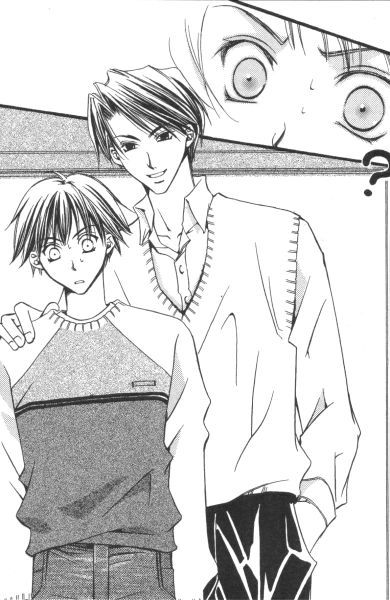
（カ、だったんだ！）
祐麒の年賀状に書かれていた、どこかで見覚えのあると思った差出人の名前。それは目の前にいる背の高い青年のものに他ならない。──カ行、今にして思えばすっ飛ばしていた気がする。
カはカシワギのカ。
柏木。柏木優。
私も白薔薇さまも、そこにいることを面白くないと感じている、ギンナン王子こと柏木優氏は。いつものごとくどこまでもさわやかな笑顔を浮かべて、我が物顔でその場に存在していたのである。
──私の弟の肩に手を掛けて。
２
「ああ、いらっしゃい。白薔薇さま、祐巳」
柏木さんの登場から遅れること約十秒、祥子さまが着物姿で玄関先に現れた。
「あけましておめでとうございます、お姉さま。本日はお招きにあずかりまして」
私はあたふたとコートを脱いで、新年のご挨拶をした。けど、菓子折の入った紙袋とお好み焼きなんかが詰まったビニール袋と、それからショルダーバッグが邪魔して、なかなかスマートにいかない。
「おめでとう」
今年初の祥子さまは、花がほころぶようにほほえんだ。
くすんだ桃色の地に黄色い小花模様（小紋というらしい）の着物。その上に、蝶の模様の葡萄茶の羽織という、以前日本画の個展に出かけた時のに比べたら幾分華やかさに欠ける装いではあるが、そこが普段着っぽくてすごくいい。サラサラの黒髪を簪一本だけでまとめた、何気ないヘアスタイルがまた決まっている。お化粧していないのに、とても艶っぽい。
祥子さまは「どうぞ」と言うと、先頭立って廊下を歩いていく。
ああ、誰彼かまわず自慢したい。
こんなにきれいな人が私のお姉さまだ、って。大声で言って回りたい。──って、のぼせている場合じゃなかった。
「どうして、あんたがここにいるのよ」
歩きながら、私は祐麒の袖をつかんで問いつめた。姉として、そして祥子さまの妹として、ここはどうでも祐麒に事情を聞かなきゃならない。
「どうして、って」
詰め寄ると、祐麒は言いよどんだ。
「どうしてここが、祐麒の『お友達の家』なわけ？」
「俺もわかんないんだよ。成り行きでこうなっただけで。だって、本当に小林の家に泊まりにいく予定だったんだから。なのに途中で、柏木先輩に拉致されて」
よくはわからないけれど、小林君と柏木さんが祐麒を賭けてゲームセンターでゲームをやって、小林君が負けたという話だった。しかし、どうして祐麒が賭けられなきゃいけないんだろう。
「本当？」
そもそも柏木さんとどういう関係なんだ、って祐麒の隣に当たり前のようにいる彼を見ると、目があったその人はまたしてもさわやかに笑った。
「福沢なんて珍しくない苗字だから気づかなかったよ。祐巳ちゃんが、ユキチのお姉さんだったとはね」
「祐巳ちゃん、なんて馴れ馴れしく呼ばないでもらいたいな柏木さん」
白薔薇さまが横から柏木さんを注意した。
「おや、白薔薇さまに言われる筋合いはないんじゃないかな。彼女はさっちゃんの妹だろう？さっちゃんの妹は、僕にとっても妹みたいなものだよ」
「私は、その『さっちゃん』っていうのも気にくわないんだが」
「それは仕方ないよ。僕はさっちゃんが生まれた時から、そう呼んでいるんだから」
白薔薇さま曰く「同類」の二人は、天井が高くてちょっと暗い廊下で、見えない火花をバチバチと飛ばした。それを横目に、私は祐麒に質問した。
「あんた、学校で『ユキチ』なんて呼ばれているの？」
「......聞かないでくれ」
弟は弟で、結構大変な目に遭っているらしい。
「いらっしゃい。お客さまが増えて嬉しいわ」
一目で祥子さまのお母さんってわかるほどそっくりな女性が、リビングの椅子から立ち上がって迎えてくれた。
「おめでとうございます。お久しぶりです、清子小母さま」
「まあ、聖さん。お元気でした？」
「はい。おかげさまで」
白薔薇さまは大人向けモードでにこやかに対応した。でも表面的じゃなくて、本当に好感持っている感じ。祥子さまのお母さんに。
「お母さま、紹介いたしますわ。私の妹、福沢祐巳です」
「は、初めまして。本日はお招きにあずかりまして......」
「あら、可愛い。さすが祥子さん、見る目あるわね」
細かい花模様の入っている鶯色の小紋の上に、真紅の紋付き羽織を着て、こちらは目にも鮮やか。でも全然派手じゃなくてむしろ品が良く見えるのは、やはり元華族のお生まれのなせる業だろうか。
「私のことは清子って呼んでね。私も祐巳ちゃん、て呼ばせてもらうから」
「はいっ」
当然のように、今度は白薔薇さまは文句を言わなかった。考えてみれば、私も柏木さんに「ちゃん付け」されるのは嫌だ。祥子さまのお母さんにならいいけど。
「じゃあ、祐巳ちゃん。小笠原家は毎年お正月の二日はお休みなの。家の中を手伝ってくれる人もいなくて十分なおもてなしはできないけど、その代わり気疲れする殿方も留守だから気楽に過ごしてちょうだいね」
「それはひどいな、義叔母さま。じゃあ、まるで僕が来たのは迷惑みたいじゃないですか。お祖父さまや叔父さまが留守で心細いだろうって、こうして後輩を連れて用心棒になりに来たっていうのに」
柏木さんが、お茶を運びながら言った。
「あら、ごめんなさい。でも優さんは別よ。お茶を入れてくれるような男性だったらいつでも大歓迎」
「恐れ入ります」
満足そうに笑って、柏木さんはテーブルの上に日本茶が注がれた人数分の茶碗を置いた。祥子さまが、私と祐麒が別々に持参した同じお菓子を菓子皿に盛って「おもたせですけど」と出してくれた。
私は白薔薇さまのアシスタントで、屋台で買ってきたたこ焼きとかお好み焼きとかトウモロコシとかを電子レンジでチンする係になった。祥子さまの家のキッチンはすごく大きくて、業務用の大きなオーブンレンジなんかあったけど、誰一人使いこなせなくって、もう一つあった家庭用の電子レンジを何度もフル稼働させて全部を温めた。
「こういうの、珍しいわね」
清子小母さまは、屋台で買ってきたような物をとても喜んで食べた。小笠原家の奥さまにとって、それは滅多に口にできない代物だったらしい。白薔薇さまは、そういうことも踏まえて買い物したのだろうか。だとしたら、やっぱりただ者ではない。
（しかし、何だ）
不思議な取り合わせの面々が、屋台で買ったおみやげ食べながらのんびりとお茶をすすっている図っていうの、違和感かんじているの私だけだろうか。
時計は午後の四時を回ったところだった。
３
その場の空気がよくわからないまま、それでも正月だからと何となく百人一首なんか始まって、雰囲気に流されがちな私は、不覚にも祥子さまの敵である柏木氏なんかと一緒にかなり楽しく遊んでしまったのである。
勝負は、場所を和室に移して行われた。張り替えたばかりの畳の香りが、鼻孔をくすぐる。立派な床の間には、お正月らしく富士山が描かれた水墨画の掛け軸と松竹梅の生け花。私たちが今いる八畳間は、ふすまを取り外せば二倍にも三倍にもなる造りである。
結果は、雅な遊びをやり慣れていない福沢姉弟の惨敗で。年季の入った小笠原一族とは、やはり実力の差がありすぎた。始めから勝負の結果は明らかだったのだが、やっぱり負けるのは悔しい。
「じゃ、さ。チーム戦にして、今度はトランプにしようか」
柏木さんが提案した。
一枚差で柏木さんに敗れた白薔薇さまは、雪辱を果たす機会を狙っていたようで一も二もなく同意する。
「いいけど、組み合わせは」
「福沢姉弟、小笠原親子とすると、余りが僕と白薔薇さまになるけど──」
「えーっ!?」
私と祐麒、そして白薔薇さまが同時に不平の声をあげた。そりゃそうだ。チーム戦にする理由はハンデをなくすことが目的であるはずなのに、お味噌の福沢姉弟を組ませてどうする。
もっとも白薔薇さまの不満は、また別のところにあるようだ。チーム分けする前から仲間割れしている二人じゃ、なるほど一緒に戦うことなどできないだろう。
「半分が大反対じゃ否決だな」
たぶん、ちょっと言ってみただけだったのだろう。柏木さんは、すぐにその案を引っ込めた。
百人一首の札を箱に戻している祥子さまを横目で見ると、別に誰と組んでも構わないって顔をしている。清子小母さまも右に同じ。大人だな、と思う。
私なんか、声に出して言わないけど、祥子さまが柏木さんと組んだりしたら嫌だと思っている。白薔薇さま同様、自分が柏木さんと組むのもちょっと遠慮したい。でもみんながみんな、そういう風に我が儘言っていたら組分けなんてできやしない。
「私と小母さま、祥子と祐巳ちゃん、男二人が順当じゃない？」
──と、白薔薇さまはありがたい提案をしてくれた。喜んだのは柏木さんも同じのようだった。
「粋な計らいをしてくれるじゃないか。ユキチ、こっちにおいで」
自分の隣にスペースを空けて、柏木さんはどこか機嫌いい。
（......？）
柏木さんは同性愛者だって知っているけど、タヌキ顔の祐麒でも男というだけで側に置いておきたいものなのだろうか。自分が男の同性愛者じゃないから、その辺の気持ちはさっぱりわからない。どっちかっていうと、祐麒の方は及び腰なんだけど。
「お姉さま、私がそちらに参りましょうか」
「そうね」
祐麒が抜けた場所に、私はいそいそと入った。白薔薇さまが少し詰めて、それで決められたペア同士は隣り合って座ることができた。
「まずは何から？」
プラスチックのカードを、白薔薇さまが目にも留まらぬ早業でシャッフルする。
「最初は、やっぱりババ抜きでしょう？」
清子小母さまがおっとりと笑った。
「祐巳、あなたは隣から札を引く係をおやりなさい」
「はあ」
「いい？ 無心で取って、こちらに渡すのよ。手持ち札は私が管理しますから」
スタート時点で祥子さまは私に耳打ちした。
「なーに、作戦会議？ 仲がよろしいこと」
白薔薇さまがからかうように笑ったけど、今ひとつその「作戦」っていうのが呑み込めない。だって。ババ抜き、って多分に運が左右するゲームなんじゃないかな。札を取ったり取られたりしながら、同じ数字が二枚になった分を捨てていくっていう単純なゲーム。
しかし、始まってみてそう単純なものではないことがわかってきた。個人戦でできるゲームをあえて二人組で行うことによって、各チームに一人分の余裕が生まれる。それをどのように活用するかが勝負のポイントというわけなのだ。
（な、......何？）
各チームが札を扇形に広げた途端、柏木さんがじっと私の顔を見た。時計回りということで、私たちの左隣にいる彼らが祥子さまの持っている札を取ることになっている。
気になりながらも、私は清子小母さまがお雛さまみたいに広げたトランプの札から一枚を引き抜いた。
（無心無心）
しかし。祥子さまに渡している最中にその札をチラリと見て、思わず「ゲッ！」という顔をしてしまった。
（ジ、ジョーカー......）
ジョーカーといえば、言わずと知れた「ババ」である。一発目で、ババを引き抜くこの運の悪さ。その時、柏木さんの瞳がキラリと光った。
「祐巳ちゃん。今、ババを引いたね？」
「あっ」
私が叫ぶと、敵であるはずの祐麒と白薔薇さまがほぼ同時に「馬鹿」と言った。祥子さまはというと、私の隣で大きくため息をついた。
ババを引き当てた時の反応はもちろんだけど、それを指摘された時の狼狽ぶりが輪を掛けてひどかったらしい。それじゃ「私たちは今ジョーカーを持っています」って認めているようなものだ、って。言われてみればそうだけど。
「無心、ってそういうことだったんですね」
ガックリ落とした私の肩に、祥子さまは「まだ始まったばかりだから大丈夫」と言ってそっと手をかけた。
また一つ、勉強になった。ババ抜きを侮ってはいけない。ババ抜きは、ポーカーに通じる大人のゲームなのだ。
その後、私は心の中で『マリア様の心』を歌いながら機械的に札を取り続けた。お陰で、運に頼るゲーム展開となり、めでたく一番で手札をなくすことができた。もしかしたら、マリア様が力になってくれたのかもしれない。
しかし七並べやダウトといった頭脳戦になると、柏木さんや白薔薇さまがずば抜けた才能を見せた。
「祐巳ちゃん、覚えておきな。七並べに強い男は、絶対性格悪いからね」
「お言葉だが。だったらダウトが得意な女は、嘘つきを証明しているようなものじゃないかい？」
ああ言えばこう言う。白薔薇さまと柏木さんってまるで天敵。似た者同士、反発するんだろうか。
「ちょっと休憩しましょうか」
清子小母さまの一言で、円座がどっと崩れた。リラックスしているようで、みんな知らず知らず肩に力が入っていたみたい。
百人一首の後でババ抜き、七並べ、ダウト、大貧民、セブンブリッジ、神経衰弱、ページワンと梯子したから、もう八時を回ってしまっていた。遊んでいると、時間の経つのはとても早い。広告の裏面に書いた勝敗表を見て、そんなにやったのかって驚くほど。
「お手洗いは」
私が立ち上がると、
「あ、じゃ案内しよう」
白薔薇さまもついてきた。勝手知ったる他人の家。私の手をとって、廊下をどんどん歩いていく。
「白薔薇さま、以前にもいらしたことが？」
祥子さまのお母さんとも知り合いみたいだったし。
「はいな。今年、いや、もう去年の夏ってことになるのか。遊びにきましたよ。紅薔薇さまも一緒だったけど」
「ふーん」
「面白くない？」
立ち止まって、白薔薇さまは私の頬を突っついた。別にふくれていない、っつーの。
「私が妹になる前のことですし」
やきもち妬くのは筋違いなんだろうな、って。それくらいのことは、納得できる。だけど、私が親しくなる以前の祥子さまの話を聞かされると、やっぱりうらやましいと思ってしまうから。心の中って複雑なんだ。
「そうそ。未来のある若者が、過去のことなんざ気にしちゃ駄目よ」
白薔薇さまは目の前の茶色い扉を開いた。どうやらそこがトイレだったらしい。中は個室が一個というわけではないようで、白薔薇さまは当然のように一緒に付いてくる。
お金持ちの家っていうのは、何から何まで一般庶民とは規模が違うようだ。先月従兄の結婚式があった高級ホテルのトイレのまさにミニチュア版。床はフカフカの絨毯だし、洗面台とは別にパウダーコーナーがあるし、可愛い籠にハンドタオルが「どうぞお使いください」って感じで畳んである。照明器具もお花の形をしていて、すごく素敵だ。
個室は三つ。すべて洋式で、それぞれがうちのトイレの二倍くらいのスペースがある。聞けばこれは来客用トイレで、これとは別に従業員用とか家族用とかたくさんあるらしい。祥子さまの部屋はバス・トイレつきというから、もうホテルって言ってもいいんじゃないかな、このお家。
「私たちが卒業したらさ、ちょくちょく遊びに来ればいいじゃん」
お手洗いを済まして手を洗っていると、個室から遅れて出てきた白薔薇さまが鏡の中の私に話しかけてきた。
「はい？」
「できれば、今日みたいにお祖父さんやお父さんがいない時がいいかな」
「あの、よくわからないんですけど」
質問すると、「ちょっと待ちなさい」って手を洗って、私の使っていたハンドタオルの濡れていない辺りで拭き拭きしてから、白薔薇さまは真顔で向き直った。
「今日ね。小笠原家の男ども、外に囲っている女のところへ行っているのよ」
「えっ!?」
「これは前にも話したよね。ここの家はちょっと特殊で、男どもは本宅の他にいくつも別宅をもっている。元旦は家族で結構豪華な新年会開くでしょ？正月二日と三日は、休養日ってことでお手伝いさんたちに暇を出すわけよ。で、お祖父さんとお父さんは二号さんのところに行く。いや、逆かな。お祖父さんたちがいないから、従業員たちが休めるのか。まあ、どっちでもいいけど」
「じゃ、三日は三号さん、四日は四号さんのところに......」
別にウケを狙ったわけじゃないんだけど、私の口をついて出た言葉は白薔薇さまには非常にウケた。
「三人目四人目をそう呼んでいる事例は耳にしたことないなぁ。でも、ここの家の男性だったら、それくらいはざらにいるだろうね。四日は会社の重役呼んで食事会があるらしいから、それまでには帰ってくるでしょ」
「妙に詳しいですね」
「妬ける？」
「......少し」
私がうつむくと、白薔薇さまはニーッと笑う。
「人には役割ってもんがあるんだよ。妹の君に、なかなか弱みって見せられないもんじゃない？もっとも、私にだって祥子は弱みは見せないけどね」
「じゃ、どうして」
「祥子のお姉さまは私の親友だからね」
「紅薔薇さま......！」
当たり前なんだけど、祥子さまは紅薔薇さまの前では妹という存在なのだった。だったら、悩みとかあった時に真っ先にお姉さまに相談するのは当たり前で──。
「うん。彼女から聞いた。祥子もそのことは承知しているから、いいんだけど」
「はあ」
「結局紅薔薇さまは、私を信用してくれているということなんだと思うけど。そうすることによって、私をうまく利用できるし。結果的には、私は彼女の意のまま行動してしまっているんだな」
「えっと」
どうしよう、また何言われているんだかわからなくなってきた。
「つまり、祐巳ちゃんを連れて賑やかにすることが目的なわけ。お父さんやお祖父さんがよその女の人の所に行っている時、お母さんと二人で寂しく過ごすなんてちょっと辛いじゃない。で、ここはパーッと賑やかにして、嫌なこと忘れちゃおうってこと」
「あ、......なんだ」
じゃあ、みんなで屋台で買ってきた食料食べながらお茶すすったり、カードゲーム大会したりしていることについては、別に疑問をもたなくてもよかったんだ。
「思いがけない人間が飛び入りしたんで、予想通りとはいかなかったけど。結果オーライってことで」
「すみません」
思いがけない人間というのは、もちろん祐麒のことだろう。連れてきたのは柏木さんだけど、やっぱり姉である以上何となく責任は感じてしまう。
「いや、柏木の意図もそこにあったのかもしれない」
「賑やかに、って？」
「そ。それに祐巳ちゃんの弟は、祐巳ちゃんに似ていてすごく馴染みやすい感じだもんね。さすがは従兄、かな？祥子の受け入れやすいタイプをよくわかっている」
「はあ」
少しは見直したけど、それでもきっと柏木さんのことは永遠に好きにはなれないだろうって。白薔薇さまは廊下に出るための扉のドアノブに手を掛けながら、鼻にしわを寄せて笑った。
４
和室に戻るとなぜか誰も残っていなくて、みんなどこに行ったのかなーって探しに行ったら一番最初通された居間に清子小母さまを発見した。
「あっ。二人とも、お寿司食べられるでしょ」
小母さまはなぜかその辺を行ったり来たりしていたんだけど、私や白薔薇さまを見つけると足を止めて尋ねた。
「はあ」
好物かどうかを聞かれたのか、それともお腹の空き具合を確かめられたのかわからないまま、二人はあやふやにうなずく。もちろんお寿司は好きだけど、トランプやりながらお菓子つまんだりしていたから無性に食べたいって感じでもなかった。それは、白薔薇さまも同じらしい。
「お母さま、いったいいくつ注文なさったの？」
玄関の方から、祥子さまが塗りの木箱を三つ重ねて持ってきた。聞かれた小母さまは、顎に人差し指を添えて上を向いて考えるポーズ。
「えっと......八つかしら」
答えを聞いて、祥子さまの眉が一瞬ぴくりと上下した。
「ここにいる人間の数ご存じ？ 六人ですのよ」
そりゃそうだ、って。私は、心の中で祥子さまを支持。六人しかいないのに八人前頼むっていうのは、いったいどういう計算したんだろう。
「でも、若い男の子はたくさん食べると思って」
「ひっきりなしに食べていたのに、そんなにお腹に入るわけないでしょう？」
「そこまで思いつかなかったんですもの。嫌だわ、祥子さんたら。そこまでキツイ言い方しなくたっていいじゃない」
清子小母さまは拗ねたような顔をして、上目遣いに祥子さまを見た。
（......可愛い）
ずいぶん年上の女性に向かって失礼だけど、清子小母さまって思わず抱きしめたくなるくらいの愛らしさ。やわらかくて、おっとりして、品が良くて。お雛さまみたいにお部屋に飾って、ずっと眺めていたい感じ。親子で顔なんかそっくりなのに、雰囲気は祥子さまと全然違う。あ、でも祥子さまだって紅薔薇さまの前では拗ねたりしてるか。
「それより祥子さん。急須とか茶筒とか、どこにあるか知らない？」
「お茶なら、さっき優さんが入れていたでしょう？」
「優さんが見あたらないから聞いているのよ。やっぱりお手伝いさんが全員お休みだと、何かと不自由ね」
心の底から出た言葉のようだが、お手伝いさんなんていない普通の家庭に生まれ育った我々庶民には、一生言うことのできないセリフだと思う。
（祥子さま以上に、生まれながらのお姫さまなんだろうな）
元華族のお家に生まれて、財閥に嫁いで、使用人もたくさん雇っているこんなに大きなお屋敷の奥さんだったら、自らお茶を入れる必要なんかほとんどないのかもしれない。
「ティーポットのある場所なら知っているのだけれど。ねえ、祥子さん。ポットの中にお茶っ葉入れたら駄目かしら。でも、お茶筒も行方不明だった。......ねえ、確かお歳暮でお茶いただいたわよね。それ、どこにあったかしら」
「......」
思った通り。清子小母さまは、ここ何年も自分でお茶を入れていない。
「清子小母さま、お茶なら私が」
見かねて、白薔薇さまが申し出た。実は私も「言った方がいいか、どうしようか」と迷っているところだった。さっき柏木さんがワゴンの上でお茶を入れていたから、たぶん茶筒はワゴンの上にある。百人一首を始める前に食べた物とかみんなで手分けして片づけて、ついでに洗い物もしておいたんだから、急須だって食器乾燥機の中に入っているんじゃないかな。
「じゃ、祐巳。こっち手伝って」
「はい」
私は、祥子さまと一緒にお寿司を運んだ。玄関には五個の黒い木箱がお重のように積まれている。本当に八人前注文していたんだ、小母さまは。しかし、寿司桶じゃなくて四角い容器に入っているお寿司って初めて見た。
私が箱を三つ持って歩き出すと、祥子さまは「お待ちなさい」と呼び止めて一つ取り上げた。
「あ、お姉さま。私が三つ持ちます」
「いいから」
そう言って、先に歩いていく。
「祐巳」
五歩進んで、突然祥子さまは立ち止まった。
「はい」
私も、だから合わせて立ち止まる。
「......ありがとう」
「は？」
私は何のことについてお礼を言われたのかわからなくて、妙に高い声で聞き返した。でもお姉さまはいつもの調子で、言いたいことだけ言うとさっさと背中を向けてしまうのだ。
「お姉さまぁ」
お寿司の箱は、お姉さまの方が多く持っていってしまったのに。どうして、お礼なんかを言われるんだろうか。
取り残された暗い廊下に立ちつくして、私は独り言のようにつぶやいた。
「何のことか、わからないんですけど」
でも、どうしてか胸が熱くなった。
何だかわからなくても、お姉さまが、一歩踏み出して言ってくれた言葉のように感じることができたから。
だから、私は聞こえないかもしれないけど「はい」って返事して、お姉さまの後を追っていったのだった。
お姉さまの隣
１
トイレ休憩から帰ってきた祐麒たちを交えて、お寿司でお夕飯となった。容器の蓋を開けた私は、思わずその場でのけ反った。
（ひぇ......）
器からして違っていたけど、うちで取る寿司とは内容も全然違っていた。だってタコとかしめ鯖とかカッパ巻きとか見あたらなくて、全部が鯛とか鮑とかウニとかトロとか甘エビとか、何となく高そうな物ばかり。辛うじて玉子はあるけど、ご飯に乗っかって海苔の帯しめている例のあれじゃない。寿司飯なしの厚焼き玉子を二つに切って、ちょこんと端に飾られている。イカやイクラやハマチなんかも、いいネタ使っているなぁって。素人目にもわかるほど、ピチピチプリプリしている。
（一度こんなの食べたら、今後いつものお寿司を食べられなくなっちゃうよぉ）
密かについたため息は、偶然祐麒のそれと重なった。──同じ家に暮らす者同士。思いは同じである。私たちは隣同士、目を合わせて肩をすくめた。
「わ、豪華。いただきまーす」
白薔薇さまは怖いもの知らず。この人の普段の生活っていうのも、さっぱりわからない。
「祐巳ちゃんたち、お寿司だめだった？」
蓋を開けたまま未だ箸をつけない私たち姉弟を見て、清子小母さまが心配そうにつぶやく。
「い、いいえ」
「大好物です」
あわてて否定すると、祥子さまが静かに言った。
「無理しなくていいわよ。まだお腹すいていないんじゃなくて？」
そう言われては、食べないわけにはいかない。だって清子小母さまが悲しげな顔をして、まだ蓋も取られていない黒塗りの箱を見つめているんだから。
「そんなことないです、いただきます」
祐麒は意を決して、割り箸をわった。角が丸くなっていて、上だけくっついている箸。
「俺は、竜宮城だと思うことにする」
鯛やヒラメの舞い踊り。
──じゃなくて、現実とはかけ離れた世界に一時身を寄せている、と。そういった意味らしい。
そりゃそうだ。
で、私もお箸を割った。考えてみたら、このお宅に来てからというもの、その豪華さに驚いてばかりいたけど。自分の暮らしと比べて、一々飛び上がっていても仕方ない。祥子さまだって、自慢したくて私を招待してくれたんじゃないんだろうし。心の中でとはいえ、あまり驚くっていうのは相手に失礼かもしれない。......反省。
それより、おもてなしを素直に感謝するのが正しいお客のあり方であるような気がしたりして。
（ああ、それにしても鯛っておいしい！）
祥子さまの言葉通りお腹はあまりすいてなかったけど、それでも「もう一個」って箸が伸びるからおいしい物の引力ってすごい。
（おいしいなぁ。でも、今日のカロリー摂取量っていったら凄そう。正月太りって、ちょっと嫌だな。......ん？）
その時私の目の端に、信じられない光景が映った。
（まさか、ね）
見間違いだと思って、私は一度目をそらした。でもやっぱり気になって、もう一度視線戻してみて、それが現実だってわかって顔が引きつった。
（な、何しているの柏木さんっ......！）
彼は当たり前のように祥子さまのお寿司の箱からウニだのイクラだの鮑だのピックアップして、そして自分の箱の中に移し替えていたのだ。
（お寿司足りないなら、まだ手つかずが二人前あるのに）
おのれ柏木、って白薔薇さまみたいな口調で怒りたくなった。いくら従兄妹同士とはいえ、断りもなくお寿司を横取りするなんて卑怯者、──てな具合に。
祥子さまも祥子さまだ。そういうときはピシャリと言ってやればいいんだ。いつかみたいに。
『調子に乗るの、おやめになったら』って。あの時は、すーっとしたなぁ。
でも、祥子さまには私のテレパシーなんか全然届かなくって。当たり前のようにそれを許している。
（どうしてー!?）
鮑を奥歯で何度も噛みしめながら、私はジリジリした。白薔薇さまにそれを伝えたくても、お寿司食べるのに夢中で気がつきもしない。嬉しそうに、甘エビの尻尾なんか口から出しているし。
でも。
ずっと観察していると、ちょっと違うのかなって思いはじめてきた。一方的に祥子さまが横取りされている、ってわけではないようなのだ。柏木さんは、祥子さまのお寿司の容器の空いたスペースに、自分のところから鯛とイカと甘エビを移したのだ。そればかりか、柏木さんの置いていったお寿司を、祥子さまは何の疑問も持たずに食べている。
柏木さんは私の視線に気づくと、余裕の笑みを浮かべてウインクをした。
（どーいうこと!?）
頭の中がパニックしていると、隣の祐麒が私の寿司箱に玉子焼きを投げてよこした。
「代わりに、生姜ちょうだい」
「うん。勝手に取っていけば」
私は甘い玉子焼きが好きで、祐麒は辛い生姜が好きなんだ。だから、いつも持ちつ持たれつ。お父さんと祐麒の柿ピーのように、交換して互いに幸せ。こんなこと、家族だからできることなんだけど。
（......あっ！）
祥子さまと柏木さんの寿司の容器をもう一度見て、私は思いっきり敗北感を味わった。柏木さんのその行為は、長年積み重ねてきた親密な関係のなせる業としか説明しようがない。私は、祥子さまの好き嫌いを把握している柏木さんに嫉妬し、それを自然に受け入れる祥子さまに憤慨した。
（祥子さまは男嫌いだったんじゃなかったの？柏木さんを嫌っていたんじゃなかったの？それなのに、柏木さんのお箸でつままれたお寿司を、どうして口に入れられるわけ？）
だから、それから先は。おいしいはずのお寿司の味が、残念ながらまったくわからなくなってしまったのだ。──柏木さんも祐麒も、何の憂いもなく二人前ずつ食べたっていうのに。
お姉さまとは不思議な存在で。
ちょっとした仕草や行動で、妹を幸せにしたり、こうしてどん底に落としたりできてしまうものなのだった。
２
「あ、あの。こんなことお願いできる義理ではないのですが」
祐麒がそう言って白薔薇さまと祥子さまに頭を下げたのは、夜の十一時半を少し回った頃だった。
私たちは遅いお夕飯の後、また手分けして片づけものをし、すでにリリアン組と花寺組に解散していた。
この部屋にはゲストルームっていうのがいくつかあるみたいだけど、どれもセミダブルかツインのベッドルームで、二人分の寝場所は確保できても三人寝るのは無理っていうわけで、私たちは清子小母さまの提案で和室にお布団敷いて川の字に休むことになった。やっぱり合宿っていうからには祥子さまも一緒じゃないと、ね。
私たちは布団部屋（！）から先ほどトランプ大会をやった和室に三組の布団を運び、両側から持ったシーツをパラシュートみたいに広げたりしながら楽しく布団を敷いた。視界から柏木さんが消えただけで斜めだった私のご機嫌もかなり直ってしまうのだから、悲しいくらい現金である。
お布団敷き終わった後は、祥子さまの部屋のバスルームに年功序列で入り（さすがにみんなで一緒に入れるほど広くはない）、祥子さまの愛用しているボディソープとかシャンプーとかの香りに包まれているうちに、もうすっかり上機嫌になって思わず鼻歌が飛び出てしまった。祥子さまの部屋をこの目で見られたことも、一因かも知れない。想像通りすごいゴージャスな部屋だったけど、一々詳しくは説明しまい。せっかくいい気分になったっていうのに、自分の部屋と比べて、落ち込むなんて馬鹿みたいだから。
で、祐麒がふすまを開けて和室になだれ込んできたのは、さあどこに誰が寝ようかなんて決めようとしている時だった。私たちは「何事!?」って身構えて、祥子さまなんかあわててネグリジェの上からガウンを羽織った。
「つまり、何だ。君は、柏木と二人きりの部屋で休みたくはない、と。で、このうら若き乙女三人の部屋に転がり込んできた。そういうわけだな」
ふんふん、と親身になって聞いている振りをしてその実絶対に面白がっている白薔薇さまが、要約して確認した。
「はあ」
祐麒は複雑な表情でうなずいた。
「なーるほど」
私は最初、何を言っているのかわからなかったけど。やがて柏木さんの性癖を思い出して「まさか」って思った。
祥子さまも白薔薇さまも、「どうして」って質問しなかった。なぜって、もちろん知っているからだ。柏木さんが同性愛者だって。ただ、たぶん二人とも、私同様今の今まですっかりそのことを忘れていたとは思う。
（でも、でもっ）
男の同性愛者って、相手が男だったら誰でもいいんだろうか。もしそうなら、花寺学院なんて男子校なんだから、羊牧場にオオカミを一緒に放しておくようなもので、非常に危険なのではって思うんだけど。
「ずいぶん信用ないんだな、柏木は」
「失敬な、白薔薇さま。僕はいたって紳士だよ」
祐麒を追いかけて、柏木さんが登場した。今度は私が、パジャマの上からセーターを被った。白薔薇さまはＴシャツとスパッツで寝る予定だったせいか、一々男性の目を気にしなかった。──少しくらい気にした方がいいと思う。
「冗談だよ、ユキチ。ほら、戻っておいで」
両手を広げて、レット・バトラーみたいなイヤらしい笑顔を向けてる。これは、祐麒じゃなくても逃げ出したくなるな。思わず、全身鳥肌たっちゃった。
「たとえからかっただけだとしても、冗談に思われなかったところが貴様の日頃の行いを映し出しているとは思わないか、柏木」
──って白薔薇さま。あなたがそれを言いますか、あなたが。
「君に言われたくないな」
ほら。
言わんこっちゃない。柏木さんの反撃が始まった。
「大体、君は何様のつもりなんだ。女が男に向かって、その口の利き方。お嬢さま学校のリリアンでは、近頃そういう教育しているのかい。可愛くないな」
「ふん。大きなお世話だ。しかし、生徒会長が女は女らしくなんて古くさい思想もっているようじゃ、花寺も大したことないな。お釈迦様も嘆いているだろうよ」
「何をー！」
相手が嫌いだからだろうか、辛うじてつかみかからないけど喧々囂々すごいことになってしまった。変に口が立つ二人だし、何といっても両方生徒会長だから。終いには学校を背負って喧嘩始めちゃった。もともとの原因だった祐麒なんて、事が予想以上に大きくなり過ぎて、どうしていいかわからずオロオロするばかりだ。
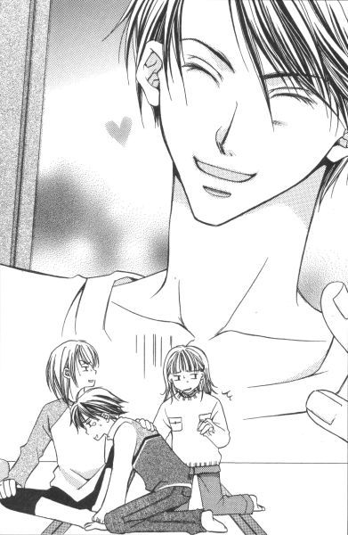
「いいわ、祐麒さん。お布団持っていらっしゃい。一緒ってわけにはいかないけれど、襖をはさんだ次の間で寝たらいいわ」
いつまで経っても終わる気配のない口喧嘩を放っておいて、祥子さまが祐麒に向き直った。
「あ、ありがとうございます。祥子さんっ」
（さ、祥子さんだとー）
血を分けた弟ながら、カチンときた。私の大切なお姉さまに向かって、「さん」付けで呼ぶとは何事だ。
「祐巳。案内してあげて」
「......はい」
私は渋々立ち上がった。お姉さまの命令は絶対だし。祥子さま自身が「祥子さん」と呼ばれることに違和感を感じていないようだから、私が一人で騒いだってしょうがないんだ。
「あ、だったら僕も行くよ」
柏木さんが喧嘩を中断して追いかけてきた。
「待て」
白薔薇さまがあわてて止めた。
「どうして貴様が一緒に行く？」
「ユキチがここで寝るなら、僕の分も布団を持ってこなきゃ」
自分の正当性を信じて疑わない、って表情で柏木さんは「だってそうだろう」と続けた。
「隣の部屋とはいえ、襖一枚。健康な一少年であるユキチがだよ、祐巳ちゃんはともかく、さっちゃんや君を襲ったらどうするんだ。そうならないためのお目付役だよ」
あんたの方が危ないよ、って思ったけど、柏木さんは女に興味ないんだっけ。身内の贔屓目を除いて客観的に考えれば、もちろん高校一年生の男子は危ない存在かもしれないけど。うーん、でもそういう生々しい話、勘弁してくれないかな。今回のは特に、相手が弟だし。
そんな時。
「祥子さん、まだ起きている？」
廊下側の襖がすーっと開いて、清子小母さまが現れた。
「あら、優さんたちもいたの？」
「聞いてください、義叔母さま。みんなして、僕だけのけ者にしようとしているんですよ」
媚びるでもなく、冗談めかしもせず、柏木さんは淡々と事実を伝えた。確かに、柏木さんを排除しようとしているんだから「のけ者」という表現は正しい。
「まあ、どうして？」
「きっと、僕が格好いいからでしょう」
──由乃さん流に言うと、この人の脳味噌も絶対溶けている。
「いえ、そうじゃなくてですね──」
私が言いかけるのを、白薔薇さまが「うぉっほん」と咳払いして止めた。察するに、どうやら清子小母さまは柏木さんの「趣味」をご存じないらしい。確かに、小母さまのおっとりしたほほえみ見てると、そういう話聞かせちゃいけないって思っちゃうけど。
「だめよ、仲よくしなくちゃ。ね？」
「......はあ」
そんなわけで、ここにいる大方が反対しているにもかかわらず、柏木さんは祐麒と共に私たちの部屋の隣で休むことになってしまった。
「──仕方ない。いいか祐麒。柏木が襲ってきたら、大声で助けを呼べ」
布団部屋に柏木さんと布団を取りにいく祐麒を呼び止めて、白薔薇さまは小さくアドバイスした。
ちょっとため息をついて彼らを見送ってから、祥子さまは清子小母さまに向き直って尋ねた。
「そういえば、お母さまは何かご用事でも？」
一時間以上前に「おやすみなさい」を言って別れたのに、突然訪ねてくるからには何かあったのではないかと思って当然だ。寝間着にガウン羽織っているところからすると、清子小母さまはすでに眠る態勢に入っていたと思われる。
「ああ、そうそう。祥子さん。今夜は宝船を浮かべる日ではなかったかしら？」
「あ、本当。毎年、二日でしたわね。うっかり忘れていました。すぐに用意いたします」
祥子さまはそう言うと、和室を出てどこかに行ってしまった。行く時は持っていなかった筆ペンとか細いマジックペンとかボールペンとかいった「書く物」と、きれいな千代紙を手にして戻ってきたところを見ると、その「宝船を浮かべる」ためにはそれらが必要不可欠なのだろうと思われた。
「いったい何が始まるんです？」
白薔薇さまも知らないらしい。部屋の隅にあった文机を灯りの側まで持ってきて、千代紙の裏に何か書き始めた清子小母さまに質問する。
「『なかきよ』、聖さんの家ではやらない？」
「なかきよ？」
当然のように言うけど、福沢家でもやらない。そもそも、何をやるのかさえわかっていないけど。
「あ、なかきよ？ ふーん、なつかしいな。義叔母さま、まだやってんだ」
柏木さんが抱えてきた布団を下ろしながら言った。
「何です、『なかきよ』って」
祐麒が聞き返す。
「やらないのか、お前んちも」
──やらない、ってば。だから、その『なかきよ』って何。宝船っていうのと、何か関係あるの？
「お呪いなのよ。なかきよの、から始まるお歌を書いた帆掛け船を枕の下に敷いて眠ると、いい初夢がみられる、って言われているの」
祥子さまが説明してくれているうちに、清子小母さまはその文句を書き終わったらしく、筆ペンを置いた。「これよ」と言って見せてもらった文字は、流れるような美しいかな文字だった。
なかきよの
とおのねふりの みなめさめ
なみのりふねの
おとのよきかな
「ははあ、回文ですね」
白薔薇さまがつぶやいた。
「回文、って？」
私が首を傾げると、祐麒が「そんなことも知らないのか」って赤面しながら小声で言った。
「逆さから読んでみろよ」
「なかきよの──あっ」
すごい。「とまと」とか「しんぶんし」とかと同じだ。そういえば、クラスに「こいけけいこ」さんがいたな。私なんか「みゆわざくふ」で、ぜんぜん面白くないのに。
「でも。どういう意味なんですか、これ」
お呪いというより呪文みたいで、ぜんぜん心に染み込んでこない。だいたい、『なかきよ』って何。
「『なかきよの』はね、『長き夜の』ということよ。濁音は清音に直しているのね。いろは歌もそうでしょう？」
「いろは歌？」
「ほら。『いろはにほへと』は『色は匂えど』じゃない？」
「はあ」
って、そのことも今日初めて知った。でも、これ以上お姉さまである祥子さまに恥をかかせては申し訳ないので、黙っていた。
長き夜の
遠の眠の皆目ざめ
波乗り船の
音のよきかな
祥子さまは、改めて漢字仮名交じりでその歌を書いてくれた。すると意味不明だった呪文が、ちゃんとした和歌に見えてくるから不思議だ。
「長き夜の──」
細かい意味はわからないけど、大きな船に揺られて夜通しいい夢をみられるような気がしてきた。だって「音のよきかな」なわけだし。
「これ、小笠原家の習慣ですか」
「いいえ。私の実家の、なの。嫁いできて最初のお正月、この家で誰も宝船折らないからビックリしちゃった」
清子小母さまは帆掛け船を折りながら、少女のように笑った。確かに、あまり世の中には浸透していない気がするけど。少なくとも、私は初耳だったし。白薔薇さまだってそうみたいだし。
しかし、さすがは元華族のお家。雅なことといったら、この上ないなぁ。清子小母さまは「お金持ちの小笠原家の奥さま」でなくても、こんな風に優雅に暮らしていかれるんじゃないかと思う。他にも私たちの思いも寄らない習慣が、この家では当たり前のように存在しているかもしれない。
で、今では祥子さまが一緒に宝船を折る。祥子さまのお祖父さんやお父さんはやらないけど、二日の日にお客さまがあったりお手伝いの人が残っていたりすると、珍しがってつき合ってくれるそうだ。柏木さんもその一人。従兄だから、小さい頃から泊まりにきたりしているんだろう。悔しいけれど、さっき白薔薇さまに言った「私が妹になる前のことですし」という言葉を心の中でお祈りみたいに唱えて自分を納得させた。過去のことは過去のこと。
もちろん、宝船を作るという作業に私たちも進んで参加した。こんな珍しい経験できて、その上いい夢みられるのにやらない手はないでしょう。
「なかきよのとおのねふりのみなめさめ......」
祥子さまが書いてくれたお手本を見ながら、私たちはそれを写す。筆ペンでのびのび書かれた平仮名の文字は芸術的で、それに引き替え極細サインペンで書いた私の文字は、細くて小さくてカクカクしているばかりか、日頃横書きに慣れているということも手伝って徐々に曲がっていってしまう。おまけに字の配分なんかも滅茶苦茶で、左と下に余白なんかできて余り見栄えがよくなかった。
「いいじゃん。折ったら見えなくなるんだし」
読心術使ったみたいに、白薔薇さまが慰めてくれた。どうせ、また私が百面相していたんだろうけど。
狭い文机を、二人ずつ交代で肩寄せあって使った。書き終わったのや書きかけなのをチラリと盗み見すると、白薔薇さまも柏木さんもきっちりした上手な文字を書いていた。何ていうのかな、縦長でも横長でも傾いてもいなくて、原稿用紙の升目を無駄なく使うような、そんなお手本みたいな字。なのに二人とも、どこか微妙に独自の癖があるっていうか。だから印象が全然違っている。まあ、人間自体強烈な癖の持ち主だからそれもうなずける。
祐麒の文字は大きくて堂々としている。上手くはないけど、味がある。普段見慣れているはずなのに、こうやってみんなのと比べると何か新鮮だった。
歌を書き終えたら、逆からもう一度読み直して間違いがないか確かめた後、文字を中にして紙を折る。まずは二艘船を作って、それを応用して帆掛け船を作る。折り紙なんか久しぶりでちょっと戸惑ったりしたけど、それでも途中経過の風車をいじくり回しているうちにどうにか完成した。
「そうじゃないわ、祐麒さん。ほら、ここは斜めに折るのよ」
先に宝船を作り終わっていた祥子さまが、遅れた祐麒に付きっきりで折り方を教えていた。
「気がもめるよね」
柏木さんはさらりと言ってくれたけど、その意味は計り知れない。
「お休みなさい」
今度こそ本当に、って。清子小母さまは、全員の船が折り上がるとご自分のベッドルームに帰っていかれた。祐麒は襖が閉められる前に、私たちの部屋との境ギリギリまで自分の布団を持ってきて、逆に柏木さんの布団を反対側の端にめ一杯離していた。
「祥子あっち、祐巳ちゃん真ん中、で私がここね」
お布団敷いている時は、寝る場所はジャンケンで決めようなんて言っていた白薔薇さまだったが、どういう気持ちの変化か寝る段になって突然各自の布団を指定した。花寺の二人が寝ている部屋に近い順に白薔薇さま、私、祥子さま、って具合だ。
「川の字、ったら子供が真ん中って決まっているでしょ。祐巳ちゃん身長も年も胸も小さいから子供ね」
「......じゃあ、祥子さまがお母さんで白薔薇さまがお父さんなんですか」
思ったまま口にすると「失礼な子だね」って、首に腕を回して締められた。
「文句ないでしょ、祐巳ちゃんには。祥子の隣なんだから」
「はあ」
嬉しいような弱ったような。祥子さまの寝顔を見られるチャンスだけど、逆にこっちの馬鹿面見られてしまうかもしれないわけだし。
「そんなご心配なさらなくても、白薔薇さま」
祥子さまがほほえむ。
「そうはいかない」
白薔薇さまは目に力が入っている。
「用心に越したことないからね」
襖を胡散臭そうにチラリと見る。
（......あ、わかった！）
白薔薇さま、柏木さんを警戒しているんだ。喜んでいいのか嘆いていいのか、祐麒なんて全然眼中にない。柏木さんが良からぬ気持ち起こした場合を考えて、眠る位置を指定したんだ。
例えば、祐麒を襲った場合。すぐに襖を開けて踏み込めるように。
例えば、祥子さまに近づこうとした場合。間に寝ている二人の人間が障害物となって、阻めるように。男にしか興味ないっていっても、祥子さまにキスしようとした前科があるんだから油断できない。しかしそうなると、私はしがない障害物なわけだ。
「電気はどうする？」
「茶色にしましょう！」
私は元気よく手を上げた。
「茶色、って？」
二人が同時に聞き返す。おかしいな、普通茶色って言わない？
すると、襖を隔てた向こうからクックックッと忍び笑いが漏れてきた。──柏木さんだ。
「失礼、聞くとはなしに聞いてしまった。祐巳ちゃん、それって小さい電球一つってこと？」
「はあ」
「うまい表現だね。確かに部屋が茶色くなるよ」
柏木さんに誉められても嬉しくないんですけど。ああ、でももう彼の笑いがこっちの部屋まで伝染してきて、あろうことか祥子さままでがクスクスと笑っていた。白薔薇さまなんか、布団に顔押しつけて身をよじりながら声殺しているし。
「さすがユキチのお姉さんだな。祐巳ちゃん、いい味だしている」
襖のあちら側で、腹を抱える柏木さんのその横で頭抱えているであろう祐麒の姿が、私には見えるようだった。大ボケの姉ですまない、弟よ。
隣の部屋は、「茶色」ではなく「黒」を選んだらしい。欄間越しに、電気が消されたのが見えた。
となると、問題はこちら側。
「真っ暗な方がよく眠れる気がしません？」
「祥子の言うとおりよ。二対一で、祐巳ちゃんの意見却下。で、消灯」
スピード採決スピード施行により、あっという間に電気は消された。
「あ、ひどい」
「祐巳。もしかしたら、暗いの怖い？」
祥子さまが囁く。
「ち、違います」
「あ、図星だ」
白薔薇さまが意地悪く笑う。
「だから、違うんですって」
本当は図星なんだけど、認めるのしゃくだから否定した。だけど否定すればしただけ、そうだって言っているようなものだった。
「えーい、ゴタゴタ言ってると簀巻きにしちゃうぞ」
簀巻き？ ──って考えているうちに、たぶん白薔薇さまだと思うけど、私に掛け布団を被せて左右からギュッと挟んだ。でもこれ、簀巻きじゃなくて、どちらかというとベルギーワッフルじゃないかな。
「怖いなら、怖いって正直に白状しちゃえ」
「ひーん」
ぎゅうぎゅう。
「お姉さまっ、助けてっ」
白薔薇さまったら、ここぞとばかり私を抱きしめる。布団の上からだけど。側に祥子さまがいるものだから、私虐めにも熱が入っているんだ。
「助けて、って。何しているの？」
「白薔薇さまが──」
私がつぶやいたと同時に電気がついた。煌々とした灯りの下、白薔薇さまは私から身体離して祥子さまに降参のポーズをした。
「前言撤回。やっぱ、茶色を支持するわ。暗いと何かが起こっても、発見が遅れる」
「その方が、良さそうですわね」
電気の紐を持ったまま、祥子さまも苦笑していた。身を起こして二人の視線の先を見ると、襖が二枚分開いていて、そこに柏木さんと祐麒が今まさに部屋に飛び込もうという姿勢のまま静止していた。暗くしておくと襖が開いたのだってわかりづらい、ってことだ。障子を通して入ってくる、外からの明かりがあるから、まるっきり真っ暗ってわけではないけど。
「言っておくが、良からぬ目的でここを開けたんじゃないからな」
柏木さんは乱れた前髪を整えながら言った。それに対して、白薔薇さまは笑いながらうなずく。
「そんなこと、わかっているよ。夜這いするにしては、登場が早すぎる」
「だったら、いい」
さっきまで子供みたいな喧嘩していたくせに、どうしてこんなに大人みたいな会話できるんだろうこの人たち。──って私は思った。多くを説明しなくてもちゃんとわかって、ちゃんとわかったってサインもしっかり受け取っていて。それで、少しだけ洒落が入っていたりして。
もしかして白薔薇さまの会話のレベルに、柏木さんは合っているのかもしれない。私なんか時々迷宮に入り込んでしまいそうな会話も、柏木さんならキャッチボールみたいにポンポンってやりとりできたりして。口喧嘩を続けられること自体、気が合うっていうか。そんなこと口にしたら、白薔薇さまにまた締められちゃうだろうけど。
それにしても「夜這い」って、いつの時代の人なんだ。
「祐麒、君のお姉ちゃんのこと、もうからかわないから安心してお休み」
状況が把握できなくて呆然としていた祐麒だが、名指しで告げられるとハッと我に返ってあわてて自分が開けた襖一枚分を閉めた。
「お、おやすみなさい」
「はい、おやすみ。可愛いね、祐麒は」
白薔薇さまは、私の弟を気に入ったようだ。タヌキ顔が好きなのかな。
「じゃ、可愛くない僕も退散するとしよう」
「用心棒、ご苦労さん」
「いや、何」
柏木さんが残った一枚の襖に手を掛けると、祥子さまが小さくつぶやいた。
「優さん。心配してくれて、ありがとう」
「おやすみ」
とてもソフトに、柏木さんは襖と襖の端を合わせた。それから隣では、どういうわけか無言で枕投げが始まって、こちら側を呆れさせたんだけど。襲うの襲われないの、なんて話の後だから、何だか健康的でほほえましくなってしまった。
「あれでは、宝船が行方不明になってしまうわね」
小さい電気を一つ残して部屋を茶色くすると、祥子さまは私の隣の布団にそっと潜り込んだ。その時、微かな風がおこってシャンプーの香りが鼻をくすぐった。私の髪か祥子さまの髪か、それともなければ白薔薇さまの髪の匂いかもしれないけれど。別にそんなことは関係なくて、その空気に包まれていることが何だか幸せに思えてきた。
「そうそう、祐巳ちゃん。明日の朝、六時半起床だからね」
いつの間に用意したのか、白薔薇さまはセット済みの目覚まし時計を私の枕もとに置いた。
「えーっ」
学校ある日じゃないんだから、もう少しくらいのんびりしたいと思ったけど許してくれない。
「みんなで朝ご飯作るんだよ。『合宿』なんだからね」
聞けば、清子小母さまの作るお料理というのは美味しいけど非常に時間がかかるらしい。でもって、清子小母さまが朝ご飯を作り始める前にキッチンを占拠して、手早く簡単な朝ご飯を作ろうという計画だとか。
「朝食にパン食べたいと思ったら、まず小麦粉の分量はかり始めるような人なのよ」
呆れたように、祥子さまはつぶやいた。まあ、お茶を入れようと右往左往していたのを見ていたから、妙に納得してしまえるんだけど。普段の食事は、当たり前のようにお抱え料理人が作ってくれるそうだ。
「......これでラジオ体操あったら、完璧に合宿ですね」
ぽろりと口を滑らせると、白薔薇さまは呵々と笑った。
「いいね、やろうか」
「ご勝手に。でも、私はつき合いませんからね」
──確かに。祥子さまにラジオ体操は、ちょっとミスマッチ。
朝ご飯食べ終わったら祐麒共々車で自宅まで送ってくれるって白薔薇さまが言ったけど、私は丁重に断った。でも最寄りの駅まで歩くとなると結構時間がかかるという話で、かといって柏木さんの車に乗せてもらうのも遠慮したい。だって白薔薇さまと同じ年なんだから、柏木さんだって免許取り立てなわけでしょ。ハンドルテクニックなんて信用できないし、第一あの赤い車。見ているだけで、小恥ずかしいったらありゃしない。
どうしようかな。
とろとろ考えていると、お布団が自分の体温で温かくなってきて、何だかうとうとしてきた。いつの間にか隣の部屋の枕投げも終了して、静かになっている。寝る前にあれだけ運動していたら、二人とも布団に入ってすぐに熟睡するだろう。
私は、柏木さんのこと全面的に好きにはなれないけど、思っていたより嫌いな人じゃないって感じた。だって祥子さまと血がつながっていて、それから祥子さまが大昔（ここ強調！）に好きだった人なんだから。そんなに悪い人なわけがないんだ、って。
私は、寝返りを打ってちょっとだけ祥子さまに近づいた。寒くないように、私たちは互いの布団をぴったりとくっつけている。
（寝ちゃったのかな、お姉さま）
背中に感じる白薔薇さまの気配は、すでにお休みモードだった。こらこら、私たちを守ってくれるんじゃなかったの？
小さないびきは、聞かなかったことにしてあげた。白薔薇さまのためじゃなく、白薔薇さまファンの数多くの後輩のために。
（それにしても、夢みたい）
茶色く染まった部屋の中、手を伸ばせばすぐ届きそうなくらい近くに祥子さまの寝顔が見える。この姿を、この瞬間に感じていられるのは私だけだった。
従兄でも婚約者でも、男である柏木さんには許されない。
私は、祥子さまの妹になることができる女に生まれて、そして祥子さまと同じ時代にリリアンの生徒となれて本当によかったと思う。マリア様に、心から感謝するのだった。
私はいつも仰向けだけど、今日は右肩を下にして眠ることにした。
──と、突然。祥子さまの瞼がパチリと開いた。
（えっ!?）
覗きがばれた中年男性みたいに私はパニックを起こしたが、祥子さまは別に咎めるわけでもなかった。
「祐巳」
私にだけ聞こえる声で、祥子さまは話しかけてきた。
「は、はいっ」
「今日は来てくれて嬉しかったわ」
「はいっ」
「嫌じゃなかったら、また遊びに来て」
「はいっ」
情けないことに私は「はい」を連発するだけで、気の利いた返事ひとつ返すことができなくって。祥子さまは呆れたのかどうかわからないけれど、小さく笑って「おやすみ」と再び目を閉じてしまった。
せっかく話しかけてもらえたのに──。自己嫌悪になりながら、祥子さまの言葉を頭の中で再生してみて舞い上がりそうになった。
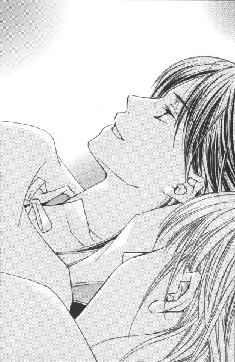
（嬉しかった、って言ってた？ それに、また遊びに来てって？）
興奮して、さっき訪れた睡魔なんか吹っ飛んでしまった。
せっかく宝船折ったのに。早く眠らないと、夢をみる前に朝が来てしまう。
でも、私の単純な頭の中は、祥子さまの声で輪唱のように繰り返し繰り返し甦るのだ。
嬉しかったわ
遊びに来て
嬉しかったわ
遊びに来て
いつしか言葉はうち寄せる大海原の小波になり、私はその上に浮かぶ大きな宝船の上にいた。
その年私が見た初夢は、船上で弁天様のコスプレした祥子さまが、塔のように積み重ねたお寿司の箱を一生懸命運んでいる、といったものだった。
お手伝いしなくちゃ、って思っていると、大黒天姿の白薔薇さまがたこ焼きとか焼きトウモロコシとかを詰めた大きな袋を左肩に担いで現れて、笑いながら右手に持った打ち出の小槌を振り回して私を追いかけてきた。
打ち出の小槌から出てきた物は、たくさんのキャンディー。それが雨のように、いつまでもいつまでも降りやむことはなかった。
長き夜の 遠の眠の皆目覚め波乗り船の音のよきかな
あとがき
いきなりですが、あなたのお宅では『なかきよ』やりますか？
こんにちは、今野です。
『なかきよ』、何それ？ ──と思った方、あなたはずばり小説を全部読む前に「あとがき」を開いてしまった人ですね。
いえ、いいんです。決して責めているわけではありません。「あとがき」から読む読者は非常に多いので、作者もそれを前提に書いていたりしますから。
『なかきよ』で通じないなら、『宝船』ではいかがでしょう。毎年初夢をみる晩には、帆掛け船を折って枕の下に置いて寝ていますか。それとも、やっぱり「何それ？」のままですか。
なぜ、そんな質問をしたかというと、我が家では例年当然のようにやっていることであるにもかかわらず、友人知人にそれをしている人が見あたらないので、これは意外にマイナーな行事だったのかなぁと思い始めまして。この際だからアンケートなんかとったらどういう結果がでるのかなぁ、とふと考えただけの話なんです。
しかし、これは単に私の好奇心を満たすだけのものなので、協力してもこれといった見返りはありません。それでもいいというやさしい方、いつもくださるお手紙のどこかに「うちでもやってます」とか「やりません」とか書いておいてくれると、私が非常に喜びます（←喜ぶだけかい！）。
しかし、風習って面白いですよね。
我が家は東京在住にしては迷信とかお呪いとかが生活習慣の中に溶け込んでいる方であると思うのですが（特定の宗教がらみじゃなくて土着って感じのやつね）、地方によってはまだまだいろいろ変わった風習とか受け継がれているようで、知人から故郷のお話を聞いたり読者からの手紙を読んだりして「へえー」と思うことがよくあります。
一例を挙げると、「節分の日に太巻きを一本、ある方角を向いて食べる」とかね。これは、何年か前に読者から教えてもらった行事です。昔の手紙を奥の方から出すのが困難なので、どなたが送ってくれたかとか、どの辺りの風習であるとか確認できなくて申し訳ないのですが。とても面白いと思いました。
しかし太巻きを食べている間は口を利いてはいけない、なんて大変な戒めつきだというからやる方はとても大変でしょうね。透明人間になれたら、一家で真面目にそれに取り組む風景を是非とも見てみたいものです。モアイ像みたいにきれいに揃っていてくれると、なお嬉しい。この場合、食べている最中に電話が鳴っても誰も受話器をとらないのでしょうか。うーん。
場所によっては戒めがゆるくなるようで、「太巻きは食べるけど、向きとか無言とかという決まりはない」という情報も後日別の方面から入ってきました。節分って、太巻き食べるの常識なんですか？うちでは豆まきをして、それから豆を年の数だけ食べる、っていうのしかやらないけどなぁ。でも、何だか『なかきよ』よりはメジャーな予感がします。
ちなみに『なかきよ』は今野家に伝わるというより、母が実家から嫁入り道具と一緒に東京にもってきた習わし。母の家系は別に清子小母さまのように元華族でもなんでもなくて、代々続いた庶民です。ご先祖がいつ頃どのような経緯でその様な雅（だと私は思っている）な風習を取り入れるようになったかは、もはやわかりません。
そういえば、初夢というのも元日の夜とか、一月二日の夜とか、節分の夜とか、いろいろ説があるようですね。小説の中では、私がそう認識している二日の日を採用しました。だから、本文読んで「あれ？」と思った方もいたかもしれませんね。あなたの家では、いつみた夢を「初夢」と認定していますか？
ところで、またしても二本立てで登場ですが、いかがなものでしょうか？
一本目はいつもの雰囲気のお話で、二本目は番外編。時間はひっくり返っていて、『長き夜の』は『ロサ・カニーナ』よりほんの少し過去になります。
あれ、それじゃ『いばらの森』と同じですね。ただし、今回の二本目は悲恋じゃありません。ホッとした方もいるでしょう。でも安心してはいけません。男どもが出てきます。ですからＫ氏が死ぬほど嫌いな方、『長き夜の』の方は強いてお勧めはいたしません（......作者がそれを言ってどうする）。いいですか、忠告しましたよ。読んだ後、「男が出てるじゃないか」っていう文句は言わないでね。でも、本編読んだ後「あとがき」にたどり着いた人には効かないですね、この忠告（笑）。
時に、ロサ・カニーナという花を知っていますか？
架空の花ではなくて、ちゃんと実在する薔薇の花です。ローズヒップティーには、ロサ・カニーナの実を使うことが多いとか。私も、今回初めて知りました。
そうそう、「白薔薇さま」をあなたはどう読んでいますか？
これは最近よく手紙などで質問されることなので、ここら辺でちゃんとお答えしておこうかなぁと思いました。
正しくは「ロサ・ギガンティア」と発音します。「さま」は抜きです。ルビ（ふりがな）が「さま」までついているでしょ？祐巳たち下級生も「ロサ・ギガンティア」と呼んでいます。これは別に、呼び捨てにしているわけじゃなくて、「ロサ・ギガンティア」自体に敬意が込められているという解釈をしてください。そのため、字面では「白薔薇さま」にしてあるんです。紅薔薇さまや黄薔薇さまも同じで、「ロサ・キネンシス」と「ロサ・フェティダ」になります。「つぼみ」はブゥトン。ルビにすると小文字も同じ大きさになってしまうから、紛らわしいかもしれないので一応付記しておくことにします。
さて、あとがきにいただいたページもそろそろ尽きてまいりました。
説明しなきゃ、と思っていることはまだいくつかあるのですが、それはまたいずれ別の機会にでも。あとがきじゃなくて、小説の中で解説してしまうかもしれませんしね。
──ということで。
次にお目にかかる時は、たぶん西暦二千年になっていることでしょう。
それまで、皆さまごきげんよう。
底本：「マリア様がみてる ロサ・カニーナ」コバルト文庫、集英社
1999年12月10日第1刷発行
2003年1月30日第8刷発行
2009年05月14日ルビのミス修正（暇な人z7hc3WxNqc1426行間髪→間髪）
※ 「なかきよ」とは違いますが、「......初夢を見ようというので、二日の晩に枕の下へ宝舟の絵を描いた紙をはさみます。休むというとめでたい夢を見るという......」というところから始まるのが、
落語 - 桂米朝 - 福の神.mp3 9,222,259 1334f5490d33a2a1be340c4ee23b7723
です。これは上方だけでなく、江戸庶民の間でも流行していたようで、ほとんどの商売は休んでいた正月一日にも宝舟売りが来た、といった記述が岡本綺堂の風俗江戸物語にあります。
******* 底本の校正ミスと思われる部分 *******
底本p128
でも、ロサ・カニーナはっきりと首を横に振る。
ロサ・カニーナははっきりと
底本p221
この部屋にはゲストルームっていうのがいくつかあるみたいだけど
この家
********************************************